Data science is a field that intersects with statistics, mathematics, computer science, and a wide range of applied fields, such as marketing, biology, and physics. As such, it is hard to formally define data science, but obviously data are central to data science, and it is useful at the start to consider some types of data that are of interest.
1.1 Baby Crawling Data
When thinking about data, we might initially have in mind a modest-sized and uncomplicated data set consisting primarily of numbers. As an example of such a data set, a study was done to assess the possible relationship between the age at which babies first begin to crawl and the temperature at the time of first crawling. Participants in the study were volunteers.1 The data set from this study separates the babies by birth month, and reports the birth month, the average age (in weeks) when first crawling for that month, the standard deviation of the crawling ages for that month, the number of infants for that month, and the average temperature during the month when crawling commenced. The data are shown in Table 1 below.2
This data set has many simple properties: it is relatively small, there are no missing observations, the variables are easily understood, etc.
1.2 World Bank Data
The World Bank provides data related to the development of countries. A data set was constructed from the World Bank repository. The data set contains data on countries throughout the world for the years 1960 through 2014 and contains, among others, variables representing average life expectancy, fertility rate, and population. Table 2 contains the first five records and then 10 more randomly selected records for these variables in the data set.
TABLE 2: A small portion of the World Bank data set
country
year
fertility.rate
life.expectancy
population
Andorra
1978
33746
Andorra
1979
34819
Andorra
1977
32769
Andorra
2007
1.180
81292
Andorra
1976
31781
Cayman Islands
1977
13840
Jamaica
1992
2.855
70.45
2423044
Maldives
1975
6.981
47.97
134077
St. Vincent and the Grenadines
1972
5.629
65.47
92465
Mauritania
1981
6.368
54.84
1578670
Oman
1993
6.098
68.95
2043912
Bahamas, The
1966
3.893
64.68
146364
Angola
1983
7.205
40.53
8489864
French Polynesia
1980
3.989
64.71
151702
Lesotho
1974
5.780
50.29
1122484
Notice that many observations contain missing data for fertility rate and life expectancy. If all the variables were shown, we would see much more missing data. This data set is also substantially larger than the baby crawling age data, with 11880 rows and 15 columns of data in the full data set. (Each column represents one of the variables. Each row represents one country during one year).
1.3 Email Data
It is estimated that in 2015, 90% of the total 205 billion emails sent were spam.3 Spam filters use large amounts of data from emails to learn what distinguishes spam messages from non-spam (sometimes called âhamâ) messages. Below we include one spam message followed by a ham message.4
From safety33o@l11.newnamedns.com Fri Aug 23 11:03:37 2002
Return-Path: <safety33o@l11.newnamedns.com>
Delivered-To: zzzz@localhost.example.com
Received: from localhost (localhost [127.0.0.1])
by phobos.labs.example.com (Postfix) with ESMTP id 5AC994415F
for <zzzz@localhost>; Fri, 23 Aug 2002 06:02:59 -0400 (EDT)
Received: from mail.webnote.net [193.120.211.219]
by localhost with POP3 (fetchmail-5.9.0)
for zzzz@localhost (single-drop); Fri, 23 Aug 2002 11:02:59 +0100 (IST)
Received: from l11.newnamedns.com ([64.25.38.81])
by webnote.net (8.9.3/8.9.3) with ESMTP id KAA09379
for <zzzz@example.com>; Fri, 23 Aug 2002 10:18:03 +0100
From: safety33o@l11.newnamedns.com
Date: Fri, 23 Aug 2002 02:16:25 -0400
Message-Id: <200208230616.g7N6GOR28438@l11.newnamedns.com>
To: kxzzzzgxlrah@l11.newnamedns.com
Reply-To: safety33o@l11.newnamedns.com
Subject: ADV: Lowest life insurance rates available!
moode
Lowest rates available for term life insurance! Take a moment
and fill out our online form
to see the low rate you qualify for.
Save up to 70% from regular rates! Smokers accepted!
http://www.newnamedns.com/termlife/
Representing quality nationwide carriers. Act now!
From rssfeeds@jmason.org Tue Oct 1 10:37:22 2002
Return-Path: <rssfeeds@example.com>
Delivered-To: yyyy@localhost.example.com
Received: from localhost (jalapeno [127.0.0.1])
by jmason.org (Postfix) with ESMTP id B277816F16
for <jm@localhost>; Tue, 1 Oct 2002 10:37:21 +0100 (IST)
Received: from jalapeno [127.0.0.1]
by localhost with IMAP (fetchmail-5.9.0)
for jm@localhost (single-drop); Tue, 01 Oct 2002 10:37:21 +0100 (IST)
Received: from dogma.slashnull.org (localhost [127.0.0.1]) by
dogma.slashnull.org (8.11.6/8.11.6) with ESMTP id g9180YK15357 for
<jm@jmason.org>; Tue, 1 Oct 2002 09:00:34 +0100
Message-Id: <200210010800.g9180YK15357@dogma.slashnull.org>
To: yyyy@example.com
From: boingboing <rssfeeds@example.com>
Subject: Disney's no-good Park-Czar replaced
Date: Tue, 01 Oct 2002 08:00:34 -0000
Content-Type: text/plain; encoding=utf-8
X-Spam-Status: No, hits=-641.2 required=5.0
tests=AWL
version=2.50-cvs
X-Spam-Level:
URL: http://boingboing.net/#85506723
Date: Not supplied
Disney has named a new president of Walt Disney Parks, replacing Paul Pressler,
the exec who did his damnedest to ruin Disneyland, slashing spending (at the
expense of safety and employee satisfaction), building the craptastical
California Adventure, reducing the number of SKUs available for sale in the
Park stores, and so on. The new president, James Rasulo, used to be head of
Euro Disney. Link[1] Discuss[2]
[1] http://reuters.com/news_article.jhtml?type=search&StoryID=1510778
[2] http://www.quicktopic.com/boing/H/rw7cDXT3W44C
To implement a spam filter we would have to get the data from these email messages (and thousands of others) into a software package, extract and separate potentially important features such as the To: line, the Subject: line, the message body, etc., and then compare spam and non-spam messages to find a method to classify new emails correctly. These steps are not simple in this example. In particular, we would need to become skilled at working with text data.
1.4 Handwritten Digit Recognition
Correct recognition of handwritten digits by a machine is commonly required in todayâs world. For example, the postal service must scan and recognize zip codes on handwritten mail. Roughly speaking, a handwritten digit is scanned and converted to a digital image. To keep things simple we will assume the scanning creates a grayscale rather than a color image. When converting an image to a grayscale digital image, a grid of âpixelsâ is used to represent the handwritten image, where each pixel has a black intensity value. For concreteness weâll assume that intensities are recorded on a scale from \(-1\) (no black intensity at all) to \(1\) (maximum black intensity). If the pixel grid is 16 by 16 then the resulting digitized image will contain 256 intensity values, one for each of the \(16\times 16 = 256\) pixels.
For example, here are the data corresponding to one handwritten digit, which happens to be the numeral â6â. Figure 1 shows how that digit looks when digitized.
Looking at the digitized images, it may seem simple to correctly identify a handwritten numeral. But remember, the machine only has access to the 256 pixel intensities, and must make a decision based on them.
Figure 2 shows the digitized images of the first 25 numerals in the data set, and Figure 3 shows the digitized images of the first 25 numeral sevens in the data set. These give some idea of the variability in how digits are written.5
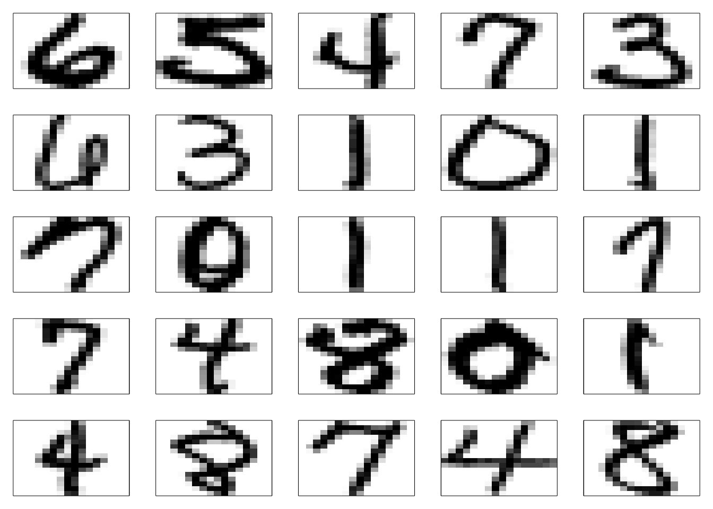
FIGURE 2: The first 25 handwritten numerals, digitized
FIGURE 3: The first 25 numeral sevens, digitized
1.5 Looking Forward
The four examples above illustrate a small sample of the wide variety of data sets that may be encountered in data science. Each of these provides its own challenges. The baby crawling data present challenges that are more statistical in nature. For example, how might the study design (which isnât described here) affect methods of analysis and conclusions drawn from the study? Similar challenges are also present within the other data sets, but these data sets also present more substantial challenges prior to (and during) the analysis stage, such as how to work with the missing data in the World Bank data set, or how to effectively and efficiently process the email data to extract features of interest.
This book and associated material introduce tools to tackle some of the challenges in working with real data sets, within the context of the R statistical system. We will focus on important topics such as
Obtaining and manipulating data
Graphical tools for exploring and summarizing data
Communicating findings about data that support reproducible research
Tools for classification problems such as email spam filtering or handwritten digit recognition
Programming and writing functions in R
1.6 How to learn (The most important section in this book!)
There are several ways to engage with the content of this book and associated materials.
One way is not to engage at all. Leave the book closed on a shelf and do something else with your time. That may or may not be a good life strategy, depending on what else you do with your time, but you wonât learn much from the book!
Another way to engage is to read through the book âpassivelyâ, reading all thatâs written but not reading the book while at your computer, where you could enter the R commands from the book. With this strategy youâll probably learn more than if you leave the book closed on a shelf, but there are better options.
A third way to engage is to read the book while youâre at a computer, enter the R commands from the book as you read about them, and work on the practice problems within many of the chapters. Youâll likely learn more this way.
A fourth strategy is even better. In addition to reading, entering the commands given in the book, and working through the practice exercises, you think about what youâre doing, and ask yourself questions (which you then go on to answer). For example after working through some R code computing the logarithm of positive numbers you might ask yourself, âWhat would R do if I asked it to calculate the logarithm of a negative number? What would R do if I asked it to calculate the logarithm of a really large number such as one trillion?â You could explore these questions easily by just trying things out in the R Console window.
If your goal is to maximize the time you have to binge-watch Season 2 on Netflix, the first strategy may be optimal. But if your goal is to learn a lot about computational tools for data science, the fourth strategy is probably going to be best.
_# Introduction to R and RStudio
Various statistical and programming software environments are used in data science, including R, Python, SAS, C++, SPSS, and many others. Each has strengths and weaknesses, and often two or more are used in a single project. This book focuses on R for several reasons:
R is free
It is one of, if not the, most widely used software environments in data science
R is under constant and open development by a diverse and expert core group
It has an incredible variety of contributed packages
A new user can (relatively) quickly gain enough skills to obtain, manage, and analyze data in R
Several enhanced interfaces for R have been developed. Generally such interfaces are referred to as integrated development environments (IDE). These interfaces are used to facilitate software development. At minimum, an IDE typically consists of a source code editor and build automation tools. We will use the RStudio IDE, which according to its developers âis a powerful productive user interface for R.â6 RStudio is widely used, it is used increasingly in the R community, and it makes learning to use R a bit simpler. Although we will use RStudio, most of what is presented in this book can be accomplished in R (without an added interface) with few or no changes.
1.7 Obtaining and Installing R
It is simple to install R on computers running Microsoft Windows, macOS, or Linux. For other operating systems users can compile the source code directly.7
Here is a step-by-step guide to installing R for Microsoft Windows.8 macOS and Linux users would follow similar steps.
Click on the link RStudio under the Products tab, then select the Desktop option
Click on the Desktop link
Choose the DOWNLOAD RSTUDIO DESKTOP link in the Open Source Edition column
On the ensuing page, click on the Installer version for your operating system, and once downloaded, install as you would any other program
1.9 Using R and RStudio
Start RStudio as you would any other program in your operating system. For example, under Microsoft Windows use the Start Menu or double click on the shortcut on the desktop (if a shortcut was created in the installation process). A (rather small) view of RStudio is displayed in Figure 4.
FIGURE 4: The RStudio IDE
Initially the RStudio window contains three smaller windows. For now our main focus will be the large window on the left, the Console window, in which R statements are typed. The next few sections give simple examples of the use of R. In these sections we will focus on small and non-complex data sets, but of course later in the book we will work with much larger and more complex sets of data. Read these sections at your computer with R running, and enter the R commands there to get comfortable using the R console window and RStudio.
1.9.1 R as a Calculator
R can be used as a calculator. Note that # is the comment character in R, so R ignores everything following this character. Also, you will see that R prints [1] before the results of each command. Soon we will explain its relevance, but ignore this for now. The command prompt in R is the greater than sign >.
>34+20*sqrt(100) ## +,-,*,/ have the expected meanings
[1] 234
>exp(2) ##The exponential function
[1] 7.389
>log10(100) ##Base 10 logarithm
[1] 2
>log(100) ##Base e logarithm
[1] 4.605
>10^log10(55)
[1] 55
Most functions in R can be applied to vector arguments rather than operating on a single argument at a time. A vector is a data structure that contains elements of the same data type (i.e. integers).
Now the mysterious square bracketed numbers appearing next to the output make sense. R puts the position of the beginning value on a line in square brackets before the line of output. For example if the output has 40 values, and 15 values appear on each line, then the first line will have [1] at the left, the second line will have [16] to the left, and the third line will have [31] to the left.
1.9.2 Basic descriptive statistics and graphics in R
It is easy to compute basic descriptive statistics and to produce standard graphical representations of data in R. First we create three variables with horsepower, miles per gallon, and names for 15 cars.10 In this case with a small data set we enter the data âby handâ using the c() function, which concatenates its arguments into a vector. For larger data sets we will clearly want an alternative. Note that character values are surrounded by quotation marks.
A style note: R has two widely used methods of assignment: the left arrow, which consists of a less than sign followed immediately by a dash: <- and the equals sign: =. Much ink has been used debating the relative merits of the two methods, and their subtle differences. Many leading R style guides (e.g., the Google style guide at https://google.github.io/styleguide/Rguide.xml and the Bioconductor style guide at http://www.bioconductor.org/developers/how-to/coding-style/) recommend the left arrow <- as an assignment operator, and we will use this throughout the book.
Also you will see that if a command has not been completed but the ENTER key is pressed, the command prompt changes to a + sign. To get back to the regular prompt sign, you can either type something to finish the command (i.e., ) or ]), or you can press your ESC button and retype the whole command.
Next we compute some descriptive statistics for the two numeric variables (car.hp and car.mpg)
>mean(car.hp)
[1] 139.7
>sd(car.hp)
[1] 50.78
>summary(car.hp)
Min. 1st Qu. Median Mean 3rd Qu. Max.
62 108 123 140 180 245
>mean(car.mpg)
[1] 18.72
>sd(car.mpg)
[1] 3.714
>summary(car.mpg)
Min. 1st Qu. Median Mean 3rd Qu. Max.
10.4 16.9 18.7 18.7 21.2 24.4
Next, a scatter plot of cars.mpg versus cars.hp:
>plot(car.hp, car.mpg)
Unsurprisingly as horsepower increases, mpg tends to decrease. This relationship can be investigated further using linear regression, a statistical procedure that involves fitting a linear model to a data set in order to further understand the relationship between two variables.
1.9.3 An Initial Tour of RStudio
When you created the car.hp and other vectors in the previous section, you might have noticed the vector name and a short description of its attributes appear in the top right Global Environment window. Similarly, when you called plot(car.hp,car.mpg) the corresponding plot appeared in the lower right Plots window.
A comprehensive, but slightly overwhelming, cheatsheet for RStudio is available here https://www.rstudio.com/wp-content/uploads/2016/01/rstudio-IDE-cheatsheet.pdf. As we progress in learning R and RStudio, this cheatsheet will become more useful. For now you might use the cheatsheet to locate the various windows and functions identified in the coming chapters.
1.9.4 Practice Problem
When running a large program consisting of numerous lines of complicated code, it is often basic algebraic typos that lead to the most frustrating bugs. Having a good grip on the order of operations is a basic, yet very important skill for writing good code. To practice, compute the following operation in R.
There are several free (and several not free) ways to get R help when needed.
Several help-related functions are built into R. If thereâs a particular R function of interest, such as log, help(log) or ?log will bring up a help page for that function. In RStudio the help page is displayed, by default, in the Help tab in the lower right window.11 The function help.start opens a window which allows browsing of the online documentation included with R. To use this, type help.start() in the console window.12 The help.start function also provides several manuals online and can be a useful interface in addition to the built in help.
Search engines provide another, sometimes more user-friendly, way to receive answers for R questions. A Google search often quickly finds something written by another user who had the same (or a similar) question, or an online tutorial that touches on the question. More specialized is rseek.org, which is a search engine focused specifically on R. Both Google and rseek.org are valuable tools, often providing more user-friendly information than Râs own help system.
In addition, R users have written many types of contributed documentation. Some of this documentation is available at http://cran.r-project.org/other-docs.html. Of course there are also numerous books covering general and specialized R topics available for purchase.
1.11 Workspace, Working Directory, and Keeping Organized
The workspace is your R session working environment and includes any objects you create. Recall these objects are listed in the Global Environment window. The command ls(), which stands for list, will also list all the objects in your workspace (note, this is the same list that is given in the Global Environment window). When you close RStudio, a dialog box will ask you if you want to save an image of the current workspace. If you choose to save your workspace, RStudio saves your session objects and information in a .RData file (the period makes it a hidden file) in your working directory. Next time you start R or RStudio it checks if there is a .RData in the working directory, loads it if it exists, and your session continues where you left off. Otherwise R starts with an empty workspace. This leads to the next questionâwhat is a working directory?
Each R session is associated with a working directory. This is just a directory from which R reads and writes files, e.g., the .RData file, data files you want to analyze, or files you want to save. On Mac when you start RStudio it sets the working directory to your home directory (for me thatâs /Users/andy). If youâre on a different operating system, you can check where the default working directory is by typing getwd() in the console. You can change the default working directory under RStudioâs dialog found under the Tools dropdown menu. There are multiple ways to change the working directory once an R session is started in RStudio. One method is to click on the Files tab in the lower right window and then click the More button. Alternatively, you can set the sessionâs working directory using the setwd() in the console. For example, on Windows setwd("C:/Users/andy/for875/exercise1") will set the working directory to C:/Users/andy/for875/exercise1, assuming that file path and directory exist (Note: Windows file path uses a backslash, \, but in R the backslash is an escape character, hence specifying file paths in R on Windows uses the forward slash, i.e., /). Similarly on Mac you can use setwd("/Users/andy/for875/exercise1"). Perhaps the most simple method is to click on the Session tab at the top of your screen and click on the Set Working Directory option. Later on when we start reading and writing data from our R session, it will be very important that you are able to identify your current working directory and change it if needed. We will revisit this in subsequent chapters.
As with all work, keeping organized is the key to efficiency. It is good practice to have a dedicated directory for each R project or exercise.
1.12 Quality of R code
FIGURE 5: xkcd: Code Quality
Writing well-organized and well-labeled code allows your code to be more easily read and understood by another person. (See xkcdâs take on code quality in Figure 5.) More importantly, though, your well-written code is more accessible to you hours, days, or even months later. We are hoping that you can use the code you write in this class in future projects and research.
Google provides style guides for many programming languages. You can find the R style guide here. Below are a few of the key points from the guide that we will use right away.
1.12.1 Naming Files
File names should be meaningful and end in .R. If we write a script that analyzes a certain species distribution:
BAD: \(\color{red}{\verb+species.dist.R+}\) (too ambiguous and two periods can confuse operating systemsâ file type auto-detect)
BAD: \(\color{red}{\verb+speciesdist.R+}\) (too ambiguous and confusing)
1.12.2 Naming Variables
GOOD: \(\color{green}{\verb+rhino.count+}\)
GOOD: \(\color{green}{\verb+rhinoCount+}\)
GOOD: \(\color{green}{\verb+rhino_count+}\) (We donât mind the underscore and use it quite often, although Googleâs style guide says itâs a no-no for some reason)
Indent your code with two spaces. (RStudio does this by default when you press the TAB key.)
_# Scripts and R Markdown
Doing work in data science, whether for homework, a project for a business, or a research project, typically involves several iterations. For example creating an effective graphical representation of data can involve trying out several different graphical representations, and then tens if not hundreds of iterations when fine-tuning the chosen representation. Furthermore, each of these representations may require several R commands to create. Although this all could be accomplished by typing and re-typing commands at the R Console, it is easier and more effective to write the commands in a script file, which then can be submitted to the R console either a line at a time or all together.13
In addition to making the workflow more efficient, R scripts provide another large benefit. Often we work on one part of a homework assignment or project for a few hours, then move on to something else, and then return to the original part a few days, months, or sometimes even years later. In such cases we may have forgotten how we created the graphical display that we were so proud of, and will need to again spend a few hours to recreate it. If we save a script file, we have the ingredients immediately available when we return to a portion of a project.14
Next consider the larger scientific endeavor. Ideally a scientific study will be reproducible, meaning that an independent group of researchers (or the original researchers) will be able to duplicate the study. Thinking about data science, this means that all the steps taken when working with the data from a study should be reproducible, from the selection of variables to formal data analysis. In principle, this can be facilitated by explaining, in words, each step of the work with data. In practice, it is typically difficult or impossible to reproduce a full data analysis based on a written explanation. Much more effective is to include the actual computer code which accomplished the data work in the report, whether the report is a homework assignment or a research paper. Tools in R such as R Markdown facilitate this process.
1.13 Scripts in R
As noted above, scripts help to make work with data more efficient and provide a record of how data were managed and analyzed. Below we describe an example. This example uses features of R that we have not yet discussed, so donât worry about the details, but rather about how it motivates the use of a script file.
First we read in a data set containing data on (among other things) fertility rate and life expectancy for countries throughout the world, for the years 1960 through 2014.
Next we print the names of the variables in the data set. Donât be concerned about the specific details. Later we will learn much more about reading in data and working with data sets in R.
We will try to create a scatter plot of fertility rate versus life expectancy of countries for the year 1960. To do this weâll first create variables containing the values of fertility rate and life expectancy for 196015, and print out the first ten values of each variable.
[1] NA 6.928 7.671 4.425 6.186 4.550 7.316 3.109
[9] NA 2.690
>lifeexp[1:10]
[1] NA 52.24 31.58 61.78 62.25 65.86 32.98 65.22
[9] NA 68.59
We see that some countries do not have data for 1960. R represents missing data via NA. Of course at some point it would be good to investigate which countriesâ data are missing and why. The plot() function in R will just omit missing values, and for now we will just plot the non-missing data. A scatter plot of the data is drawn next.
>plot(lifeexp, fertility)
The scatter plot shows that as life expectancy increases, fertility rate tends to decrease in what appears to be a nonlinear relationship. Now that we have a basic scatter plot, it is tempting to make it more informative. We will do this by adding two features. One is to make the pointsâ size proportional to the countryâs population, and the second is to make the pointsâ color represent the region of the world the country resides in. Weâll first extract the population and region variables for 1960.
[1] "Europe & Central Asia (all income levels)"
[2] "Middle East & North Africa (all income levels)"
[3] "South Asia"
[4] "Latin America & Caribbean (all income levels)"
[5] "Europe & Central Asia (all income levels)"
[6] "Europe & Central Asia (all income levels)"
[7] "Sub-Saharan Africa (all income levels)"
[8] "Latin America & Caribbean (all income levels)"
[9] "East Asia & Pacific (all income levels)"
[10] "Europe & Central Asia (all income levels)"
To create the scatter plot we will do two things. First we will create the axes, labels, etc. for the plot, but not plot the points. The argument type="n" tells R to do this. Then we will use the symbols() function to add symbols, the circles argument to set the sizes of the points, and the bg argument to set the colors. Donât worry about the details! In fact, later in the book we will learn about an R package called
ggplot2 that provides a different way to create such plots. Youâll see two plots below, first the âemptyâ plot which is just a building block, then the plot including the appropriate symbols.
Of course we should have a key which tells the viewer which region each color represents, and a way to determine which country each point represents, and a lot of other refinements. For now we will resist such temptations.
Some of the process leading to the completed plot is shown above, such as reading in the data, creating variables representing the 1960 fertility rate and life expectancy, an intermediate plot that was rejected, and so on. A lot of the process isnât shown, simply to save space. There would likely be mistakes (either minor typing mistakes or more complex errors). Focusing only on the symbols() function that was used to add the colorful symbols to the scatter plot, there would likely have been a substantial number of attempts with different values of the circles, inches, and bg arguments before settling on the actual form used to create the plot. This is the typical process you will soon discover when producing useful data visualizations.
Now imagine trying to recreate the plot a few days later. Possibly someone saw the plot and commented that it would be interesting to see some similar plots, but for years in the 1970s when there were major famines in different countries of the world. If all the work, including all the false starts and refinements, were done at the console, it would be hard to sort things out and would take longer than necessary to create the new plots. This would be especially true if a few months had passed rather than just a few days.
But with a script file, especially a script file with a few well-chosen comments, creating the new scatter plots would be much easier. Fortunately it is quite easy to create and work with script files in RStudio.16 Just choose File > New File > R script and a script window will open up in the upper left of the full RStudio window.
An example of a script window (with some R code already typed in) is shown in Figure 6. From the script window the user can, among other things, save the script (either using the File menu or the icon near the top left of the window) and run one or more lines of code from the window (using the run icon in the window, or by copying and pasting into the console window). In addition, there is a Source on Save checkbox. If this is checked, the R code in the script window is automatically read into R and executed when the script file is saved.
FIGURE 6: A script window in RStudio
1.14 R Markdown
People typically work on data with a larger purpose in mind. Possibly the purpose is to understand a biological system more clearly. Possibly the purpose is to refine a system that recommends movies to users in an online streaming movie service. Possibly the purpose is to complete a homework assignment and demonstrate to the instructor an understanding of an aspect of data analysis. Whatever the purpose, a key aspect is communicating with the desired audience.
One possibility, which is somewhat effective, is to write a document using software such as Microsoft Word17 and to include R output such as computations and graphics by cutting and pasting into the main document. One drawback to this approach is similar to what makes script files so useful: If the document must be revised it may be hard to unearth the R code that created graphics or analyses, to revise these.18 A more subtle but possibly more important drawback is that the reader of the document will not know precisely how analyses were done, or how graphics were created. Over time even the author(s) of the paper will forget the details. A verbal description in a âmethodsâ section of a paper can help here, but typically these do not provide all the details of the analysis, but rather might state something like, âAll analyses were carried out using R version 3.3.1.â
RStudioâs website provides an excellent overview of R Markdown capabilities for reproducible research. At minimum, follow the Get Started link at http://rmarkdown.rstudio.com/ and watch the introduction video.
Among other things, R Markdown provides a way to include R code that read in data, create graphics, or perform analyses, all in a single document that is processed to create a research paper, homework assignment, or other written product. The R Markdown file is a plain text file containing text the author wants to show in the final document, simple commands to indicate how the text should be formatted (for example boldface, italic, or a bulleted list), and R code that creates output (including graphics) on the fly. Perhaps the simplest way to get started is to see an R Markdown file and the resulting document that is produced after the R Markdown document is processed. In Figure 7 we show the input and output of an example R Markdown document. In this case the output created is an HTML file, but there are other possible output formats, such as Microsoft Word or PDF.
FIGURE 7: Example R Markdown Input and Output
At the top of the input R Markdown file are some lines with --- at the top and the bottom. These lines are not needed, but give a convenient way to specify the title, author, and date of the article that are then typeset prominently at the top of the output document. For now, donât be concerned with the lines following output:. These can be omitted (or included as shown).
Next are a few lines showing some of the ways that font effects such as italics, boldface, and strikethrough can be achieved. For example, an asterisk before and after text sets the text in italics, and two asterisks before and after text sets the text in boldface.
More important for our purposes is the ability to include R code in the R Markdown file, which will be executed with the output appearing in the output document. Bits of R code included this way are called code chunks. The beginning of a code chunk is indicated with three backticks and an ârâ in curly braces: ```{r}. The end of a code chunk is indicated with three backticks ```. For example, the R Markdown file in Figure 7 has one code chunk:
```{r}x = 1:10y = 10:1mean(x)sd(y)```
In this code chunk two vectors x and y are created, and the mean of x and the standard deviation of y are computed. In the output in Figure 7 the R code is reproduced, and the output of the two lines of code asking for the mean and standard deviation is shown.
1.14.1 Creating and processing R Markdown documents
RStudio has features which facilitate creating and processing R Markdown documents. Choose File > New File > R Markdown.... In the ensuing dialog box, make sure that Document is highlighted on the left, enter the title and author (if desired), and choose the Default Output Format (HTML is good to begin). Then click OK. A document will appear in the upper left of the RStudio window. It is an R Markdown document, and the title and author you chose will show up, delimited by --- at the top of the document. A generic body of the document will also be included.
For now just keep this generic document as is. To process it to create the HTML output, click the Knit HTML button at the top of the R Markdown window19. Youâll be prompted to choose a filename for the R Markdown file. Make sure that you use .Rmd as the extension for this file. Once youâve successfully saved the file, RStudio will process the file, create the HTML output, and open this output in a new window. The HTML output file will also be saved to your working directory. This file can be shared with others, who can open it using a web browser such as Chrome or Firefox.
Unordered (sometimes called bulleted) lists and ordered lists are easy in R Markdown. Figure 8 illustrates the creation of unordered and ordered lists.
FIGURE 8: Producing Lists in R Markdown
For an unordered list, either an asterisk, a plus sign, or a minus sign may precede list items. Use a space after these symbols before including the list text. To have second-level items (sub-lists) indent four spaces before indicating the list item. This can also be done for third-level items.
For an ordered list use a numeral followed by a period and a space (1. or 2. or 3. or â¦) to indicate a numbered list, and use a letter followed by a period and a space (a. or b. or c. or â¦) to indicate a lettered list. The same four space convention used in unordered lists is used to designate ordered sub lists.
For an ordered list, the first list item will be labeled with the number or letter that you specify, but subsequent list items will be numbered sequentially. The example in Figure 8 will make this more clear. In those examples notice that for the ordered list, although the first-level numbers given in the R Markdown file are 1, 2, and 17, the numbers printed in the output are 1, 2, and 3. Similarly the letters given in the R Markdown file are c and q, but the output file prints c and d.Â
R Markdown does not give substantial control over font size. Different âheaderâ levels are available that provide different font sizes. Put one or more hash marks in front of text to specify different header levels. Other font choices such as subscripts and superscripts are possible, by surrounding the text either by tildes or carets. More sophisticated mathematical displays are also possible, and are surrounded by dollar signs. The actual mathematical expressions are specified using a language called LaTeX See Figures 9 and 10 for examples.
FIGURE 9: Headers and Some LaTeX in R Markdown
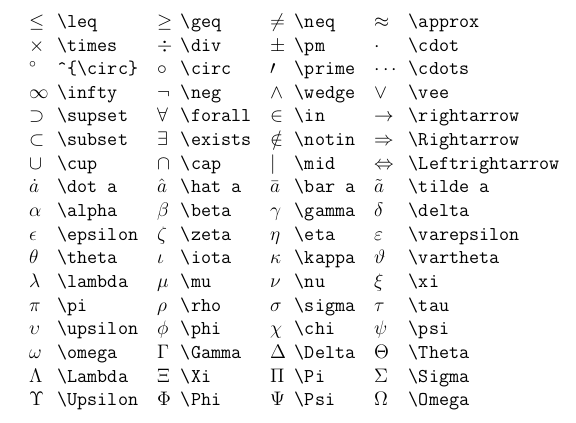
FIGURE 10: Other useful LaTeX symbols and expressions in R Markdown
1.14.3 Code Chunks
R Markdown provides a large number of options to vary the behavior of code chunks. In some contexts it is useful to display the output but not the R code leading to the output. In some contexts it is useful to display the R prompt, while in others it is not. Maybe we want to change the size of figures created by graphics commands. And so on. A large number of code chunk options are described in http://www.rstudio.com/wp-content/uploads/2015/03/rmarkdown-reference.pdf.
Code chunk options are specified in the curly braces near the beginning of a code chunk. Below are a few of the more commonly used options are described. The use of these options is illustrated in Figure 11.
echo=FALSE specifies that the R code itself should not be printed, but any output of the R code should be printed in the resulting document.
include=FALSE specifies that neither the R code nor the output should be printed. However, the objects created by the code chunk will be available for use in later code chunks.
eval=FALSE specifies that the R code should not be evaluated. The code will be printed unless, for example, echo=FALSE is also given as an option.
error=FALSE and warning=FALSE specify that, respectively, error messages and warning messages generated by the R code should not be printed.
The comment option allows a specified character string to be prepended to each line of results. By default this is set to comment = '##' which explains the two hash marks preceding the results in Figure 7. Setting comment = NA presents output without any character string prepended. That is done in most code chunks in this book.
prompt=TRUE specifies that the R prompt > will be prepended to each line of R code shown in the document. prompt = FALSE specifies that command prompts should not be included.
fig.height and fig.width specify the height and width of figures generated by R code. These are specified in inches. For example, fig.height=4 specifies a four inch high figure.
Figures 11 gives examples of the use of code chunk options.
FIGURE 11: Output of Example R Markdown
1.14.4 Output formats other than HTML
It is possible to use R Markdown to produce documents in formats other than HTML, including Word and PDF documents. Next to the Knit HTML button is a down arrow. Click on this and choose Knit Word to produce a Microsoft word output document. Although there is also a Knit PDF button, PDF output requires additional software called TeX in addition to RStudio.20
1.14.5 LaTeX, knitr, and bookdown
While basic R Markdown provides substantial flexibility and power, it lacks features such as cross-referencing, fine control over fonts, etc. If this is desired, a variant of R Markdown called knitr, which has very similar syntax to R Markdown for code chunks, can be used in conjunction with the typesetting system LaTeX to produce documents. Another option is to use the R package bookdown which uses R Markdown syntax and some additional features to allow for writing more technical documents. In fact this book was initially created using knitr and LaTeX, but the simplicity of markdown syntax and the additional intricacies provided by the bookdown package convinced us to write the book in R Markdown using bookdown. For simpler tasks, basic R Markdown is plenty sufficient, and very easy to use.
1.15 Exercises
Exercise 1 Learning objectives: practice setting up a working directory and read in data; explore the workspace within RStudio and associated commands; produce basic descriptive statistics and graphics.
Exercise 2 Learning objectives: practice working within RStudio; create a R Markdown document and resulting html document in RStudio; calculate descriptive statistics and produce graphics.
_# Data Structures {#structures}
A data structure is a format for organizing and storing data. The structure is designed so that data can be accessed and worked with in specific ways. Statistical software and programming languages have methods (or functions) designed to operate on different kinds of data structures.
This chapterâs focus is on data structures. To help initial understanding, the data in this chapter will be relatively modest in size and complexity. The ideas and methods, however, generalize to larger and more complex data sets.
The base data structures in R are vectors, matrices, arrays, data frames, and lists. The first three, vectors, matrices, and arrays, require all elements to be of the same type or homogeneous, e.g., all numeric or all character. Data frames and lists allow elements to be of different types or heterogeneous, e.g., some elements of a data frame may be numeric while other elements may be character. These base structures can also be organized by their dimensionality, i.e., 1-dimensional, 2-dimensional, or N-dimensional, as shown in Table 3.
TABLE 3: Dimension and type content of base data structures
in R
Dimension
Homogeneous
Heterogeneous
1
Atomic vector
List
2
Matrix
Data frame
N
Array
R has no scalar types, i.e., 0-dimensional. Individual numbers or strings are actually vectors of length one.
An efficient way to understand what comprises a given object is to use the str() function. str() is short for structure and prints a compact, human-readable description of any R data structure. For example, in the code below, we prove to ourselves that what we might think of as a scalar value is actually a vector of length one.
>a <-1>str(a)
num 1
>is.vector(a)
[1] TRUE
>length(a)
[1] 1
Here we assigned a the scalar value one. The str(a) prints num 1, which says a is numeric of length one. Then just to be sure we used the function is.vector() to test if a is in fact a vector. Then, just for fun, we asked the length of a, which again returns one. There are a set of similar logical tests for the other base data structures, e.g., is.matrix(), is.array(), is.data.frame(), and is.list(). These will all come in handy as we encounter different R objects.
1.16 Vectors
Think of a vector21 as a structure to represent one variable in a data set. For example a vector might hold the weights, in pounds, of 7 people in a data set. Or another vector might hold the genders of those 7 people. The c() function in R is useful for creating (small) vectors and for modifying existing vectors. Think of c as standing for âcombineâ.
Notice that elements of a vector are separated by commas when using the c() function to create a vector. Also notice that character values are placed inside quotation marks.
The c() function also can be used to add to an existing vector. For example, if an eighth male person was included in the data set, and his weight was 194 pounds, the existing vectors could be modified as follows.
Clearly it is important to distinguish between different types of vectors. For example, it makes sense to ask R to calculate the mean of the weights stored in weight, but does not make sense to ask R to compute the mean of the genders stored in gender. Vectors in R may have one of six different âtypesâ: character, double, integer, logical, complex, and raw. Only the first four of these will be of interest below, and the distinction between double and integer will not be of great import. To illustrate logical vectors, imagine that each of the eight people in the data set was asked whether he or she was taking blood pressure medication, and the responses were coded as TRUE if the person answered yes, and FALSE if the person answered no.
It may be surprising to see that the variable weight is of double type, even though its values all are integers. By default R creates a double type vector when numeric values are given via the c() function.
When it makes sense, it is possible to convert vectors to a different type. Consider the following examples.
The integer version of weight doesnât look any different, but it is stored differently, which can be important both for computational efficiency and for interfacing with other languages such as C++. As noted above, however, we will not worry about the distinction between integer and double types. Converting weight to character goes as expected: The character representations of the numbers replace the numbers themselves. Converting the logical vector bp to double is pretty straightforward too: FALSE is converted to zero, and TRUE is converted to one. Now think about converting the character vector gender to a numeric double vector. Itâs not at all clear how to represent âfemaleâ and âmaleâ as numbers. In fact in this case what R does is to create a character vector, but with each element set to NA, which is the representation of missing data.22 Finally consider the code sum(bp). Now bp is a logical vector, but when R sees that we are asking to sum this logical vector, it automatically converts it to a numerical vector and then adds the zeros and ones representing FALSE and TRUE.
R also has functions to test whether a vector is of a particular type.
>is.double(weight)
[1] TRUE
>is.character(weight)
[1] FALSE
>is.integer(weight.int)
[1] TRUE
>is.logical(bp)
[1] TRUE
1.16.1.1 Coercion
Consider the following examples.
>xx <-c(1, 2, 3, TRUE)>xx
[1] 1 2 3 1
>yy <-c(1, 2, 3, "dog")>yy
[1] "1" "2" "3" "dog"
>zz <-c(TRUE, FALSE, "cat")>zz
[1] "TRUE" "FALSE" "cat"
>weight+bp
[1] 123 158 205 199 224 140 106 194
Vectors in R can only contain elements of one type. If more than one type is included in a c() function, R silently coerces the vector to be of one type. The examples illustrate the hierarchyâif any element is a character, then the whole vector is character. If some elements are numeric (either integer or double) and other elements are logical, the whole vector is numeric. Note what happened when R was asked to add the numeric vector weight to the logical vector bp. The logical vector was silently coerced to be numeric, so that FALSE became zero and TRUE became one, and then the two numeric vectors were added.
1.16.2 Accessing Specific Elements of Vectors
To access and possibly change specific elements of vectors, refer to the position of the element in square brackets. For example, weight[4] refers to the fourth element of the vector weight. Note that R starts the numbering of elements at 1, i.e., the first element of a vector x is x[1].
>weight
[1] 123 157 205 199 223 140 105 194
>weight[5]
[1] 223
>weight[1:3]
[1] 123 157 205
>length(weight)
[1] 8
>weight[length(weight)]
[1] 194
>weight[]
[1] 123 157 205 199 223 140 105 194
>weight[3] <-202>weight
[1] 123 157 202 199 223 140 105 194
Note that including nothing in the square brackets results in the whole vector being returned.
Negative numbers in the square brackets tell R to omit the corresponding value. And a zero as a subscript returns nothing (more precisely, it returns a length zero vector of the appropriate type).
>weight[-3]
[1] 123 157 199 223 140 105 194
>weight[-length(weight)]
[1] 123 157 202 199 223 140 105
>lessWeight <-weight[-c(1,3,5)]>lessWeight
[1] 157 199 140 105 194
>weight[0]
numeric(0)
>weight[c(0,2,1)]
[1] 157 123
>weight[c(-1, 2)]
Error in weight[c(-1, 2)]: only 0's may be mixed with negative subscripts
Note that mixing zero and other nonzero subscripts is allowed, but mixing negative and positive subscripts is not allowed.
What about the (usual) case where we donât know the positions of the elements we want? For example possibly we want the weights of all females in the data. Later we will learn how to subset using logical indices, which is a very powerful way to access desired elements of a vector.
1.16.3 Practice Problem
A bad programming technique that often plagues beginners is a technique called hardcoding. Consider the following simple vector containing data on the number of tree species found at different sites.
>tree.sp <-c(10, 13, 15, 8, 2, 9, 10, 20, 9, 11)
Suppose we are interested in the second to last value of the data set. One way to do this is to first determine the length of vector using the length() function, then taking that value and subtracting 1.
>num.sites <-length(tree.sp)>num.sites
[1] 10
>tree.sp[10-1]
[1] 9
This is an example of hardcoding. But what if we attempt to use the same code on a second vector of tree species data that has a different number of sites?
Thatâs clearly not what we want. Fix this code so we can always extract the second to last value in the vector, regardless of the length of the vector.
1.17 Factors
Categorical variables such as gender can be represented as character vectors. In many cases this simple representation is sufficient. Consider, however, two other categorical variables, one representing age via categories youth, young adult, middle age, senior, and another representing income via categories lower, middle, and upper. Suppose that for the small health data set, all the people are either middle aged or senior citizens. If we just represented the variable via a character vector, there would be no way to know that there are two other categories, representing youth and young adults, which happen not to be present in the data set. And for the income variable, the character vector representation does not explicitly indicate that there is an ordering of the levels.
Factors in R provide a more sophisticated way to represent categorical variables. Factors explicitly contain all possible levels, and allow ordering of levels.
In the factor version of age the levels are explicitly listed, so it is clear that the two included levels are not all the possible levels. And in the factor version of income, the ordering is explicit.
In many cases the character vector representation of a categorical variable is sufficient and easier to work with. In this book, factors will not be used extensively. It is important to note that R often by default creates a factor when character data are read in, and sometimes it is necessary to use the argument stringsAsFactors = FALSE to explicitly tell R not to do this. This is shown later in the chapter when data frames are introduced.
1.18 Names of Objects in R
There are few hard and fast restrictions on the names of objects (such as vectors) in R. In addition to these restrictions, there are certain good practices, and many things to avoid as well.
From the help page for make.names in R, the name of an R object is âsyntactically validâ if the name âconsists of letters, numbers and the dot or underline characters and starts with a letter or the dot not followed by a numberâ and is not one of the âreserved wordsâ in R such as if, TRUE, function, etc. For example, c45t.le_dog and .ty56 are both syntactically valid (although not very good names) while 4cats and log#@gopher are not.
A few important comments about naming objects follow:
It is important to be aware that names of objects in R are case-sensitive, so weight and Weight do not refer to the same object.
>weight
[1] 123 157 202 199 223 140 105 194
>Weight
Error in eval(expr, envir, enclos): object 'Weight' not found
It is unwise to create an object with the same name as a built in R object such as the function c or the function mean. In earlier versions of R this could be somewhat disastrous, but even in current versions, it is definitely not a good idea!
As much as possible, choose names that are informative. When creating a variable you may initially remember that x contains heights and y contains genders, but after a few hours, a few days, or a few weeks, you probably will forget this. Better options are Height and Gender.
As much as possible, be consistent in how you name objects. In particular, decide how to separate multi-word names. Some options include:
Using case to separate: BloodPressure or bloodPressure for example
Using underscores to separate: blood_pressure for example
Using a period to separate: blood.pressure for example
1.19 Missing Data, Infinity, etc.
Most real-world data sets have variables where some observations are missing. In a longitudinal study participants may drop out. In a survey, participants may decide not to respond to certain questions. Statistical software should be able to represent missing data and to analyze data sets in which some data are missing.
In R, the value NA is used for a missing data value. Since missing values may occur in numeric, character, and other types of data, and since R requires that a vector contain only elements of one type, there are different types of NA values. Usually R determines the appropriate type of NA value automatically. It is worth noting that the default type for NA is logical, and that NA is NOT the same as the character string "NA".
How should missing data be treated in computations, such as finding the mean or standard deviation of a variable? One possibility is to return NA. Another is to remove the missing value(s) and then perform the computation.
>mean(c(1,2,3,NA,5))
[1] NA
>mean(c(1,2,3,NA,5), na.rm=TRUE)
[1] 2.75
As this example shows, the default behavior for the mean() function is to return NA. If removal of the missing values and then computing the mean is desired, the argument na.rm is set to TRUE. Different R functions have different default behaviors, and there are other possible actions. Consulting the help for a function provides the details.
1.19.1 Practice Problem
Collecting data is often a messy process resulting in multiple errors in the data. Consider the following small vector representing the weights of 10 adults in pounds.
As far as I know, itâs not possible for an adult to weigh 12 pounds, so that is most likely an error. Change this value to NA, and then find the standard deviation of the weights after removing the NA value.
1.19.2 Infinity and NaN
What happens if R code requests division by zero, or results in a number that is too large to be represented? Here are some examples.
>x <-0:4>x
[1] 0 1 2 3 4
>1/x
[1] Inf 1.0000 0.5000 0.3333 0.2500
>x/x
[1] NaN 1 1 1 1
>y <-c(10, 1000, 10000)>2^y
[1] 1.024e+03 1.072e+301 Inf
Inf and -Inf represent infinity and negative infinity (and numbers which are too large in magnitude to be represented as floating point numbers). NaN represents the result of a calculation where the result is undefined, such as dividing zero by zero. All of these are common to a variety of programming languages, including R.
1.20 Data Frames
Commonly, data is rectangular in form, with variables as columns and cases as rows. Continuing with the (contrived) data on weight, gender, and blood pressure medication, each of those variables would be a column of the data set, and each personâs measurements would be a row. In R, such data are represented as a data frame.
The data.frame function can be used to create a data frame (although itâs more common to read a data frame into R from an external file, something that will be introduced later). The names of the variables in the data frame are given as arguments, as are the vectors of data that make up the variableâs values. The argument stringsAsFactors=FALSE asks R not to convert character vectors into factors, which R does by default, to the dismay of many users. Names of the columns (variables) can be extracted and set via either names or colnames. In the example, the variable names are changed to Wt, Gdr, bp and then changed back to the original Weight, Gender, bp.meds in this way. Rows can be named also. In this case since specific row names were not provided, the default row names of "1", "2" etc. are used.
In the next example a built-in dataset called mtcars is made available by the data function, and then the first and last six rows are displayed using head and tail.
Note that mtcars[,1] returns ALL elements in the first column. This agrees with the behavior for vectors, where leaving a subscript out of the square brackets tells R to return all values. In this case we are telling R to return all rows, and the first column.
For a data frame there is another way to access specific columns, using the $ notation.
Error in eval(expr, envir, enclos): object 'mpg' not found
>cyl
Error in eval(expr, envir, enclos): object 'cyl' not found
>weight
[1] 123 157 202 199 223 140 105 194
Notice that typing the variable name, such as mpg, without the name of the data frame (and a dollar sign) as a prefix, does not work. This is sensible. There may be several data frames that have variables named mpg, and just typing mpg doesnât provide enough information to know which is desired. But if there is a vector named mpg that is created outside a data frame, it will be retrieved when mpg is typed, which is why typing weight does work, since weight was created outside of a data frame, although ultimately it was incorporated into the healthData data frame.
1.21 Lists
The third main data structure we will work with is a list. Technically a list is a vector, but one in which elements can be of different types. For example a list may have one element that is a vector, one element that is a data frame, and another element that is a function. Consider designing a function that fits a simple linear regression model to two quantitative variables. We might want that function to compute and return several things such as
The fitted slope and intercept (a numeric vector with two components)
The residuals (a numeric vector with \(n\) components, where \(n\) is the number of data points)
Fitted values for the data (a numeric vector with \(n\) components, where \(n\) is the number of data points)
The names of the dependent and independent variables (a character vector with two components)
In fact R has a function, lm, which does this (and much more).
Mazda RX4 Mazda RX4 Wag
-1.59375 -1.59375
Datsun 710 Hornet 4 Drive
-0.95363 -1.19375
Hornet Sportabout Valiant
0.54109 -4.83489
Duster 360 Merc 240D
0.91707 -1.46871
Merc 230 Merc 280
-0.81717 -2.50678
Merc 280C Merc 450SE
-3.90678 -1.41777
Merc 450SL Merc 450SLC
-0.51777 -2.61777
Cadillac Fleetwood Lincoln Continental
-5.71206 -5.02978
Chrysler Imperial Fiat 128
0.29364 6.80421
Honda Civic Toyota Corolla
3.84901 8.23598
Toyota Corona Dodge Challenger
-1.98072 -4.36462
AMC Javelin Camaro Z28
-4.66462 -0.08293
Pontiac Firebird Fiat X1-9
1.04109 1.70421
Porsche 914-2 Lotus Europa
2.10991 8.01093
Ford Pantera L Ferrari Dino
3.71340 1.54109
Maserati Bora Volvo 142E
7.75761 -1.26198
The lm function returns a list (which in the code above has been assigned to the object mpgHpLinMod).23 One component of the list is the length 2 vector of coefficients, while another component is the length 32 vector of residuals. The code also illustrates that named components of a list can be accessed using the dollar sign notation, as with data frames.
Here, for illustration, I assembled a list to hold some of the R data structures we have been working with in this chapter. The first list element, named first, holds the weight vector we created in Section ??, the second list element, named second, holds the healthData data frame, and the third list element, named pickle, holds a list with elements named a and b that hold a vector of values 1 through 10 and another copy of the healthData data frame, respectively. As this example shows, a list can contain another list.
1.21.1 Accessing Specific Elements of Lists
We already have seen the dollar sign notation works for lists. In addition, the square bracket subsetting notation can be used. There is an added, somewhat subtle wrinkleâusing either single or double square brackets.
>temporaryList$first
[1] 123 157 202 199 223 140 105 194
>mode(temporaryList$first)
[1] "numeric"
>temporaryList[[1]]
[1] 123 157 202 199 223 140 105 194
>mode(temporaryList[[1]])
[1] "numeric"
>temporaryList[1]
$first
[1] 123 157 202 199 223 140 105 194
>mode(temporaryList[1])
[1] "list"
Note the dollar sign and double bracket notation return a numeric vector, while the single bracket notation returns a list. Notice also the difference in results below.
The single bracket form returns the first and second elements of the list, while the double bracket form returns the second element in the first element of the list. Generally, do not put a vector of indices or names in a double bracket, you will likely get unexpected results. See, for example, the results below.24
>temporaryList[[c(1,2,3)]]
Error in temporaryList[[c(1, 2, 3)]]: recursive indexing failed at level 2
So, in summary, there are two main differences between using the single bracket [] and double bracket [[]]. First, the single bracket will return a list that holds the object(s) held at the given indices or names placed in the bracket, whereas the double brackets will return the actual object held at the index or name placed in the innermost bracket. Put differently, a single bracket can be used to access a range of list elements and will return a list, and a double bracket can only access a single element in the list and will return the object held at the index.
1.22 Subsetting with Logical Vectors
Consider the healthData data frame. How can we access only those weights which are more than 200? How can we access the genders of those whose weights are more than 200? How can we compute the mean weight of males and the mean weight of females? Or consider the mtcars data frame. How can we obtain the miles per gallon for all six cylinder cars? Both of these data sets are small enough that it would not be too onerous to extract the values by hand. But for larger or more complex data sets, this would be very difficult or impossible to do in a reasonable amount of time, and would likely result in errors.
R has a powerful method for solving these sorts of problems using a variant of the subsetting methods that we already have learned. When given a logical vector in square brackets, R will return the values corresponding to TRUE.
To begin, focus on the weight and gender vectors created in Section ??.
The R code weight > 200 returns a TRUE for each value of weight which is more than 200, and a FALSE for each value of weight which is less than or equal to 200. Similarly gender == "female" returns TRUE or FALSE depending on whether an element of gender is equal to female.
>weight
[1] 123 157 202 199 223 140 105 194
>weight >200
[1] FALSE FALSE TRUE FALSE TRUE FALSE FALSE FALSE
>gender[weight >200]
[1] "male" "male"
>weight[weight >200]
[1] 202 223
>gender == "female"
[1] TRUE TRUE FALSE TRUE FALSE FALSE TRUE FALSE
>weight[gender == "female"]
[1] 123 157 199 105
Consider the lines of R code one by one.
weight instructs R to display the values in the vector weight.
weight > 200 instructs R to check whether each value in weight is greater than 200, and to return TRUE if so, and FALSE otherwise.
The next line, gender[weight > 200], does two things. First, inside the square brackets, it does the same thing as the second line, namely, returning TRUE or FALSE depending on whether a value of weight is or is not greater than 200. Second, each element of gender is matched with the corresponding TRUE or FALSE value, and is returned if and only if the corresponding value is TRUE. For example the first value of gender is gender[1]. Since the first TRUE or FALSE value is FALSE, the first value of gender is not returned. Only the third and fifth values of gender, both of which happen to be male, are returned. Briefly, this line returns the genders of those people whose weight is over 200 pounds.
The fourth line of code, weight[weight > 200], again begins by returning TRUE or FALSE depending on whether elements of weight are larger than 200. Then those elements of weight corresponding to TRUE values, are returned. So this line returns the weights of those people whose weights are more than 200 pounds.
The fifth line returns TRUE or FALSE depending on whether elements of gender are equal to female or not.
The sixth line returns the weights of those whose gender is female.
There are six comparison operators in R, >, <, >=, <=, ==, !=. Note that to test for equality a âdouble equals signâ is used, while != tests for inequality.
1.22.1 Modifying or Creating Objects via Subsetting
The results of subsetting can be assigned to a new (or existing) R object, and subsetting on the left side of an assignment is a common way to modify an existing R object.
>weight
[1] 123 157 202 199 223 140 105 194
>lightweight <-weight[weight <200]>lightweight
[1] 123 157 199 140 105 194
>x <-1:10>x
[1] 1 2 3 4 5 6 7 8 9 10
>x[x <5] <-0>x
[1] 0 0 0 0 5 6 7 8 9 10
>y <--3:9>y
[1] -3 -2 -1 0 1 2 3 4 5 6 7 8 9
>y[y <0] <-NA>y
[1] NA NA NA 0 1 2 3 4 5 6 7 8 9
>rm(x)>rm(y)
1.22.2 Logical Subsetting and Data Frames
First consider the small and simple healthData data frame.
>healthData
Weight Gender bp.meds
1 123 female FALSE
2 157 female TRUE
3 202 male FALSE
4 199 female FALSE
5 223 male TRUE
6 140 male FALSE
7 105 female TRUE
8 194 male FALSE
Gender bp.meds
3 male FALSE
4 female FALSE
5 male TRUE
8 male FALSE
The first example is really just subsetting a vector, since the $ notation creates vectors. The second two examples return subsets of the whole data frame. Note that the logical vector subsets the rows of the data frame, choosing those rows where the gender is female or the weight is more than 190. Note also that the specification for the columns (after the comma) is left blank in the first case, telling R to return all the columns. In the second case the second and third columns are requested explicitly.
Next consider the much larger and more complex WorldBank data frame. Recall, the str function displays the âstructureâ of an R object. Here is a look at the structure of several R objects.
'data.frame': 11880 obs. of 15 variables:
$ iso2c : chr "AD" "AD" "AD" "AD" ...
$ country : chr "Andorra" "Andorra" "Andorra" "Andorra" ...
$ year : int 1978 1979 1977 2007 1976 2011 2012 2008 1980 1972 ...
$ fertility.rate : num NA NA NA 1.18 NA NA NA 1.25 NA NA ...
$ life.expectancy : num NA NA NA NA NA NA NA NA NA NA ...
$ population : num 33746 34819 32769 81292 31781 ...
$ GDP.per.capita.Current.USD : num 9128 11820 7751 39923 7152 ...
$ X15.to.25.yr.female.literacy: num NA NA NA NA NA NA NA NA NA NA ...
$ iso3c : chr "AND" "AND" "AND" "AND" ...
$ region : chr "Europe & Central Asia (all income levels)" "Europe & Central Asia (all income levels)" "Europe & Central Asia (all income levels)" "Europe & Central Asia (all income levels)" ...
$ capital : chr "Andorra la Vella" "Andorra la Vella" "Andorra la Vella" "Andorra la Vella" ...
$ longitude : num 1.52 1.52 1.52 1.52 1.52 ...
$ latitude : num 42.5 42.5 42.5 42.5 42.5 ...
$ income : chr "High income: nonOECD" "High income: nonOECD" "High income: nonOECD" "High income: nonOECD" ...
$ lending : chr "Not classified" "Not classified" "Not classified" "Not classified" ...
First we see that mtcars is a data frame which has 32 observations (rows) on each of 11 variables (columns). The names of the variables are given, along with their type (in this case, all numeric), and the first few values of each variable is given.
Second we see that temporaryList is a list with three components. Each of the components is described separately, with the first few values again given.
Third we examine the structure of WorldBank. It is a data frame with 11880 observations on each of 15 variables. Some of these are character variables, some are numeric, and one (year) is integer. Looking at the first few values we see that some variables have missing values.
Consider creating a data frame which only has the observations from one year, say 1971. Thatâs relatively easy. Just choose rows for which year is equal to 1971.
The dim function returns the dimensions of a data frame, i.e., the number of rows and the number of columns. From dim we see that there are dim(WorldBank1971)[1] cases from 1971.
Next, how can we create a data frame which only contains data from 1971, and also only contains cases for which there are no missing values in the fertility rate variable? R has a built in function is.na which returns TRUE if the observation is missing and returns FALSE otherwise. And !is.na returns the negation, i.e., it returns FALSE if the observation is missing and TRUE if the observation is not missing.
>WorldBank1971$fertility.rate[1:25]
[1] NA 6.512 7.671 3.517 4.933 3.118 7.264 3.104
[9] NA 2.200 2.961 2.788 4.479 2.260 2.775 2.949
[17] 6.942 2.210 6.657 2.100 6.293 7.329 6.786 NA
[25] 5.771
From dim we see that there are dim(WorldBank1971)[1] cases from 1971 with non-missing fertility rate data.
Return attention now to the original WorldBank data frame with data not only from 1971. How can we extract only those cases (rows) which have NO missing data? Consider the following simple example:
First notice that is.na will test each element of a data frame for missingness. Also recall that if R is asked to sum a logical vector, it will first convert the logical vector to numeric and then compute the sum, which effectively counts the number of elements in the logical vector which are TRUE. The rowSums function computes the sum of each row. So rowSums(is.na(temporaryDataFrame)) returns a vector with as many elements as there are rows in the data frame. If an element is zero, the corresponding row has no missing values. If an element is greater than zero, the value is the number of variables which are missing in that row. This gives a simple method to return all the cases which have no missing data.
Out of the dim(WorldBankComplete)[1] rows in the original data frame, only dim(WorldBankComplete)[1] have no missing observations!
1.23 Patterned Data
Sometimes it is useful to generate all the integers from 1 through 20, to generate a sequence of 100 points equally spaced between 0 and 1, etc. The R functions seq() and rep() as well as the âcolon operatorâ : help to generate such sequences.
The colon operator generates a sequence of values with increments of \(1\) or \(-1\).
>1:10
[1] 1 2 3 4 5 6 7 8 9 10
>-5:3
[1] -5 -4 -3 -2 -1 0 1 2 3
>10:4
[1] 10 9 8 7 6 5 4
>pi:7
[1] 3.142 4.142 5.142 6.142
The seq() function generates either a sequence of pre-specified length or a sequence with pre-specified increments.
The rep() function replicates the values in a given vector.
>rep(c(1,2,4), length =9)
[1] 1 2 4 1 2 4 1 2 4
>rep(c(1,2,4), times =3)
[1] 1 2 4 1 2 4 1 2 4
>rep(c("a", "b", "c"), times =c(3, 2, 7))
[1] "a" "a" "a" "b" "b" "c" "c" "c" "c" "c" "c" "c"
1.23.1 Practice Problem
Often when using R you will want to simulate data from a specific probability distribution (i.e. normal/Gaussian, bionmial, Poisson). R has a vast suite of functions for working with statistical distributions. To generate values from a statistical distribution, the function has a name beginning with an ârâ followed by some abbreviation of the probability distribution. For example to simulate from the three distributions mentioned above, we can use the functions rnorm(), rbinom, and rpois.
Use the rnorm() function to generate 10,000 values from the standard normal distribution (the normal distribution with mean = 0 and variance = 1). Consult the help page for rnorm() if you need to. Save this vector of variables to a vector named sim.vals. Then use the hist() function to draw a histogram of the simulated data. Does the data look like it follows a normal distribution?
1.24 Exercises
Exercise 3 Learning objectives: create, subset, and manipulate vector contents and attributes; summarize vector data using R table() and other functions; generate basic graphics using vector data.
Exercise 4 Learning objectives: use functions to describe data frame characteristics; summarize and generate basic graphics for variables held in data frames; apply the subset function with logical operators; illustrate NA, NaN, Inf, and other special values occur; recognize the implications of using floating point arithmetic with logical operators.
Exercise 5 Learning objectives: practice with lists, data frames, and associated functions; summarize variables held in lists and data frames; work with Râs linear regression lm() function output; review logical subsetting of vectors for partitioning and assigning of new values; generate and visualize data from mathematical functions.
_# Graphics in R Part 1: ggplot2
R can be used to create a vast array of graphical representations of data. Creating âstandardâ graphical displays is straightforward, but a main strength of R is the ability to customize graphical displays to create either non-standard graphics or to modify more standard graphical displays to create publication-ready versions.
There are several packages available in R for creating graphics. The two leading packages are the graphics package, which comes with your base installation of R, and the ggplot2 package, which must be installed and made available by the user.25 For beginners ggplot2 has somewhat simpler syntax, and also produces excellent graphics without much tinkering. However, the graphics package seemingly provides more control over different graphical parameters, and can sometimes be more intuitive than ggplot2.
Knowing how to use both the graphics and ggplot2 packages is worthwhile, so we denote one chapter to ggplot2 and a second chapter to graphics. We use ggplot2 throughout the text, and thus require you to read this chapter on ggplot2 while Chapter ?? on the graphics package is optional. Youâll notice that the chapters are essentially the same, producing the same graphs (with a few exceptions) to let you decide which graphing style you prefer. We simply want to present you with both sets of tools so that in the future when you have graphs to produce you can use whichever package floats your boat! For now weâll start off with ggplot2 and get to graphics in Chapter ??.
The gg in ggplot2 stands for Grammar of Graphics. The package provides a unified and logical way to describe graphical displays such as scatter plots, histograms, bar charts, and many other types of graphics. The grammar describes the mapping from data to the graphical displayâs aesthetic attributes (color, shape, size) of geometric objects (points, lines, bars). As will become obvious, once this grammar is mastered for a particular type of plot, such as a scatter plot, it is easy to transfer this knowledge to other types of graphics.
Once you work through this chapter, the best place to learn more about ggplot2 is from the packageâs official book Wickham and Sievert (2016) by Hadley Wickham. It is available on-line in digital format from MSUâs library. The book goes into much more depth on the theory underlying the grammar and syntax, and has many examples on solving practical graphical problems. In addition to the free on-line version available through MSU, the bookâs source code is available at https://github.com/hadley/ggplot2-book.
Another useful resource is the ggplot2 extensions guide http://www.ggplot2-exts.org. This site lists packages that extend ggplot2. Itâs a good place to start if youâre trying to do something that seems hard with ggplot2. Weâll explore a few of these extension packages toward the end of this chapter.
1.25 Scatter Plots
Scatter plots are a workhorse of data visualization and provide a good entry point to the ggplot2 system. Begin by considering a simple and classic data set sometimes called Fisherâs Iris Data. These data are available in R.
The data contain measurements on petal and sepal length and width for dim(iris)[1] iris plants. The plants are from one of three species, and the species information is also included in the data frame. The data are commonly used to test classification methods, where the goal would be to correctly determine the species based on the four length and width measurements. To get a preliminary sense of how this might work, we can draw some scatter plots of length versus width. Recall that ggplot2 is not available by default, so we first have to download and install the package.
>install.packages("ggplot2")
Once this is done the package is installed on the local hard drive, and we can use the library function to make the package available during the current R session.
Next a basic scatter plot is drawn. Weâll keep the focus on sepal length and width, but of course similar plots could be drawn using petal length and width. The prompt is not displayed below, since the continuation prompt + can cause confusion.
library(ggplot2)ggplot(data = iris, aes(x = Sepal.Length, y = Sepal.Width)) +geom_point()
In this case the first argument to the ggplot function is the name of the data frame. Second, the aes (short for aesthetics) function specifies the mapping to the x and y axes. By itself the ggplot function as written doesnât tell R what sort of graphical display is desired. That is done by adding a geom (short for geometry) specification, in this case geom_point.
Looking at the scatter plot and thinking about the focus of finding a method to classify the species, two thoughts come to mind. First, the plot might be improved by increasing the size of the points. And second, using different colors for the points corresponding to the three species would help.
Notice that a legend showing what the colors represent is automatically generated and included in the graphic. Next, the size of the points seems a bit big now, and it might be helpful to use different shapes for the different species.
Here we see that the legend automatically changes to include species specific color and shape. The size of the points seems more appropriate.
1.25.1 Structure of a Typical ggplot
The examples above start with the function ggplot(), which takes as arguments the data frame containing the data to be plotted as well as a mapping from the data to the axes, enclosed by the aes() function. Next a geom function, in the above case geom_point(), is added. It might just specify the geometry, but also might specify aspects such as size, color, or shape.
Typically many graphics are created and discarded in the search for an informative graphic, and often the initial specification of data and basic aesthetics from ggplot() stays the same in all the attempts. In such a case it can be helpful to assign that portion of the graphic to an R object, both to minimize the amount of typing and to keep certain aspects of all the graphics constant. Hereâs how that could be done for the graphics above.
To add a fitted least squares line to a scatter plot, use stat_smooth, which adds a smoother (possibly a least squares line, possibly a smooth curve fit to the data, etc.). The argument method = lm specifies a line fitted by least squares, and the argument se = FALSE suppresses the default display of a confidence band around the line or curve which was fit to the data.
In this case we specified the same color aesthetic for the points and the lines. If we know we want this color aesthetic (colors corresponding to species) for all aspects of the graphic, we can specify it in the main ggplot() function:
ggplot(data = iris, aes(x = Sepal.Length, y = Sepal.Width, color = Species)) +geom_point(size=3) +stat_smooth(method = lm, se=FALSE)
Another common use of line segments in a graphic is to connect the points in order, accomplished via the geom_line() function. Although it is not clear why this helps in understanding the iris data, the technique is illustrated next, first doing this for all the points in the graphic, and second doing this separately for the three species.
The default settings of ggplot2 often produce excellent graphics, but once a graphic is chosen for dissemination, the user will likely want to customize things like the title, axes, etc. In this section some tools for customization are presented. Most will be illustrated in the context of a data set on crime rates in the 50 states in the United States. These data were made available by Nathan Yau at http://flowingdata.com/2010/11/23/how-to-make-bubble-charts/. The data include crime rates per 100,000 people for various crimes such as murder and robbery, and also include each stateâs population. The crime rates are from the year 2005, while the population numbers are from the year 2008, but the difference in population between the years is not great, and the exact population is not particularly important for what weâll do below.
First, read in the data, examine its structure, and produce a simple scatter plot of motor vehicle theft versus burglary.
>ggplot(data <-crime, aes(x = burglary, y = motor_vehicle_theft)) ++geom_point()
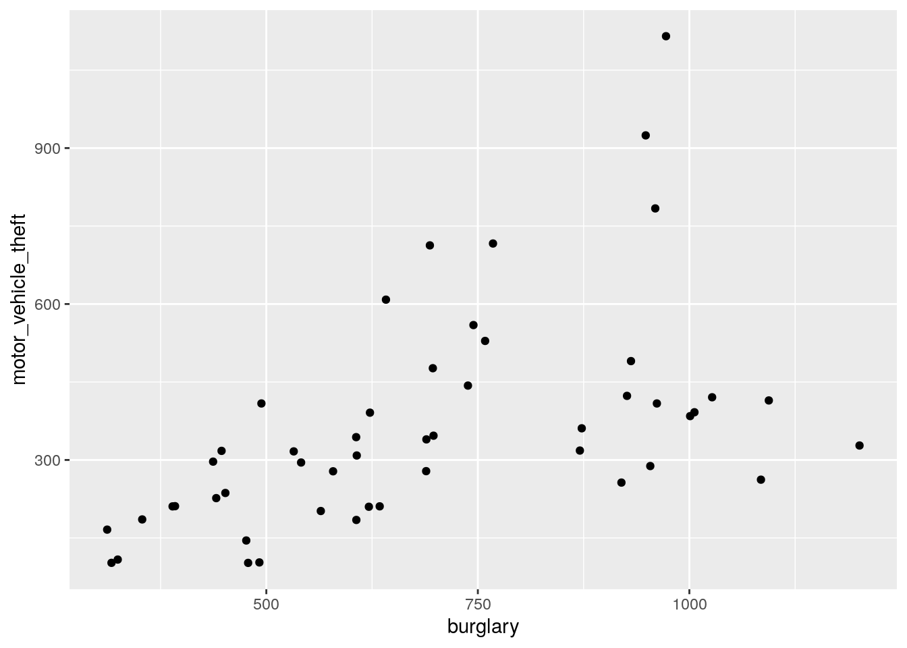
1.26.1 Labels
By default axis and legend labels are the names of the relevant columns in the data frame. While convenient, we often want to customize these labels. Here we use labs() to change the x and y axis labels and other descriptive text.26
ggplot(data = crime, aes(x = burglary, y = motor_vehicle_theft)) +geom_point() +labs(x ="Burglaries per 100,000 population", y ="Motor vehicle theft per 100,000 population",title ="Burglaries vs motor vehicle theft for US states",subtitle ="2005 crime rates and 2008 population",caption ="Data from Nathan Yau http://flowingdata.com" )
1.27 Customizing Axes
ggplot also provides default axis extents (i.e., limits) and other axis features. These, and other axis features such as tick marks, labels, and transformations, can be changed using the scale functions. Here the range of the x and y axis is altered to start at zero and go to the maximum of the x and y variables.27 Here too, axis labels are specified within the scale function, which is an alterative to using the labs() function.
ggplot(data = crime, aes(x = burglary, y = motor_vehicle_theft)) +geom_point() +scale_x_continuous(name="Burglaries per 100,000 population", limits=c(0,max(crime$burglary))) +scale_y_continuous(name="Motor vehicle theft per 100,000 population", limits =c(0, max(crime$motor_vehicle_theft)))
1.27.1 Text, Point Size, and Color
Next we make point size proportional to population, change the color, and add a state label. Note, in the ggplot() call I scaled population by 100,000 to help with the interpretability of the legend. Accordingly, I also changed the âpopulationâ label on the legend to âPopulation\n(100,000)â using the labs() function28. We use the geom_label() function to add the label, which provides an outline around the label text and allows you to control the box characteristics, e.g., I make the boxes slightly transparent using the alpha argument.29
The labels are helpful but just too cluttered. There are some additional arguments that can go into geom_label() that allow for label offset; however, this wonât help us much here. Instead, we can try the ggrepel package by Kamil Slowikowski. This useful package will automatically adjust labels so that they donât overlap. First we need to download and add the package using either RStudioâs install package buttons or via install.packages("ggrepel"). Next to make all of ggrepelâs functions available we can call library(ggrepel) function or, if we know which function we want, we can load only that particular function using the :: operators. I use :: below to make clear which function is coming from ggrepel and which is coming from ggplot2.
This looks a bit better. Weâll resist making additional improvements to the figure for now.
1.27.2 Practice Problem
You run an experiment to see if the number of alcoholic beverages a person has on average every day is related to weight. You collect 15 data points. Enter these data in R by creating vectors, and then reproduce the following plot.
# of Drinks
Weight
1.0
150
3.0
350
2.0
200
0.5
140
2.0
200
1.0
160
0.0
175
0.0
140
0.0
167
1.0
200
4.0
300
5.0
321
2.0
250
0.5
187
1.0
190
1.28 Other Types of Graphics
Scatter and line plots, which have just been presented, are common but certainly not the only graphical displays in common use. Histograms, boxplots, and bar graphs, as well as more âmathematicalâ displays such as the graph of a function, are commonly used to represent data. Examples of each are presented below.
1.28.1 Histograms
Simon Newcomb conducted several experiments to estimate the speed of light by measuring the time it took for light to travel from his laboratory to a mirror at the base of the Washington Monument, and then back to his lab. This is a distance of \(7.44373\) km, and by dividing this distance by the measured time, an estimate for the speed of light is obtained.
The times are of course quite small, and to avoid working with very small numbers, the data are recoded to be the deviation from \(24800\) nanoseconds. For example an observation coded as \(28\) represents a time of \(24828\) nanoseconds, while an observation coded as \(-44\) represents a time of \(24756\) nanoseconds.
`stat_bin()` using `bins = 30`. Pick better value
with `binwidth`.
The software has an algorithm to calculate bin widths for the histogram. Sometimes the algorithm makes choices that arenât suitable (hence the R message above), and these can be changed by specifying a binwidth. In addition, the appearance of the bars also can be changed.
ggplot(Newcomb, aes(x = Time)) +geom_histogram(binwidth =5, color ="black", fill ="blue" )
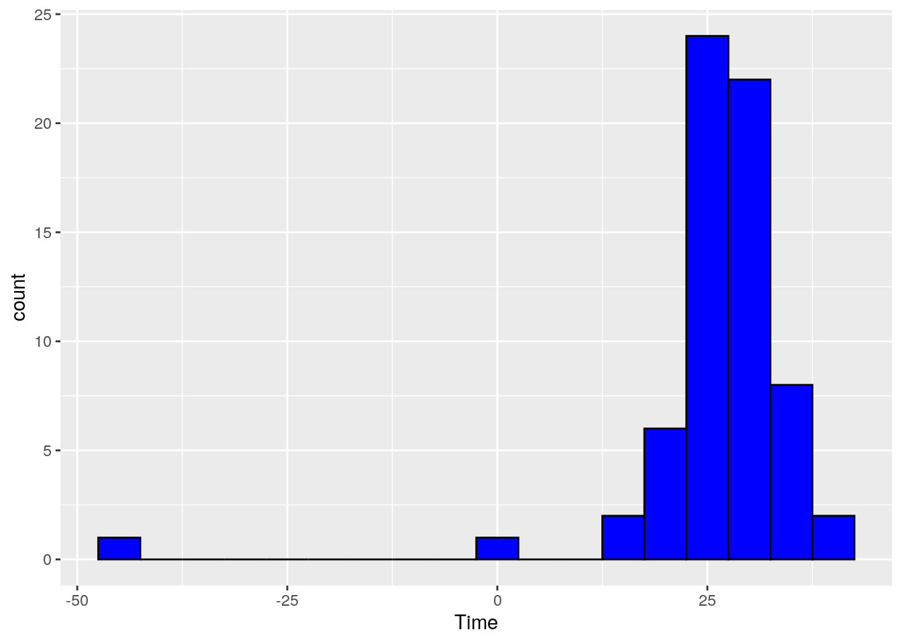
1.28.2 Boxplots
Next we consider some data from the gap minder data set to construct some box plots. These data are available in the gapminder package, which might need to be installed via install.packages("gapminder").
library(gapminder)ggplot(data =subset(gapminder, year ==2002), aes(x = continent, y = gdpPercap)) +geom_boxplot(color ="black", fill ="lightblue")
Hereâs the same set of boxplots, but with different colors, different axis labels, and the boxes plotted horizontally rather than vertically.
ggplot(data =subset(gapminder, year ==2002), aes(x = continent, y = gdpPercap)) +geom_boxplot(color ="red", fill ="lightblue") +scale_x_discrete(name ="Continent") +scale_y_continuous(name ="Per Capita GDP") +coord_flip()
1.28.3 Bar Graphs
As part of a study, elementary school students were asked which was more important to them: good grades, popularity, or athletic ability. Here is a brief look at the data.
Gender Grade Age Race Type School Goals Grades
1 boy 5 11 White Rural Elm Sports 1
2 boy 5 10 White Rural Elm Popular 2
3 girl 5 11 White Rural Elm Popular 4
4 girl 5 11 White Rural Elm Popular 2
5 girl 5 10 White Rural Elm Popular 4
6 girl 5 11 White Rural Elm Popular 4
Sports Looks Money
1 2 4 3
2 1 4 3
3 3 1 2
4 3 4 1
5 2 1 3
6 2 1 3
First, a simple bar graph of the most important goal chosen is drawn, followed by a stacked bar graph which also includes the studentâs gender. We then add a side by side bar graph that includes the studentâs gender.
ggplot(StudentGoals, aes(x = Goals)) +geom_bar()
ggplot(StudentGoals, aes(x = Goals, fill = Gender)) +geom_bar()
ggplot(StudentGoals, aes(x = Goals, fill = Gender)) +geom_bar(position ="dodge")
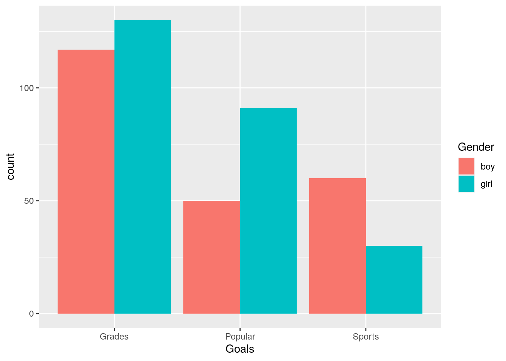
In this example R counted the number of students who had each goal and used these counts as the height of the bars. Sometimes the data contain the bar heights as a variable. For example, we create a bar graph of Indiaâs per capita GDP with separate bars for each year in the data30.
ggplot(subset(gapminder, country == "India"), aes(x = year, y = gdpPercap)) +geom_bar(stat ="identity", color ="black", fill ="steelblue2") +ggtitle("India's per-capita GDP")
1.28.4 Graphs of Functions
One way to create a plot of a mathematical function \(f\) is to create a data frame with \(x\) values in one column and \(f(x)\) values in another column, and then draw a line plot.
x <-seq(-pi, pi, len =1000)sin.data <-data.frame(x = x, y =sin(x))ggplot(data = sin.data, aes(x = x, y = y)) +geom_line() +scale_y_continuous(name ="sin(x)")
This method works well, but with a better understanding of functions in R we will be able to plot mathematical functions in a simpler and more natural way.
1.29 Themes
The theme defines non-data aspects of the plotâs characteristics such as background color, axes, and grid lines. Default themes include: theme_bw(), theme_classic(), theme_dark(), theme_gray(), theme_light(), theme_linedraw(), theme_minimal(), and theme_void(). Changing the theme is as easy as adding it to your initial ggplot() call. Here I replace the default implicit theme_bw() theme with the classic theme.
The ggthemes add-on package [https://github.com/jrnold/ggthemes] by Jeffrey Arnold provides a large selection of themes beyond the eight themes that come with ggplot2.
1.30 Saving Graphics
We often want to export our graphics to use in an external document or share with colleagues. There are several ways to save graphics in a variety of file formats. The ggsave() function will allow you to save your most recent ggplot() to a variety of vector (e.g., âepsâ, âpsâ, âpdfâ, âsvgâ) or raster (e.g., âjpegâ, âtiffâ, âpngâ, âbmpâ, âwmfâ) formats.31 The subsequent call to ggsave() saves the sin.data plot to a pdf file called âsin-plot.pdfâ.
ggsave(filename ="sin-plot.pdf", device="pdf")
The ggplot() function takes additional arguments to control scale, measurement units, and raster plot resolution, i.e., dots per inch (dpi).
1.31 More Resources
In summary, ggplot2 provides a fairly intuitive32 framework for developing an enormous variety of graphics. In addition to the resources mentioned at the beginning of this chapter, there are numerous online ggplot2 resources and galleries to get ideas for creating beautiful graphics to convey the stories in your data. See, for example,
While the built-in ggplot2 package documentation (accessible via the help tab in RStudio) is helpful, the official online documentation at http://docs.ggplot2.org is particularly useful because it provides example plots and easy navigation between related topics. The large number number of functions and syntax in ggplot2 can be daunting. RStudio provides some handy cheatsheets to help you along www.rstudio.com/resources/cheatsheets or direct link www.rstudio.com/wp-content/uploads/2016/11/ggplot2-cheatsheet-2.1.pdf.
ggplot2 also has an active mailing list at http://groups.google.com/group/ggplot2. The list is an excellent resource for users at all stages of experience. Another useful resource is stackoverflow, http://stackoverflow.com. There is an active ggplot2 community on stackoverflow, and many common questions have already been asked and answered. When posting questions on any programming mailing list, it is best to provide a minimal reproducible example of your issue. The reprexhttps://github.com/jennybc/reprex package by Jenny Bryan provides a convenient way to do this, and also includes advice on creating a good example. The more information you provide about your issue, the more likely the community is to help you.
1.31.1 Practice Problem
Check out the ggplot2 cheatsheet found at https://www.rstudio.com/wp-content/uploads/2015/03/ggplot2-cheatsheet.pdf. Create a plot using the iris data set using something we didnât mention in this chapter, and describe what is new about the plot. The plot can be anything you like, just make sure you use something not mentioned in the chapter!
1.32 Exercises
Exercise 6a Learning objectives: practice using ggplot2 functions; summarize variables using graphics; introduce ggplot2 facets.
_# Working with Data {#data2}
Bringing data into R, exporting data from R in a form that is readable by other software, cleaning and reshaping data, and other data manipulation tasks are an important and often overlooked component of data science. The book Spector (2008), while a few years old, is still an excellent reference for data-related issues. And the manual, available online at http://catalog.lib.msu.edu/record=b7254984~S39a , is an up-to-date (and free) reference on importing a wide variety of datasets into R and on exporting data in various forms.
1.33 Reading Data into R
Data come in a dizzying variety of forms. It might be in a proprietary format such as an .xlsx Excel file, a .sav SPSS file, or a .mtw Minitab file. It might be structured using a relational model comprising many tables that need to be connected via key-value pairs. It might be a data-interchange format such as JSON (JavaScript Object Notation), or a markup language such as XML (Extensible Markup Language), perhaps with specialized standards for describing ecological information, see EML (Ecological Metadata Language). Both XML and EML are common data metadata formats (i.e., data that provides information about other data). Fortunately many datasets are (or can be) saved as plain text files, and most software can both read and write such files, so our initial focus will be on reading plain text files into R and saving data from R in plain text format. RStudio provides a handy data import cheat sheet for many of the read functions detailed in this section.
The foreign R package provides functions to directly read data saved in some of the proprietary formats into R, which is sometimes unavoidable, but if possible it is good to save data from another package as plain text and then read this plain text file into R. In Chapter ?? methods for reading web-based data sets into R will be discussed.
The function read.table() and its offshoots such as read.csv() are used to read in rectangular data from a text file. For example, the file BrainAndBody.csv contains data33 on the brain weight, body weight, and name of some terrestrial animals. Here are the first few lines of that file:
body,brain,name
1.35,8.1,Mountain beaver
465,423,Cow
36.33,119.5,Grey wolf
27.66,115,Goat
1.04,5.5,Guinea pig
As is evident, the first line of the file contains the names of the three variables, separated (delimited) by commas. Each subsequent line contains the body weight, brain weight, and name of a specific terrestrial animal.
body brain name
1 1.35 8.1 Mountain beaver
2 465.00 423.0 Cow
3 36.33 119.5 Grey wolf
4 27.66 115.0 Goat
5 1.04 5.5 Guinea pig
6 11700.00 50.0 Dipliodocus
The arguments used in this call to read.table() include:
file = u.bb, which tells R the location of the file. In this case the string https://www.finley-lab.com/files/data/BrainAndBody.csv giving the location is rather long, so it was first assigned to the object u.bb.
header = TRUE, which tells R the first line of the file gives the names of the variables.
sep = ",", which tells R that a comma separates the fields in the file.
stringsAsFactors = FALSE which tells R not to convert character vectors to factors.
The function read.csv() is the same as read.table() except the default separator is a comma, whereas the default separator for read.table() is whitespace.
The file BrainAndBody.tsv contains the same data, except a tab is used in place of a comma to separate fields. The only change needed to read in the data in this file is in the sep argument (and of course the file argument, since the data are stored in a different file):
body brain name
1 1.35 8.1 Mountain beaver
2 465.00 423.0 Cow
3 36.33 119.5 Grey wolf
4 27.66 115.0 Goat
5 1.04 5.5 Guinea pig
6 11700.00 50.0 Dipliodocus
File extensions, e.g., .csv or .tsv, are naming conventions only and are there to remind us how the columns are separated. In other words, they have no influence on Râs file read functions.
A third file, BrainAndBody.txt, contains the same data, but also contains a few lines of explanatory text above the names of the variables. It also uses whitespace rather than a comma or a tab as a separator. Here are the first several lines of the file.
This file contains data
on brain and body
weights of several terrestrial animals
"body" "brain" "name"
1.35 8.1 "Mountain beaver"
465 423 "Cow"
36.33 119.5 "Grey wolf"
27.66 115 "Goat"
1.04 5.5 "Guinea pig"
11700 50 "Dipliodocus"
2547 4603 "Asian elephant"
Notice that in this file the values of name are put inside of quotation marks. This is necessary since instead R would (reasonably) assume the first line contained the values of four variables, the values being 1.35, 8.1, Mountain, and beaver while in reality there are only three values desired, with Mountain beaver being the third.
To read in this file we need to tell R to skip the first five lines and to use whitespace as the separator. The skip argument handles the first, and the sep argument the second. First letâs see what happens if we donât use the skip argument.
Error in scan(file = file, what = what, sep = sep, quote = quote, dec = dec, : line 1 did not have 5 elements
R assumed the first line of the file contained the variable names, since header = TRUE was specified, and counted four including This, file, contains, and data. So in the first line of actual data, R expected four columns containing data plus possibly a fifth column containing row names for the data set, and complained that âline 1 did not have 5 elements.â The error message is somewhat mysterious, since it starts with âError in scan.â This happens because read.table() actually uses a more basic R function called scan() to do the work.
Missing data are represented in many ways. Sometimes a missing data point is just that, i.e., the place where it should be in the file is blank. Other times specific numbers such as \(-9999\) or specific symbols are used. The read.table() function has an argument na.string that allows the user to specify how missing data is indicated in the source file.
The site http://www.wunderground.com/history/ makes weather data available for locations around the world from dates going back to 1945. The file WeatherKLAN2014.csv contains weather data for Lansing, Michigan for the year 2014. Here are the first few lines of that file:
Look at the last line, and notice that instead of an Event such as Snow or Fog-Snow there is nothing after the comma. This observation is missing, but rather than using an explicit code such as NA, the site just leaves that entry blank. To read these data into R we will supply the argument na.string = "" which tells R the file indicates missing data by leaving the appropriate entry blank.
Some common data tasks include variable summaries such as means or standard deviations, transforming an existing variable, and creating new variables. As with many tasks, there are several ways to accomplish each of these.
1.35.1 Column (and Row) Summaries
The file WeatherKLAN2014Full.csv contains a more complete set of weather data variables than WeatherKLAN2014.csv, from the same source, http://www.wunderground.com/history.
How can we compute the mean for each variable? One possibility is to do this a variable at a time:
>mean(WeatherKLAN2014Full$Mean.TemperatureF)
[1] 45.78
>mean(WeatherKLAN2014Full$Min.TemperatureF)
[1] 36.25
>mean(WeatherKLAN2014Full$Max.TemperatureF)
[1] 54.84
>##Et Cetera
This is pretty inefficient. Fortunately there is a colMeans() function which computes the mean of each column (or a specified number of columns) in a data frame. Some columns in the current data frame are not numeric, and obviously we donât want to ask R to compute means for these columns. We use str() to investigate.
It isnât surprising that EST and Events are not numeric, but is surprising that PrecipitationIn, which measures precipitation in inches, also is not numeric, but is character. Letâs investigate further.
Now itâs more clear. The original data file included T in the precipitation column to represent a âtraceâ of precipitation, which is precipitation greater than \(0\) but less than \(0.01\) inches. One possibility would be to set all these values to "0", and then to convert the column to numeric. For now we will just leave the PrecipitationIn column out of the columns for which we request the mean.
R also has functions rowMeans(), colSums(), and rowSums(). But what if we want to compute the median or standard deviation of columns of data, or some other summary statistic? For this the apply() function can be used. This function applies a user-chosen function to either the rows or columns (or both) of a data frame. The arguments are:
X: the data frame of interest
MARGIN: specifying either rows (MARGIN = 1) or columns (MARGIN = 2)
FUN: the function to be applied.
>apply(X = WeatherKLAN2014Full[,c(2:19, 21, 23)], MARGIN =2, FUN = sd)
Notice the output value of NA for the column Max.Gust.SpeedMPH. Why does this happen? Figure out a way to make the apply() function return a numeric value for this column.
The apply() family of functions is extremely important in R, so it gets two Practice Problems :) Use the apply() function to compute the median values for all numeric columns in the iris data set.
Consider calculating the mean of the maximum temperature values for those days where the cloud cover is less than 4 and when the maximum humidity is over 85. We can do this using subsetting.
While this works, it requires a lot of typing, since each time we refer to a variable in the data set we need to preface its name by WeatherKLAN2014Full$. The with() function tells R that we are working with a particular data frame, and we donât need to keep typing the name of the data frame.
Variables are often added to, removed from, changed in, or rearranged in a data frame. The subsetting features of R make this reasonably easy. We will investigate this in the context of the gapminder data frame. If the gapminder library is not yet installed, use install.packages("gapminder") to install it locally.
The data frame contains per capita GDP and population, and it might be interesting to create a variable that gives the total GDP by multiplying these two variables. (If we were interested in an accurate value for the total GDP we would probably be better off getting this information directly, since it is likely that the per capita GDP values in the data frame are rounded substantially.)
Analogous to the with() function, there is a function within() which can simplify the syntax. Whereas with() does not change the data frame, within() can. Note, below I first remove the altered gapminder dataframe using rm() then bring a clean copy back in by reloading the gapminder package.
A nice feature of within() is its ability to add more than one variable at a time to a data frame. In this case the two or more formulas creating new variables must be enclosed in braces.
The same result could be obtained via gapminder <- gapminder[, 1:6]. The first method uses the fact that a data frame is also a list, and uses list subsetting methods. It is slightly preferable, since even if only one variable is retained, the object will still be a data frame, while the other method can return a vector in this case. Note this difference in the resulting x variable below (again this behavior can be frustrating at times if it is not anticipated).
>a <-data.frame(x =1:3, y =c("dog", "cat", "pig"), +z =seq(from =1, to =2, length =3))>a
x y z
1 1 dog 1.0
2 2 cat 1.5
3 3 pig 2.0
>a <-a[1]>a
x
1 1
2 2
3 3
>a <-data.frame(x =1:3, y =c("dog", "cat", "pig"), +z =seq(from =1, to =2, length =3))>a
x y z
1 1 dog 1.0
2 2 cat 1.5
3 3 pig 2.0
>a <-a[,1]>a
[1] 1 2 3
One can also use a negative sign in front of the variable number(s). For example, a[-(2:3)] would drop the first two columns of a. Some care is needed when removing variables using the negative sign.
An alternative approach is to set the variables youâd like to remove to NULL. For example, a[c("y","z")] <- NULL and a[,2:3] <- NULL produce the same result as above.
1.36.3 Practice Problem
What happens if you write a[-2:3] instead of a[-(2:3)]? Why are the parentheses important here?
1.36.4 Transforming Variables
Consider the gapminder data again. Possibly we donât want to add a new variable that gives life expectancy in months, but rather want to modify the existing variable to measure life expectancy in months. Here are two ways to accomplish this.
A data set can be represented in several different formats. Consider a (fictitious) data set on incomes of three people during three different years. Here is one representation of the data:
>yearlyIncomeWide
name income1990 income2000 income2010
1 John Smith 29784 39210 41213
2 Jane Doe 56789 89321 109321
3 Albert Jones 2341 34567 56781
Here is another representation of the same data:
>yearlyIncomeLong
name year income
1 John Smith income1990 29784
2 Jane Doe income1990 56789
3 Albert Jones income1990 2341
4 John Smith income2000 39210
5 Jane Doe income2000 89321
6 Albert Jones income2000 34567
7 John Smith income2010 41213
8 Jane Doe income2010 109321
9 Albert Jones income2010 56781
For hopefully obvious reasons, the first representation is called a wide representation of the data, and the second is called a long representation. Each has its merits. The first representation is probably easier for people to read, while the second is often the form needed for analysis by statistical software such as R. There are of course other representations. For example the rows and columns could be interchanged to create a different wide representation, or the long representation, which currently groups data by year, could group by name instead.
Whatever the relative merits of wide and long representations of data, transforming data from wide to long or long to wide is often required. As with many tasks, there are several ways to accomplish this in R. We will focus on a library called tidyr written by Hadley Wickham that performs the transformations and more.
1.38.1tidyr
The R library tidyr has functions for converting data between formats. To illustrate its use, we examine a simple data set that explores the relationship between religion and income in the United States. The data come from a Pew survey, and are used in the tidyr documentation to illustrate transforming data from wide to long format.
As given, the columns include religion and income level, and there are counts for each of the combinations of religion and income level. For example, there are 27 people who are Agnostic and whose income is less than 10 thousand dollars, and there are 617 people who are Catholic and whose income is between 10 and 20 thousand dollars.
The gather() function can transform data from wide to long format.
To use gather() we specified the data frame (data = religion), the name we want to give to the column created from the income levels (key = IncomeLevel), the name we want to give to the column containing the frequency values (value = Frequency) and the columns to gather (2:11).
Columns to be gathered can be specified by name also, and we can also specify which columns should be omitted using a negative sign in front of the name(s). So the following creates an equivalent data frame:
Here we specify the data frame (religionLong), the column (IncomeLevel) to be spread, and the column of values (Frequency) to be spread among the newly created columns. As can be seen, this particular call to spread() yields the original data frame.
tidyr provides two other useful functions to separate and unite variables based on some deliminator. Consider again the yearlyIncomeWide table. Say we want to split the name variable into first and last name. This can be done using the separate() function.
first last year income
1 John Smith income1990 29784
2 Jane Doe income1990 56789
3 Albert Jones income1990 2341
4 John Smith income2000 39210
5 Jane Doe income2000 89321
6 Albert Jones income2000 34567
7 John Smith income2010 41213
8 Jane Doe income2010 109321
9 Albert Jones income2010 56781
Now say, youâre not happy with that and you want to combine the name column again, but this time separate the first and last name with a underscore. This is done using the unite() function.
The separate() function from the tidyr library is especially useful when working with real data as multiple pieces of information can be combined into one column in a data set. For example, consider the following data frame
âRecordingInfoâ that contains the site where data was collected, as well as the year, month, and date the data was recorded. The data are coded as follows: site-year-month-day. Write a line of code that will extract the desired data from the data.birds data frame into separate columns named site, year, month and day.
1.39 Manipulating Data with dplyr
Much of the effort (a figure of 80% is sometimes suggested) in data analysis is spent cleaning the data and getting it ready for analysis. Having effective tools for this task can save substantial time and effort. The R package dplyr written by Hadley Wickham is designed, in Hadleyâs words, to be âa grammar of data manipulation, providing a consistent set of verbs that help you solve the most common data manipulation challenges.â Casting data analysis tasks in terms of âgrammarâ should be familiar from our work with the ggplot2 package, which was also authored by Hadley. Functions provided by dplyr do in fact capture key data analysis actions (i.e., verbs). These functions include
mutate() adds new variables that are functions of existing variables
select() picks variables based on their names
filter() picks cases based on their values
summarize() reduces multiple values down to a single summary
arrange() changes the ordering of the rows.
These all combine naturally with a group_by() function that allows you to perform any operation grouped by values of one or more variables. All the tasks done using dplyr can be accomplished using tools already covered in this text; however, dplyrâs functions provide a potentially more efficient and convenient framework to accomplish these tasks. RStudio provides a convenient data wrangling cheat sheet that covers many aspects of the tidyr and dplyr packages.
The dplyr package provides a couple functions that offer improvements on data frames. First, tibble creates a tibble from a series of vectors34. A tibble has two advantages over a data frame. First, when printing, it only prints the first ten rows and the columns that fit on the page, as well as some additional information about the tableâs dimension, data type of variables, and non-printed columns. Second, recall that subsetting a data frame can sometimes return a vector rather than a data frame (if only one row or column is the result of the subset), a tibble does not have this behavior. Second, we can use the as_tibble() function to convert an existing data frame or list into a tibble. Here is an example using the religionWide data frame.35
# A tibble: 18 x 1
religion
<chr>
1 Agnostic
2 Atheist
3 Buddhist
4 Catholic
5 DoNotKnowOrRefused
6 EvangelicalProt
7 Hindu
8 HistoricallyBlackProt
9 JehovahsWitness
10 Jewish
11 MainlineProt
12 Mormon
13 Muslim
14 Orthodox
15 OtherChristian
16 OtherFaiths
17 OtherWorldReligions
18 Unaffiliated
As seen above, note that once the data frame is reduced to one dimension by subsetting to one column, it is no longer a data frame and has been simplified to a vector. This might not seem like a big deal; however, it can be very frustrating and potentially break your code when you expect an object to behave like a data frame and it doesnât because itâs now a vector. Alternatively, once we convert religionWide to a tibble via the as_tibble() function the object remains a data frame even when subsetting down to one dimension (there is no automatic simplification). Converting data frames using as_tibble() is not required for using dplyr but is convenient. Also, it is important to note that tibble is simply a wrapper around a data frame that provides some additional behaviors. The newly formed tibble object will still behave like a data frame (because it technically still is a data frame) but will have some added niceties (some of which are illustrated below).
1.39.2 Filtering Data by Row
Recall the gapminder data. These data are available in tab-separated format in gapminder.tsv, and can be read in using read.delim() (or the related read functions described previously). The read.delim() function defaults to header = TRUE so this doesnât need to be specified explicitly. In this section we will be working with the gapminder data often, so we will use a short name for the data frame to save typing.
# A tibble: 6 x 6
country year pop continent lifeExp gdpPercap
<fct> <int> <dbl> <fct> <dbl> <dbl>
1 Afghanistan 1952 8.43e6 Asia 28.8 779.
2 Afghanistan 1957 9.24e6 Asia 30.3 821.
3 Afghanistan 1962 1.03e7 Asia 32.0 853.
4 Afghanistan 1967 1.15e7 Asia 34.0 836.
5 Afghanistan 1972 1.31e7 Asia 36.1 740.
6 Afghanistan 1977 1.49e7 Asia 38.4 786.
Filtering helps us to examine subsets of the data such as data from a particular country, from several specified countries, from certain years, from countries with certain populations, etc. Some examples:
>filter(gm, country == "Brazil")
# A tibble: 12 x 6
country year pop continent lifeExp gdpPercap
<fct> <int> <dbl> <fct> <dbl> <dbl>
1 Brazil 1952 56602560 Americas 50.9 2109.
2 Brazil 1957 65551171 Americas 53.3 2487.
3 Brazil 1962 76039390 Americas 55.7 3337.
4 Brazil 1967 88049823 Americas 57.6 3430.
5 Brazil 1972 100840058 Americas 59.5 4986.
6 Brazil 1977 114313951 Americas 61.5 6660.
7 Brazil 1982 128962939 Americas 63.3 7031.
8 Brazil 1987 142938076 Americas 65.2 7807.
9 Brazil 1992 155975974 Americas 67.1 6950.
10 Brazil 1997 168546719 Americas 69.4 7958.
11 Brazil 2002 179914212 Americas 71.0 8131.
12 Brazil 2007 190010647 Americas 72.4 9066.
>filter(gm, country %in%c("Brazil", "Mexico"))
# A tibble: 24 x 6
country year pop continent lifeExp gdpPercap
<fct> <int> <dbl> <fct> <dbl> <dbl>
1 Brazil 1952 56602560 Americas 50.9 2109.
2 Brazil 1957 65551171 Americas 53.3 2487.
3 Brazil 1962 76039390 Americas 55.7 3337.
4 Brazil 1967 88049823 Americas 57.6 3430.
5 Brazil 1972 100840058 Americas 59.5 4986.
6 Brazil 1977 114313951 Americas 61.5 6660.
7 Brazil 1982 128962939 Americas 63.3 7031.
8 Brazil 1987 142938076 Americas 65.2 7807.
9 Brazil 1992 155975974 Americas 67.1 6950.
10 Brazil 1997 168546719 Americas 69.4 7958.
# ⦠with 14 more rows
>filter(gm, country %in%c("Brazil", "Mexico") &year %in%c(1952, 1972))
# A tibble: 4 x 6
country year pop continent lifeExp gdpPercap
<fct> <int> <dbl> <fct> <dbl> <dbl>
1 Brazil 1952 56602560 Americas 50.9 2109.
2 Brazil 1972 100840058 Americas 59.5 4986.
3 Mexico 1952 30144317 Americas 50.8 3478.
4 Mexico 1972 55984294 Americas 62.4 6809.
>filter(gm, pop >300000000)
# A tibble: 25 x 6
country year pop continent lifeExp gdpPercap
<fct> <int> <dbl> <fct> <dbl> <dbl>
1 China 1952 5.56e8 Asia 44 400.
2 China 1957 6.37e8 Asia 50.5 576.
3 China 1962 6.66e8 Asia 44.5 488.
4 China 1967 7.55e8 Asia 58.4 613.
5 China 1972 8.62e8 Asia 63.1 677.
6 China 1977 9.43e8 Asia 64.0 741.
7 China 1982 1.00e9 Asia 65.5 962.
8 China 1987 1.08e9 Asia 67.3 1379.
9 China 1992 1.16e9 Asia 68.7 1656.
10 China 1997 1.23e9 Asia 70.4 2289.
# ⦠with 15 more rows
>filter(gm, pop >300000000&year ==2007)
# A tibble: 3 x 6
country year pop continent lifeExp gdpPercap
<fct> <int> <dbl> <fct> <dbl> <dbl>
1 China 2007 1.32e9 Asia 73.0 4959.
2 India 2007 1.11e9 Asia 64.7 2452.
3 United St⦠2007 3.01e8 Americas 78.2 42952.
Notice the full results are not printed. For example, when we asked for the data for Brazil and Mexico, only the first ten rows were printed. This is an effect of using the as_tibble() function. Of course if we wanted to analyze the results (as we will below) the full set of data would be available.
1.39.3 Selecting variables by column
Continuing with the gapminder data, another common task is to restrict attention to some subset of variables in the data set. The select() function does this.
>select(gm, country, year, lifeExp)
# A tibble: 1,704 x 3
country year lifeExp
<fct> <int> <dbl>
1 Afghanistan 1952 28.8
2 Afghanistan 1957 30.3
3 Afghanistan 1962 32.0
4 Afghanistan 1967 34.0
5 Afghanistan 1972 36.1
6 Afghanistan 1977 38.4
7 Afghanistan 1982 39.9
8 Afghanistan 1987 40.8
9 Afghanistan 1992 41.7
10 Afghanistan 1997 41.8
# ⦠with 1,694 more rows
>select(gm, 2:4)
# A tibble: 1,704 x 3
year pop continent
<int> <dbl> <fct>
1 1952 8425333 Asia
2 1957 9240934 Asia
3 1962 10267083 Asia
4 1967 11537966 Asia
5 1972 13079460 Asia
6 1977 14880372 Asia
7 1982 12881816 Asia
8 1987 13867957 Asia
9 1992 16317921 Asia
10 1997 22227415 Asia
# ⦠with 1,694 more rows
# A tibble: 1,704 x 2
country continent
<fct> <fct>
1 Afghanistan Asia
2 Afghanistan Asia
3 Afghanistan Asia
4 Afghanistan Asia
5 Afghanistan Asia
6 Afghanistan Asia
7 Afghanistan Asia
8 Afghanistan Asia
9 Afghanistan Asia
10 Afghanistan Asia
# ⦠with 1,694 more rows
Notice a few things. Variables can be selected by name or column number. As usual, a negative sign tells R to leave something out. And there are special functions such as starts_with that provide ways to match part of a variableâs name.
1.39.4 Practice Problem
Use the contains() function to select only the columns that contain a c
1.39.5 Pipes
Consider selecting the country, year, and population for countries in Asia or Europe. One possibility is to nest a filter() function inside a select() function.
# A tibble: 756 x 3
country year pop
<fct> <int> <dbl>
1 Afghanistan 1952 8425333
2 Afghanistan 1957 9240934
3 Afghanistan 1962 10267083
4 Afghanistan 1967 11537966
5 Afghanistan 1972 13079460
6 Afghanistan 1977 14880372
7 Afghanistan 1982 12881816
8 Afghanistan 1987 13867957
9 Afghanistan 1992 16317921
10 Afghanistan 1997 22227415
# ⦠with 746 more rows
Even a two-step process like this becomes hard to follow in this nested form, and often we will want to perform more than two operations. There is a nice feature in dplyr that allows us to âfeedâ results of one function into the first argument of a subsequent function. Another way of saying this is that we are âpipingâ the results into another function. The %>% operator does the piping. Here we again restrict attention to country, year, and population for countries in Asia or Europe36.
# A tibble: 756 x 3
country year pop
<fct> <int> <dbl>
1 Afghanistan 1952 8425333
2 Afghanistan 1957 9240934
3 Afghanistan 1962 10267083
4 Afghanistan 1967 11537966
5 Afghanistan 1972 13079460
6 Afghanistan 1977 14880372
7 Afghanistan 1982 12881816
8 Afghanistan 1987 13867957
9 Afghanistan 1992 16317921
10 Afghanistan 1997 22227415
# ⦠with 746 more rows
It can help to think of %>% as representing the word âthenâ. The above can be read as, âStart with the data frame gmthen filter it to select data from the continents Asia and Europe then select the variables country, year, and population from these dataâ.
The pipe operator %>% is not restricted to functions in dplyr. In fact the pipe operator itself was introduced in another package called magrittr, but is included in dplyr as a convenience.
1.39.6 Arranging Data by Row
By default the gapminder data are arranged by country and then by year.
>head(gm, 15)
# A tibble: 15 x 6
country year pop continent lifeExp gdpPercap
<fct> <int> <dbl> <fct> <dbl> <dbl>
1 Afghanist⦠1952 8.43e6 Asia 28.8 779.
2 Afghanist⦠1957 9.24e6 Asia 30.3 821.
3 Afghanist⦠1962 1.03e7 Asia 32.0 853.
4 Afghanist⦠1967 1.15e7 Asia 34.0 836.
5 Afghanist⦠1972 1.31e7 Asia 36.1 740.
6 Afghanist⦠1977 1.49e7 Asia 38.4 786.
7 Afghanist⦠1982 1.29e7 Asia 39.9 978.
8 Afghanist⦠1987 1.39e7 Asia 40.8 852.
9 Afghanist⦠1992 1.63e7 Asia 41.7 649.
10 Afghanist⦠1997 2.22e7 Asia 41.8 635.
11 Afghanist⦠2002 2.53e7 Asia 42.1 727.
12 Afghanist⦠2007 3.19e7 Asia 43.8 975.
13 Albania 1952 1.28e6 Europe 55.2 1601.
14 Albania 1957 1.48e6 Europe 59.3 1942.
15 Albania 1962 1.73e6 Europe 64.8 2313.
Possibly arranging the data by year and then country would be desired. The arrange() function makes this easy. We will again use pipes.
>gm %>%arrange(year, country)
# A tibble: 1,704 x 6
country year pop continent lifeExp gdpPercap
<fct> <int> <dbl> <fct> <dbl> <dbl>
1 Afghanist⦠1952 8.43e6 Asia 28.8 779.
2 Albania 1952 1.28e6 Europe 55.2 1601.
3 Algeria 1952 9.28e6 Africa 43.1 2449.
4 Angola 1952 4.23e6 Africa 30.0 3521.
5 Argentina 1952 1.79e7 Americas 62.5 5911.
6 Australia 1952 8.69e6 Oceania 69.1 10040.
7 Austria 1952 6.93e6 Europe 66.8 6137.
8 Bahrain 1952 1.20e5 Asia 50.9 9867.
9 Bangladesh 1952 4.69e7 Asia 37.5 684.
10 Belgium 1952 8.73e6 Europe 68 8343.
# ⦠with 1,694 more rows
How about the data for Rwanda, arranged in order of life expectancy.
# A tibble: 1 x 2
meanpop medpop
<dbl> <dbl>
1 29601212. 7023596.
Often we want summaries for specific components of the data. For example, we might want the median life expectancy for each continent separately. One option is subsetting:
>median(gm$lifeExp[gm$continent == "Africa"])
[1] 47.79
>median(gm$lifeExp[gm$continent == "Asia"])
[1] 61.79
>median(gm$lifeExp[gm$continent == "Europe"])
[1] 72.24
>median(gm$lifeExp[gm$continent == "Americas"])
[1] 67.05
>median(gm$lifeExp[gm$continent == "Oceania"])
[1] 73.66
The group_by() function makes this easier, and makes the output more useful.
# A tibble: 5 x 2
continent medLifeExp
<fct> <dbl>
1 Africa 47.8
2 Asia 61.8
3 Americas 67.0
4 Europe 72.2
5 Oceania 73.7
As another example, we calculate the number of observations we have per continent (using the n() helper function), and then, among continents, how many distinct countries are represented (using n_distinct()).
This is interesting, but the results donât include the countries that achieved the minimum and maximum life expectancies. Here is one way to achieve that. We will start with the minimum life expectancy. Note the rank of the minimum value will be 1.
# A tibble: 12 x 4
# Groups: year [12]
country continent year lifeExp
<fct> <fct> <int> <dbl>
1 Afghanistan Asia 1952 28.8
2 Afghanistan Asia 1957 30.3
3 Afghanistan Asia 1962 32.0
4 Afghanistan Asia 1967 34.0
5 Sierra Leone Africa 1972 35.4
6 Cambodia Asia 1977 31.2
7 Sierra Leone Africa 1982 38.4
8 Angola Africa 1987 39.9
9 Rwanda Africa 1992 23.6
10 Rwanda Africa 1997 36.1
11 Zambia Africa 2002 39.2
12 Swaziland Africa 2007 39.6
Next we add the maximum life expectancy. Here we need to better understand the desc() function, which will transform a vector into a numeric vector which will be sorted in descending order. Here are some examples.
>desc(1:5)
[1] -1 -2 -3 -4 -5
>desc(c(2,3,1,5,6,-4))
[1] -2 -3 -1 -5 -6 4
>desc(c("a", "c", "b", "w", "e"))
[1] -1 -3 -2 -5 -4
We now use this to extract the maximum life expectancy. Recall that | represents âorâ. Also by default only the first few rows of a tibble object will be printed. To see all the rows we pipe the output to print(n = 24) to ask for all 24 rows to be printed.
# A tibble: 24 x 4
# Groups: year [12]
country continent year lifeExp
<fct> <fct> <int> <dbl>
1 Afghanistan Asia 1952 28.8
2 Norway Europe 1952 72.7
3 Afghanistan Asia 1957 30.3
4 Iceland Europe 1957 73.5
5 Afghanistan Asia 1962 32.0
6 Iceland Europe 1962 73.7
7 Afghanistan Asia 1967 34.0
8 Sweden Europe 1967 74.2
9 Sierra Leone Africa 1972 35.4
10 Sweden Europe 1972 74.7
11 Cambodia Asia 1977 31.2
12 Iceland Europe 1977 76.1
13 Japan Asia 1982 77.1
14 Sierra Leone Africa 1982 38.4
15 Angola Africa 1987 39.9
16 Japan Asia 1987 78.7
17 Japan Asia 1992 79.4
18 Rwanda Africa 1992 23.6
19 Japan Asia 1997 80.7
20 Rwanda Africa 1997 36.1
21 Japan Asia 2002 82
22 Zambia Africa 2002 39.2
23 Japan Asia 2007 82.6
24 Swaziland Africa 2007 39.6
1.39.10 Creating New Variables
The $ notation provides a simple way to create new variables in a data frame. The mutate() function provides another, sometimes cleaner way to do this. We will use mutate() along with the lag() function to investigate changes in life expectancy over five years for the gapminder data. Weâll do this in a few steps. First, we create a variable that measures the change in life expectancy and remove the population and GDP variables that are not of interest. We have to be careful to first group by country, since we want to calculate the change in life expectancy by country.
# A tibble: 1,704 x 5
# Groups: country [142]
country year continent lifeExp changeLifeExp
<fct> <int> <fct> <dbl> <dbl>
1 Afghanistan 1952 Asia 28.8 NA
2 Afghanistan 1957 Asia 30.3 1.53
3 Afghanistan 1962 Asia 32.0 1.66
4 Afghanistan 1967 Asia 34.0 2.02
5 Afghanistan 1972 Asia 36.1 2.07
6 Afghanistan 1977 Asia 38.4 2.35
7 Afghanistan 1982 Asia 39.9 1.42
8 Afghanistan 1987 Asia 40.8 0.968
9 Afghanistan 1992 Asia 41.7 0.852
10 Afghanistan 1997 Asia 41.8 0.0890
# ⦠with 1,694 more rows
Next, summarize by computing the largest drop in life expectancy.
# A tibble: 142 x 2
country largestDropLifeExp
<fct> <dbl>
1 Afghanistan NA
2 Albania NA
3 Algeria NA
4 Angola NA
5 Argentina NA
6 Australia NA
7 Austria NA
8 Bahrain NA
9 Bangladesh NA
10 Belgium NA
# ⦠with 132 more rows
Oops. We forgot that since we donât have data from before 1952, the first drop will be NA. Letâs try again.
# A tibble: 142 x 2
country largestDropLifeExp
<fct> <dbl>
1 Afghanistan 0.0890
2 Albania -0.419
3 Algeria 1.31
4 Angola -0.036
5 Argentina 0.492
6 Australia 0.170
7 Austria 0.490
8 Bahrain 0.84
9 Bangladesh 1.67
10 Belgium 0.5
# ⦠with 132 more rows
Thatâs not quite what we wanted. We could arrange the results by the life expectancy drop, but it would be good to have both the continent and year printed out also. So weâll take a slightly different approach, by arranging the results in increasing order.
# A tibble: 1,704 x 5
# Groups: country [142]
country year continent lifeExp changeLifeExp
<fct> <int> <fct> <dbl> <dbl>
1 Rwanda 1992 Africa 23.6 -20.4
2 Zimbabwe 1997 Africa 46.8 -13.6
3 Lesotho 2002 Africa 44.6 -11.0
4 Swaziland 2002 Africa 43.9 -10.4
5 Botswana 1997 Africa 52.6 -10.2
6 Cambodia 1977 Asia 31.2 -9.10
7 Namibia 2002 Africa 51.5 -7.43
8 South Africa 2002 Africa 53.4 -6.87
9 Zimbabwe 2002 Africa 40.0 -6.82
10 China 1962 Asia 44.5 -6.05
# ⦠with 1,694 more rows
Thatâs still not quite right. Because the data are grouped by country, R did the ordering within group. If we want to see the largest drops overall, we need to remove the grouping.
# A tibble: 1,704 x 5
country year continent lifeExp changeLifeExp
<fct> <int> <fct> <dbl> <dbl>
1 Rwanda 1992 Africa 23.6 -20.4
2 Zimbabwe 1997 Africa 46.8 -13.6
3 Lesotho 2002 Africa 44.6 -11.0
4 Swaziland 2002 Africa 43.9 -10.4
5 Botswana 1997 Africa 52.6 -10.2
6 Cambodia 1977 Asia 31.2 -9.10
7 Namibia 2002 Africa 51.5 -7.43
8 South Africa 2002 Africa 53.4 -6.87
9 Zimbabwe 2002 Africa 40.0 -6.82
10 China 1962 Asia 44.5 -6.05
11 Botswana 2002 Africa 46.6 -5.92
12 Zambia 1997 Africa 40.2 -5.86
13 Iraq 1992 Asia 59.5 -5.58
14 Liberia 1992 Africa 40.8 -5.23
15 Cambodia 1972 Asia 40.3 -5.10
16 Kenya 1997 Africa 54.4 -4.88
17 Somalia 1992 Africa 39.7 -4.84
18 Zambia 1992 Africa 46.1 -4.72
19 Swaziland 2007 Africa 39.6 -4.26
20 Uganda 1997 Africa 44.6 -4.25
# ⦠with 1,684 more rows
1.39.11 Practice Problem
As you progress in your data science related career, we are sure you will find dplyr as one of the most useful packages for your initial data exploration. Here is one more Practice Problem to get more comfortable with the syntax.
Recall the iris data set we have worked with multiple times. We want to look at the ratio of Sepal.Length to Petal.Length in the three different species. Write a series of dplyr statements that groups the data by species, creates a new column called s.p.ratio that is the Sepal.Length divided by Petal.Length, then computes the mean of this column for each species in a column called mean.ratio. Display the data in descending order of mean.ratio.
1.40 Exercises
Exercise 7 Learning objectives: introduce with(), tapply(), and cut() functions; summarize data using the table() function with logical subsetting; practice using factor data types.
Exercise 8 Learning objectives: work with messy data; import data from an external spreadsheet; practice using functions in tidyr and graphing functions.}
Exercise 9 {Learning objectives: work with several key dplyr functions; manipulate data frames (actually tibbles); summarize and visualize data from large data files.}
_# Functions and Programming {#functions}
We have been working with a wide variety of R functions, from simple functions such as mean() and sd() to more complex functions such as ggplot() and apply(). Gaining a better understanding of existing functions and the ability to write your own functions dramatically increases what we can do with R. Learning about Râs programming capabilities is an important step in gaining facility with functions.
1.41 R Functions
Data on the yield (pounds per acre) of two types of corn seeds (regular and kiln dried) were collected. Each of the 11 plots of land was split into two subplots, and one of the subplots was planted in regular corn while the other was planted in kiln dried corn. These data were analyzed in a famous paper authored by William Gosset. Here are the data.
A paired t test, or a confidence interval for the mean difference, may be used to assess the difference in yield between the two varieties. Of course R has a function t.test that performs a paired t test and computes a confidence interval, but we will perform the test without using that function. We will focus for now on testing the hypotheses \(H_0\colon \mu_d = 0\) versus \(H_a\colon \mu_d \neq 0\) and on a two-sided confidence interval for \(\mu_d\). Here \(\mu_d\) represents the population mean difference.
The paired \(t\) statistic is defined by
\[\begin{equation}
t = \frac{\overline d}{S_d/\sqrt{n}}
\end{equation}\]
where \(\overline d\) is the mean of the differences, \(S_d\) is the standard deviation of the differences, and \(n\) is the sample size. The p-value is twice the area to the right of \(|t_{\text{obs}}|\), where \(t_{\text{obs}}\) is the observed \(t\) statistic, and a confidence interval is given by
\[\begin{equation}
\overline d \pm t^* (S_d/\sqrt{n}).
\end{equation}\]
Here \(t^*\) is an appropriate quantile of a \(t\) distribution with \(n-1\) degrees of freedom.
With a few lines of R code we have calculated the t statistic, the p-value, and the confidence interval. Since paired t tests are pretty common, however, it would be helpful to automate this procedure. One obvious reason is to save time and effort, but another important reason is to avoid mistakes. It would be easy to make a mistake (e.g., using \(n\) instead of \(n-1\) as the degrees of freedom) when repeating the above computations.
Here is a first basic function which automates the computation.
An explanation and comments on the function are in order.
paired_t <- function(x1, x2) assigns a function of two variables, x1 and x2, to an R object called paired_t.
The compound expression, i.e., the code that makes up the body of the function, is enclosed in curly braces {}.
return(list(tstat = tstat, pval = pval, lcl=lcl, ucl=ucl)) indicates the object(s) returned by the function. In this case the function returns a list with four components.
The body of the function basically mimics the computations required to compute the t statistic, the p-value, and the confidence interval.
Several objects such as n and dbar are created in the body of the function. These objects are NOT available outside the function. We will discuss this further when we cover environments and scope in R.
Our function has automated the basic calculations. But it is still somewhat limited in usefulness. For example, it only computes a 95% confidence interval, while a user may want a different confidence level. And the function only performs a two-sided test, while a user may want a one-sided procedure. We modify the function slightly to allow the user to specify the confidence level next.
Two things to note. First, arguments do not have to be named. So
paired_t(corn$kiln_dried, corn$regular)
and
paired_t(x1 = corn$kiln_dried, x2 = corn$regular)
are equivalent. But we need to be careful if we do not name arguments because then we have to know the ordering of the arguments in the function declaration.
Second, in the declaration of the function, the third argument cl was given a default value of 0.95. If a user does not specify a value for cl it will silently be set to 0.95. But of course a user can override this, as we did in
Like all things in R, getting the hang of writing functions just requires practice. Create a simple function called FtoK that is given a temperature in Farenheit and converts it to Kelvin using the following formula
\[
K = (F - 32) * \frac{5}{9} + 273.15
\]
You should get the following if your function is correct
>FtoK(80)
[1] 299.8
1.41.2 Creating Functions
Creating very short functions at the command prompt is a reasonable strategy. For longer functions, one option is to write the function in a script and then submit the whole function. Or a function can be written in any text editor, saved as a plain text file (possibly with a .r extension), and then read into R using the source() function.
1.42 Programming: Conditional Statements
The paired_t function is somewhat useful, but could be improved in several ways. For example, consider the following:
>paired_t(1:5, 1:4)
Warning in x1 - x2: longer object length is not a
multiple of shorter object length
Warning in x1 - x2: longer object length is not a
multiple of shorter object length
The user specified data had different numbers of observations in x1 and x2, which of course canât be data tested by a paired t test. Rather than stopping and letting the user know that this is a problem, the function continued and produced meaningless output.
Also, the function as written only allows testing against a two-sided alternative hypothesis, and it would be good to allow one-sided alternatives.
First we will address some checks on arguments specified by the user. For this we will use an if() function and a stop() function.
>paired_t <-function(x1, x2, cl =0.95){+if(length(x1) !=length(x2)){+stop("The input vectors must have the same length")+}+n <-length(x1)+dbar <-mean(x1 -x2)+s_d <-sd(x1 -x2)+tstat <-dbar/(s_d/sqrt(n))+pval <-2*(1-pt(abs(tstat), n-1))+pctile <-1-(1-cl)/2+margin <-qt(pctile, n-1)*s_d/sqrt(n)+lcl <-dbar -margin+ucl <-dbar +margin+return(list(tstat = tstat, pval = pval, lcl = lcl, ucl=ucl))+}>paired_t(1:5, 1:4)
Error in paired_t(1:5, 1:4): The input vectors must have the same length
The argument to the if() function is evaluated. If the argument returns TRUE the ensuing code is executed. Otherwise, the ensuing code is skipped and the rest of the function is evaluated. If a stop() function is executed, the function is exited and the argument of stop() is printed.
To better understand and use if() statements, we need to understand comparison operators and logical operators.
1.42.1 Comparison and Logical Operators
We have made use of some of the comparison operators in R. These include
Equal: ==
Not equal: !=
Greater than: >
Less than: <
Greater than or equal to: >=
Less than or equal to: <=
Special care needs to be taken with the == and != operators because of how numbers are represented on computers, see Section ??.
There are also three logical operators, with two variants of the âandâ operator and the âorâ operator.
and: Either & or &&
or: Either | or ||
not: !
The âdoubleâ operators && and || just examine the first element of the two vectors, whereas the âsingleâ operators & and | compare element by element.
>c(FALSE, TRUE, FALSE) ||c(TRUE, FALSE, FALSE)
[1] TRUE
>c(FALSE, TRUE, FALSE) |c(TRUE, FALSE, FALSE)
[1] TRUE TRUE FALSE
>c(FALSE, TRUE, FALSE) &&c(TRUE, TRUE, FALSE)
[1] FALSE
>c(FALSE, TRUE, FALSE) &c(TRUE, TRUE, FALSE)
[1] FALSE TRUE FALSE
We can use the logical operators to check whether a user-specified confidence level is between 0 and 1.
>paired_t <-function(x1, x2, cl =0.95){+if(length(x1) !=length(x2)){+stop("The input vectors must have the same length")+}+if(cl <=0||cl >=1){+stop("The confidence level must be between 0 and 1")+}+n <-length(x1)+dbar <-mean(x1 -x2)+s_d <-sd(x1 -x2)+tstat <-dbar/(s_d/sqrt(n))+pval <-2*(1-pt(abs(tstat), n-1))+pctile <-1-(1-cl)/2+margin <-qt(pctile, n-1)*s_d/sqrt(n)+lcl <-dbar -margin+ucl <-dbar +margin+return(list(tstat = tstat, pval = pval, lcl = lcl, ucl=ucl))+}>paired_t(1:5, 2:6, cl=15)
Error in paired_t(1:5, 2:6, cl = 15): The confidence level must be between 0 and 1
1.42.2 If else statements
The if() statement we have used so far has the form
if (condition) {
expression
}
Often we want to evaluate one expression if the condition is true, and evaluate a different expression if the condition is false. That is accomplished by the if else statement. Here we determine whether a number is positive, negative, or zero.
>Sign <-function(x){+if(x <0){+print("the number is negative")+}elseif(x >0){+print("the number is positive")+}else{+print("the number is zero")+}+}>Sign(3)
[1] "the number is positive"
>Sign(-3)
[1] "the number is negative"
>Sign(0)
[1] "the number is zero"
Notice the âdifferent expressionâ for the first if statement was itself an if statement.
Next we modify the paired_t function to allow two-sided and one-sided alternatives.
>paired_t <-function(x1, x2, cl =0.95, alternative="not.equal"){+if(length(x1) !=length(x2)){+stop("The input vectors must be of the same length")+}+if(cl <=0||cl >=1){+stop("The confidence level must be between 0 and 1")+}+n <-length(x1)+dbar <-mean(x1 -x2)+s_d <-sd(x1 -x2)+tstat <-dbar/(s_d/sqrt(n))+if(alternative == "not.equal"){+pval <-2*(1-pt(abs(tstat), n-1))+pctile <-1-(1-cl)/2+margin <-qt(pctile, n-1)*s_d/sqrt(n)+lcl <-dbar -margin+ucl <-dbar +margin+}elseif(alternative == "greater"){+pval <-1-pt(tstat, n-1)+margin <-qt(cl, n-1)*s_d/sqrt(n)+lcl <-dbar -margin+ucl <-Inf+} elseif(alternative == "less"){+pval <-pt(tstat, n-1)+margin <-qt(cl, n-1)*s_d/sqrt(n)+lcl <--Inf+ucl <-dbar +margin+}++return(list(tstat = tstat, pval = pval, lcl=lcl, ucl=ucl))+}>paired_t(corn$kiln_dried, corn$regular)
Like most software, R does not perform exact arithmetic. Rather, R follows the IEEE 754 floating point standards. This can have profound effects on how computational algorithms are implemented, but is also important when considering things like comparisons.
Note first that computer arithmetic does not follow some of the rules of ordinary arithmetic. For example, it is not associative.
>2^-30
[1] 0.0000000009313
>2^-30+(2^30-2^30)
[1] 0.0000000009313
>(2^-30+2^30) -2^30
[1] 0
Computer arithmetic is not exact.
>1.5-1.4
[1] 0.1
>1.5-1.4==0.1
[1] FALSE
>(1.5-1.4) -0.1
[1] 0.00000000000000008327
So for example an if statement that uses an equality test may not give the expected answer. One way to avoid this problem is to test ânear equalityâ using all.equal(). The function takes as arguments two objects to be compared, and a tolerance. If the objects are within the tolerance of each other, the function returns TRUE. The tolerance has a default value of about \(1.5\times 10^{-8}\), which works well in many cases.
>all.equal((1.5-1.4), 0.1)
[1] TRUE
1.44 Loops
Loops are an important component of any programming language, including R. Vectorized calculations and functions such as apply() make loops a bit less central to R than to many other languages, but an understanding of the three looping structures in R is still quite important.
We will investigate loops in the context of computing what is sometimes called the âmachine epsilon.â Because of the inexact representation of numbers in R (and other languages) sometimes R cannot distinguish between the numbers 1 and |1 + x| for small values of x. The smallest value of x such that 1 and |1+x| are not declared equal is the machine epsilon.
>1==1+10^-4
[1] FALSE
>1==1+10^-50
[1] TRUE
Clearly the machine epsilon is somewhere between \(10^{-4}\) and \(10^{-50}\). How can we find its value exactly? Since floating point numbers use a binary representation, we know that the machine epsilon will be equal to \(1/2^k\) for some value of \(k\). So to find the machine epsilon, we can keep testing whether \(1\) and \(1+1/2^k\) are equal, until we find a value \(k\) where the two are equal. Then the machine epsilon will be \(1/2^{k-1}\), since it is the smallest value for which the two are NOT equal.
>1==1+1/2
[1] FALSE
>1==1+1/2^2
[1] FALSE
>1==1+1/2^3
[1] FALSE
Testing by hand like this gets tedious quickly. A loop can automate the process. We will do this with two R loop types, repeat and while.
1.44.1 A Repeat Loop
A repeat loop just repeats a given expression over and over again until a break statement is encountered.
This code initializes k at 1. The body of the loop initially checks whether \(1\) and \(1+1/2^k\) are equal. If they are equal, the break statement is executed and control is transferred outside the loop. If they are not equal, k is increased by 1, and we return to the beginning of the top of the body of the loop.
1.44.2 A While Loop
A while loop has the form
while (condition) {
expression
}
As long as the condition is TRUE the expression is evaluated. Once the condition is FALSE control is transferred outside the loop.
>k <-1>while(1!=1+1/2^k){+k <-k+1+}>k
[1] 53
>1/2^(k-1)
[1] 0.000000000000000222
1.44.3 A For Loop
A for loop has the form
for (variable in vector) {
expression
}
The for loop sets the variable equal to each element of the vector in succession, and evaluates the expression each time. Here are two different ways to use a for loop to calculate the sum of the elements in a vector.
In the first case we loop over the positions of the vector elements, while in the second case we loop over the elements themselves.
1.44.4 Practice Problem
Often when students initially learn about if() statements and for() loops, they use them more often than is necessary, leading to over complications and often slower, less sophisticated code. Many simple if() statements can be accomplished using logical subsetting and vectorization. Using the ideas you used above, and what you learned in Chapters ?? and ??, we can use logical subsetting to replace the simplest of if() statements. Rewrite the following if() statement and for() loop using logical subsetting.
>a <-rnorm(1000)>for (i in1:length(a)) {>if (a[i] >1) {>a[i] <-0>}>}
1.45 Efficiency Considerations
In many contexts R and modern computers are fast enough that the user does not need to worry about writing efficient code. There are a few simple ways to write efficient code that are easy enough, and provide enough speed-up, that they are worth following as often as possible. The R function system.time() reports how long a set of R code takes to execute, and we will use this function to compare different ways to accomplish objectives in R.
1.45.1 Growing Objects
Consider two ways to create a sequence of integers from 1 to n, implemented in functions f1 and f2.
Here are the two functions in action, with \(n = 100000\).
>n <-100000>system.time(f1(n))
user system elapsed
11.393 0.036 11.432
>system.time(f2(n))
user system elapsed
0.014 0.000 0.015
It is much more efficient to start with a full-length vector and then fill in values.37
Of course another way to create a vector of integers from 1 to n is to use 1:n. Letâs see how fast this is.
>system.time(1:n)
user system elapsed
0.001 0.000 0.000
>n <-1000000>system.time(1:n)
user system elapsed
0 0 0
For \(n=100000\) this is so fast the system time is very close to zero. Even when \(n\) is 1000000 the time is very small. So another important lesson is to use built-in R functions whenever possible, since they have had substantial development focused on efficiency, correctness, etc.
1.45.2 Vectorization
Next consider calculating the sum of the squared entries in each column of a matrix. For example with the matrix \(M\),
the sums would be \(1^2 + 4^2 = 17\), \(2^2 + 5^2 = 29\), and \(3^2 + 6^2 = 45\).
One possibility is to have an outer loop that traverses the columns and an inner loop that traverses the rows within a column, squaring the entries and adding them together.
Understanding functions deeply requires a careful study of Râs scoping rules, as well as a good understanding of environments in R. Thatâs beyond the scope of this book, but we will briefly discuss some issues that are most salient. For a more in-depth treatment, see âAdvanced Râ by Hadley Wickham, especially the chapters on functions and environments.
1.47 Calling Functions
When using a function, the functions arguments can be specified in three ways:
Positional matching of arguments is convenient, but should be used carefully, and probably limited to the first few, and most commonly used, arguments in a function. Partial does have pitfalls. A partially specified argument must unambiguously match exactly one argumentâa requirement thatâs not met below.
Error in tmp_function(1, f = 2): argument 2 matches multiple formal arguments
1.47.1 The ... argument
In defining a function, a special argument denoted by ... can be used. Sometimes this is called the âellipsisâ argument, sometimes the âthree dotâ argument, sometimes the âdot dot dotâ argument, etc. The R language definition https://cran.r-project.org/doc/manuals/r-release/R-lang.html describes the argument in this way:
The special type of argument `â¦â can contain any number of supplied arguments. It is used for a variety of purposes. It allows you to write a function that takes an arbitrary number of arguments. It can be used to absorb some arguments into an intermediate function which can then be extracted by functions called subsequently.
Consider for example the sum() function.
>sum(1:5)
[1] 15
>sum(1:5, c(3,4,90))
[1] 112
>sum(1,2,3,c(3,4,90), 1:5)
[1] 118
Think about writing such a function. There is no way to predict in advance the number of arguments a user might specify. So the function is defined with ... as the first argument:
>sum
function (..., na.rm = FALSE) .Primitive("sum")
This is true of many commonly-used functions in R such as c() among others.
Next, consider a function that calls another function in its body. For example, suppose that a collaborator always supplies comma delimited files that have five lines of description, followed by a line containing variable names, followed by the data. You are tired of having to specify skip = 5, header = TRUE, and sep = "," to read.table() and want to create a function my.read() which uses these as defaults.
The ... in the definition of my.read() allows the user to specify other arguments, for example, stringsAsFactors = FALSE. These will be passed on to the read.table() function. In fact, that is how read.csv() is defined.
>read.csv
function (file, header = TRUE, sep = ",", quote = "\"", dec = ".",
fill = TRUE, comment.char = "", ...)
read.table(file = file, header = header, sep = sep, quote = quote,
dec = dec, fill = fill, comment.char = comment.char, ...)
<bytecode: 0x56016c9bf6b8>
<environment: namespace:utils>
1.47.2 Lazy Evaluation
Arguments to R functions are not evaluated until they are needed, sometimes called lazy evaluation.
Error in print(a * b): argument "b" is missing, with no default
The first call specified both of the arguments a and b, and produced the expected output. In the second call the argument b was not specified. Since it was not needed until the third print statement, R happily executed the first two print statements, and only reported an error in the third statement, when b was needed to compute a*b.
>f <-function(a,b = a^3){+return(a*b)+}>f(2)
[1] 16
>f(2,10)
[1] 20
In the first call, since b was not specified, it was computed as a^3. In the second call, b was specified, and the specified value was used.
1.48 Exercises
Exercise 10 Learning objectives: translate statistical notation into coded functions; learn about tools for checking validity of function arguments; practice writing functions that return multiple objects.
_# Spatial Data Visualization and Analysis {#sp}
1.49 Overview
Recall, a data structure is a format for organizing and storing data. The structure is designed so that data can be accessed and worked with in specific ways. Statistical software and programming languages have methods (or functions) designed to operate on different kinds of data structures.
This chapter focuses on spatial data structures and some of the R functions that work with these data. Spatial data comprise values associated with locations, such as temperature data at a given latitude, longitude, and perhaps elevation. Spatial data are typically organized into vector or raster data types. (See Figure 12).
Vector data represent features such as discrete points, lines, and polygons.
Raster data represent surfaces as a rectangular matrix of square cells or pixels.
Whether or not you use vector or raster data depends on the type of problem, the type of maps you need, and the data source. Each data structure has strengths and weaknesses in terms of functionality and representation. As you gain more experience working with spatial data, you will be able to determine which structure to use for a particular application.
There is a large set of R packages available for working with spatial (and space-time) data. These packages are described in the Cran Task View: Analysis of Spatial Data. The CRAN task view attempts to organize the various packages into categories, such as Handling spatial data, Reading and writing spatial data, Visualization, and Disease mapping and areal data analysis, so users can quickly identify package options given their project needs.
Exploring the extent of the excellent spatial data tools available in R is beyond the scope of this book. Rather, we would point you to subject texts like Applied Spatial Data Analysis with R by Bivand, Pebesma, and Gomez-Rubio (2013) (available for free via the MSU library system), and numerous online tutorials on pretty much any aspect of spatial data analysis with R. These tools make R a full-blown Geographic Information System (GIS) capable of spatial data manipulation and analysis on par with commercial GIS systems such as ESRIâs ArcGIS.
1.49.1 Some Spatial Data Packages
This chapter will focus on a few R packages for manipulating and visualizing spatial data. Specifically we will touch on the following packages
sp: spatial data structures and methods
rgdal: interface to the C/C++ spatial data Geospatial Data Abstraction Library
ggmap: extends ggplot2 language to handle spatial data
leaflet: generates dynamic online maps
1.50 Motivating Data
We motivate the topics introduced in this chapter using some forestry data from the Penobscot Experimental Forest (PEF) located in Maine. The PEF is a long-term experimental forest that is used to understand the effects of silviculture (i.e., science of tending trees) treatments on forest growth and composition. The PEF is divided into non-overlapping management units that receive different harvesting treatments. Within each management unit is a series of observation point locations (called forest inventory plots) where forest variables have been measured. Ultimately, we want to summarize the inventory plots measurements by management unit and map the results.
1.51 Reading Spatial Data into R
Spatial data come in a variety of file formats. Examples of popular vector file formats for points, lines, and polygons, include ESRIâs shapefile and open standard GeoJSON. Common raster file formats include GeoTIFF and netCDF38.
The rgdal function readOGR will read a large variety of vector data file formats (there is also a writeOGR() for writing vector data files). Raster data file formats can be read using the rgdal function readGDAL (yup, also a writeGDAL()) or read functions in the raster package. All of these functions automatically cast the data into an appropriate R spatial data object (i.e., data structure), which are defined in the sp or raster packages. Table 4 provides an abbreviated list of these R spatial objects39. The Without attributes column gives the sp packageâs spatial data object classes for points, lines, polygons, and raster pixels that do not have data associated with the spatial objects (i.e., without attributes in GIS speak). DataFrame is appended to the object class name once data, in the form of variables, are added to the spatial object.
TABLE 4: An abbreviated list of sp and raster data objects and associated classes for the fundamental spatial data types
Without Attributes
With Attributes
Polygons
SpatialPolygons
SpatialPolygonsDataFrame
Points
SpatialPoints
SpatialPointsDataFrame
Lines
SpatialLines
SpatialLinesDataFrame
Raster
SpatialGrid
SpatialGridDataFrame
Raster
SpatialPixels
SpatialPixelsDataFrame
Raster
RasterLayer
Raster
RasterBrick
Raster
RasterStack
You can create your own spatial data objects in R. Below, for example, we create a SpatialPoints object consisting of four points. Then add some data to the points to make it a SpatialPointsDataFrame.
If, for example, you already have a data frame that includes the spatial coordinate columns and other variables, then you can promote it to a SpatialPointsDataFrame by indicating which columns contain point coordinates. You can extract or access the data frame associated with the spatial object using @data. You can also access individual variables directly from the spatial object using $ or by name or column number to the right of the comma in [,] (analogues to accessing variables in a data frame).
Here, the data frame df is promoted to a SpatialPointsDataFrame by indicating the column names that hold the longitude and latitude (i.e., x and y respectively) using the coordinates function. Here too, the @data is used to retrieve the data frame associated with the points. We also illustrate how variables can be accessed directly from the spatial object. The bbox function is used to return the bounding box that is defined by the spatial extent of the point coordinates. The other spatial objects noted in Table 4 can be created, and their data accessed, in a similar way40.
More than often we find ourselves reading existing spatial data files into R. The code below uses the downloader package to download all of the PEF data weâll use in this chapter. The data are compressed in a single zip file, which is then extracted into the working directory using the unzip function. A look into the PEF directory using list.files shows nine files41. Those named MU-bounds.* comprise the shapefile that holds the PEFâs management unit boundaries in the form of polygons. Like other spatial data file formats, shapefiles are made up of several different files (with different file extensions) that are linked together to form a spatial data object. The plots.csv file holds the spatial coordinates and other information about the PEFâs forest inventory plots. The roads.* shapefile holds roads and trails in and around the PEF.
Next we read the MU-bounds shapefile into R using readOGR()42 and explore the resulting mu object. Notice that when we read a shapefile into R, we do not include a file extension with the shapefile name because a shapefile is always composed of multiple files.
>library(rgdal)
rgdal: version: 1.4-4, (SVN revision 833)
Geospatial Data Abstraction Library extensions to R successfully loaded
Loaded GDAL runtime: GDAL 2.2.3, released 2017/11/20
Path to GDAL shared files: /usr/share/gdal/2.2
GDAL binary built with GEOS: TRUE
Loaded PROJ.4 runtime: Rel. 4.9.3, 15 August 2016, [PJ_VERSION: 493]
Path to PROJ.4 shared files: (autodetected)
Linking to sp version: 1.3-1
>mu <-readOGR("PEF", "MU-bounds")
OGR data source with driver: ESRI Shapefile
Source: "/home/jeffdoser/Dropbox/teaching/for875/for875-20/textbook/PEF", layer: "MU-bounds"
with 40 features
It has 1 fields
When called, the readOGR function provides a bit of information about the object being read in. Here, we see that it read the MU-bounds shapefile from PEF directory and the shapefile had 40 features (i.e., polygons) and 1 field (i.e., field is synonymous with column or variable in the data frame).
You can think of the resulting mu object as a data frame where each row corresponds to a polygon and each column holds information about the polygon43. More specifically, the mu object is a SpatialPolygonsDataFrame.
As illustrated using the made-up point data in the example above, you can access the data frame associated with the polygons using @data.
>class(mu@data)
[1] "data.frame"
>dim(mu@data)
[1] 40 1
>head(mu@data)
mu_id
0 C15
1 C17
2 C16
3 C27
4 U18
5 U31
Above, a call to class() confirms we have accessed the data frame, dim() shows there are 40 rows (one row for each polygon) and one column, and head() shows the first six values of the column named mu_id. The mu_id values are unique identifiers for each management unit polygon across the PEF.
1.52 Coordinate Reference Systems
One of the more challenging aspects of working with spatial data is getting used to the idea of a coordinate reference system. A coordinate reference system (CRS) is a system that uses one or more numbers, or coordinates, to uniquely determine the position of a point or other geometric element (e.g., line, polygon, raster). For spatial data, there are two common coordinate systems:
Spherical coordinate system, such as latitude-longitude, often referred to as a geographic coordinate system.
Projected coordinate system based on a map projection, which is a systematic transformation of the latitudes and longitudes that aims to minimize distortion occurring from projecting maps of the earthâs spherical surface onto a two-dimensional Cartesian coordinate plane. Projected coordinate systems are sometimes referred to as map projections.
There are numerous map projections44. One of the more frustrating parts of working with spatial data is that it seems like each data source you find offers its data in a different map projection and hence you spend a great deal of time reprojecting (i.e., transforming from one CRS to another) data into a common CRS such that they overlay correctly. Reprojecting is accomplished using the sp packageâs spTransform function as demonstrated in Section ??.
In R, a spatial objectâs CRS is accessed via the sp package proj4string function. The code below shows the current projection of mu.
The cryptic looking string returned by proj4string() is a set of directives understood by the proj.4 C library, which is part of sp, and used to map geographic longitude and latitude coordinates into the projected Cartesian coordinates. This CRS tells us the mu object is in Universal Transverse Mercator (UTM) zone 19 coordinate system.45
1.53 Illustration using ggmap
Letâs begin by making a map of PEF management unit boundaries over top of a satellite image using the ggmap package. Given an address, location, or bounding box, the ggmap packageâs get_map function will query Google Maps, OpenStreetMap, Stamen Maps, or Naver Map servers for a user-specified map type. The get_map function requires the location or bounding box coordinates be in a geographic coordinate system (i.e., latitude-longitude). This means we need to reproject mu from UTM zone 19 to latitude-longitude geographic coordinates, which is defined by the '"proj=longlat +datum=WGS84"' proj.4 string. As seen below, the first argument in spTransform function is the spatial object to reproject and the second argument is a CRS object created by passing a proj.4 string into the CRS function.
Unfortunately, we cannot just feed the SpatialPolygonsDataFramemu into ggplot (perhaps some day soon this will possible). Rather, we need to first convert the SpatialPolygonsDataFrame into a specially formatted data frame using the fortify function that is part of the ggplot2 package46. The fortify function will also need a unique identifier for each polygon specified using the region argument, which for mu is the mu_id.
Notice the id column in the fortified version of mu holds each polygonâs mu_id value (this will be important later when we link data to the polygons).
Next, we query the satellite imagery used to underlay the management units (weâll generally refer to this underlying map as the basemap). As of October 2018, Google requires you to set up a Google API account to download imagery. This is free, but it does require a credit card to obtain the API Key that is required to make the ggmap package work. Here I provide you with an API key for a project I created for this class that should allow you to run the following function if you desire. If you are interested in obtaining your own API key, see the page here for learning about how to use Google maps web services.
While the call to get_map can use a bounding box (mu.bbox in code above) to define the basemap extent, Iâve found that itâs easier to pass it a center point location (mu.centroid note the use of the apply function to find the mean in the easting and northing extents) and zoom value to extract the desired extent. The resulting map looks pretty good! Take a look at the get_map function manual page and try different options for maptype (e.g., maptype="terrain").
Next weâll add the forest inventory plots to the map. Begin by reading in the PEF forest inventory plot data held in âplots.csvâ. Recall, foresters have measured forest variables at a set of locations (i.e., inventory plots) within each management unit. The following statement reads these data and displays the resulting data frame structure.
In plots each row is a forest inventory plot and columns are:
mu_id identifies the management unit within which the plot is located
plot unique plot number within the management unit
easting longitude coordinate in UTM zone 19
northing latitude coordinate in UTM zone 19
biomass_mg_ha tree biomass in metric ton (per hectare basis)
stocking_stems_ha number of tree (per hectare basis)
diameter_cm average tree diameter measured 130 cm up the tree trunk
basal_area_m2_ha total cross-sectional area at 130 cm up the tree trunk (per hectare basis)
There is nothing inherently spatial about this data structureâit is simply a data frame. We make plots into a spatial object by identifying which columns hold the coordinates. This is done below using the coordinates function, which promotes the plots data frame to a SpatialPointsDataFrame.
Although plots is now a SpatialPointsDataFrame, it does not know to which CRS the coordinates belong; hence, the NA when proj4string(plots) is called below. As noted in the plots file description above, easting and northing are in UTM zone 19. This CRS is set using the second call to proj4string below.
Note, because mu is already in the projection we want for plots, we could have replaced the second argument in the spTransform call above with proj4string(mu) and saved some typing.
Weâre now ready to add the forest inventory plots to the existing basemap with management units. Specifically, letâs map the biomass_mg_ha variable to show changes in biomass across the forest. No need to fortify plots, ggplot is happy to take geom_pointâs data argument as a data frame (although we do need to convert plots from a SpatialPointsDataFrame to a data frame using the as.data.frame function). Check out the scale_color_gradient function in your favorite ggplot2 reference to understand how the color scale is set.
>ggmap(basemap) ++geom_polygon(data=mu.f, aes(x = long, y = lat, group=group), +fill=NA, size=0.2, color="orange") ++geom_point(data=as.data.frame(plots), +aes(x = easting, y = northing, color=biomass_mg_ha)) ++scale_color_gradient(low="white", high="darkblue") ++labs(color ="Biomass (mg/ha)")
There is something subtle and easy to miss in the code above. Notice the aes function arguments in geom_points take geographic longitude and latitude, x and y respectively, from the points data frame (but recall easting and northing were in UTM zone 19). This works because we applied spTransform to reproject the pointsSpatialPointsDataFrame to geographic coordinates. sp then replaces the values in easting and northing columns with the reprojected coordinate values when converting a SpatialPointsDataFrame to a data frame via as.data.frame().
Foresters use the inventory plot measurements to estimate forest variables within management units, e.g., the average or total management unit biomass. Next weâll make a plot with management unit polygons colored by average biomass_mg_ha.
Recall from Section ?? this one-liner can be read as âget the data frame from plotsâs SpatialPointsDataFramethen group by management unit then make a new variable called biomass_mu that is the average of biomass_mg_ha and assign it to the mu.bio tibble.â
The management unit specific biomass_mu can now be joined to the mu polygons using the common mu_id value. Remember when we created the fortified version of mu called mu.f? The fortify function region argument was mu_id which is the id variable in the resulting mu.f. This id variable in mu.f can be linked to the mu_id variable in mu.bio using dplyrâs left_join function as illustrated below.
>head(mu.f, n=2)
long lat order hole piece id group
1 -68.62 44.86 1 FALSE 1 C12 C12.1
2 -68.62 44.86 2 FALSE 1 C12 C12.1
>mu.f <-left_join(mu.f, mu.bio, by =c('id' = 'mu_id'))>>head(mu.f, n=2)
long lat order hole piece id group biomass_mu
1 -68.62 44.86 1 FALSE 1 C12 C12.1 123.7
2 -68.62 44.86 2 FALSE 1 C12 C12.1 123.7
The calls to head() show the first few rows of mu.f pre- and post-join. After the join, mu.f includes biomass_mu, which is used used below for geom_polygonâs fill argument to color the polygons accordingly.
>ggmap(basemap) ++geom_polygon(data=mu.f, aes(x = long, y = lat, +group=group, fill=biomass_mu), +size=0.2, color="orange") ++scale_fill_gradient(low="white", high="darkblue", +na.value="transparent") ++labs(fill="Biomass (mg/ha)")
Letâs add the roads and some more descriptive labels as a finishing touch. The roads data include a variable called type that identifies the road type. To color roads by type in the map, we need to join the roads data frame with the fortified roads roads.f using the common variable id as a road segment specific identifier. Then geom_pathâs color argument gets this type variable as a factor to create road-specific color. The default coloring of the roads blends in too much with the polygon colors, so we manually set the road colors using the scale_color_brewer function. The palette argument in this function accepts a set of key words, e.g., "Dark2", that specify sets of diverging colors chosen to make map object difference optimally distinct (see, the manual page for scale_color_brewer, http://colorbrewer2.org, and blog here.)47
>roads <-readOGR("PEF", "roads")
OGR data source with driver: ESRI Shapefile
Source: "/home/jeffdoser/Dropbox/teaching/for875/for875-20/textbook/PEF", layer: "roads"
with 33 features
It has 2 fields
The second, and more cryptic, of the two warnings from this code occurs because some of the roads extend beyond the range of the map axes and are removed (nothing to worry about).
1.54 Illustration using leaflet
Leaflet is one of the most popular open-source JavaScript libraries for interactive maps. As noted on the official R leaflet website, itâs used by websites ranging from The New York Times and The Washington Post to GitHub and Flickr, as well as by GIS specialists like OpenStreetMap, Mapbox, and CartoDB.
The R leaflet website is an excellent resource to learn leaflet basics, and should serve as a reference to gain a better understanding of the topics we briefly explore below.
You create a leaflet map using these basic steps:
Create a map by calling leaflet()
Add data layers to the map using layer functions such as, addTiles(), addMarkers(), addPolygons(), addCircleMarkers(), addPolylines(), addRasterImage() and other add... functions
Repeat step 2 to add more layers to the map
Print the map to display it
Hereâs a brief example.
>library(leaflet)>>m <-leaflet() %>%+addTiles() %>%# Add default OpenStreetMap map tiles+addMarkers(lng=-84.482004, lat=42.727516, +popup="<b>Here I am!</b>") # Add a clickable marker>m # Print the map
There are a couple things to note in the code. First, we use the pipe operator %>% just like in dplyr functions. Second, the popup argument in addMarkers() takes standard HTML and clicking on the marker makes the text popup. Third, the html version of this text provides the full interactive, dynamic map, so we encourage you to read and interact with the html version of this textbook for this section. The PDF document will simply display a static version of this map and will not do justice to how awesome leaflet truly is!
As seen in the leaflet() call above, the various add... functions can take longitude (i.e., lng) and latitude (i.e., lat). Alternatively, these functions can extract the necessary spatial information from sp objects, e.g., Table 4, when passed to the data argument (which greatly simplifies life compared with map making using ggmap).
1.55 Subsetting Spatial Data
You can imagine that we might want to subset spatial objects to map specific points, lines, or polygons that meet some criteria, or perhaps extract values from polygons or raster surfaces at a set of points or geographic extent. These, and similar types, of operations are easy in R (as long as all spatial objects are in a common CRS). Recall from Chapter ?? how handy it is to subset data structures, e.g., vectors and data frames, using the [] operator and logical vectors? Well itâs just as easy to subset spatial objects, thanks to the authors of sp, raster, and other spatial data packages.
1.55.1 Fetching and Cropping Data using raster
In order to motivate our exploration of spatial data subsetting and to illustrate some useful functionality of the raster package, letâs download some elevation data for the PEF. The raster package has a rich set of functions for manipulating raster data as well as functions for downloading data from open source repositories. Weâll focus on the packageâs getData function, which, given a location in geographic longitude and latitude or location name, will download data from GADM, Shuttle Radar Topography Mission, Global Climate Data, and other sources commonly used in spatial data applications.
Letâs download SRTM surface elevation data for the PEF, check the resulting objectâs class and CRS, and display it using the raster packageâs image function along with the PEF forest inventory plots.
A few things to notice in the code above. First the getData function needs the longitude lon and latitude lat to identify which SRTM raster tile to return (SRTM data come in large raster tiles that cover the globe). As usual, look at the getData function documentation for a description of the arguments. To estimate the PEFâs centroid coordinate, we averaged the forest inventory plotsâ latitude and longitude then assigned the result to pef.centroid (for fun, I used the apply function to do the same task when creating mu.centroid earlier in the chapter). Second, srtm is in a longitude latitude geographic CRS (same as our other PEF data). Finally, the image shows SRTM elevation along the coast of Maine, the PEF plots are those tiny specks of black in the northwest quadrant, and the white region of the image is the Atlantic Ocean.
Okay, this is a start, but it would be good to crop the SRTM image to the PEFâs extent. This is done using rasterâs crop function. This function can use many different kinds of spatial objects in the second argument to calculate the extent at which to crop the object in the first argument. Here, I set mu as the second argument and save the resulting SRTM subset over the larger tile (the srtm object).
The crop is in effect doing a spatial subsetting of the raster data. Weâll return to the srtm data and explore different kinds of subsetting in the subsequent sections.
1.55.2 Logical, Index, and Name Subsetting
As promised, we can subset spatial objects using the [] operator and a logical, index, or name vector. The key is that sp objects behave like data frames, see Section ??. A logical or index vector to the left of the comma in [,] accesses points, lines, polygons, or pixels. Similarly, a logical, index, or name vector to the right of the comma accesses variables.
For example, say we want to map forest inventory plots with more than 10,000 stems per hectare, stems_ha (the min() was added below to double check that the subset worked correctly.
A spatial overlay retrieves the indexes or variables from object \(A\) using the location of object \(B\). With some spatial objects this operation can be done using the [] operator. For example, say we want to select and map all management units in mu, i.e., \(A\), that contain plots with more than 10,000 stems per ha, i.e., \(B\).
>mu.10k <-mu[plots.10k,]## A[B,]>>mu.10k.f <-fortify(mu.10k, region="mu_id")>>ggmap(basemap) ++geom_polygon(data=mu.10k.f, aes(x = long, y = lat, group=group), fill="transparent", size=0.2, color="orange") ++geom_point(data=as.data.frame(plots.10k), aes(x = easting, y = northing), color="white")
More generally, however, the over function offers consistent overlay operations for sp objects and can return either indexes or variables from object \(A\) given locations from object \(B\), i.e., over(B, A) or, equivalently, B%over%A. The code below duplicates the result from the preceding example using over.
Yes, this requires more code but over provides a more flexible and general purpose function for overlays on the variety of sp objects. Letâs unpack this one-liner into its five steps.
The over function returns variables for muâs polygons that coincide with the nrow(plots.10k@data) points in plots.10k. No points fall outside the polygons and the polygons do not overlap, so i should be a data frame with nrow(plots.10k@data) rows. If polygons did overlap and a point fell within the overlap region, then variables for the coinciding polygons are returned.
Select the unique mu identifier mu_id (this step is actually not necessary here because mu only has one variable).
Because some management units contain multiple plots there will be repeat values of mu_id in ii, so apply the unique function to get rid of duplicates.
Use the %in% operator to create a logical vector that identifies which polygons should be in the final map.
Subset mu using the logical vector created in iv.
Now letâs do something similar using the srtm elevation raster. Say we want to map elevation along trails, winter roads, and gravel roads across the PEF. We could subset srtm using the roadsSpatialLinesDataFrame; however, mapping the resulting pixel values along the road segments using ggmap requires a bit more massaging. So, to simplify things for this example, roads is first coerced into a SpatialPointsDataFrame called roads.pts that is used to extract spatially coinciding srtm pixel values which themselves are coerced from rasterâs RasterLayer to spâs SpatialPixelsDataFrame called srtm.sp so that we can use the over function. We also choose a different basemap just for fun.
In the call to geom_point above, coords.x1coords.x2 are the default names given to longitude and latitude, respectively, when sp coerces hikes to hikes.pts. These points represent the vertices along line segments. I create the vector color.vals that contains the values from srtm that I use in the map argument color.
Overlay operations involving lines and polygons over polygons require the rgeos package which provides an interface to the Geometry Engine - Open Source (GEOS) C++ library for topology operations on geometries. Weâll leave it to you to explore these capabilities.
1.55.4 Spatial Aggregation
We have seen aggregation operations before when using dplyrâs summarize function. The summarize function is particularly powerful when combined with group_by(), which can apply a function specified in summarize() to a variable partitioned using a grouping variable. The aggregate function in sp works in a similar manner, except groups are delineated by the spatial extent of a thematic variable. In fact, the work we did to create mu.bio using dplyr functions can be accomplished with aggregate(). Using aggregate() will, however, require a slightly different approach for joining the derived average biomass_mg_ha to the fortified mu. This is because the aggregate function will apply the user specified function to all variables in the input object, which, in our case, results in an NA for the linking variable mu_id as demonstrated below.
With mu_id rendered useless, we do not have a variable that uniquely identifies each polygon for use in fortifyâs region argument; hence no way to subsequently join the unfortified and fortified versions of mu.bio.ag. Hereâs the work around. If the region is not specified, fortify() uses an internal unique polygon ID that is part of the sp data object and accessed via row.names()48 So, the trick is to add this unique polygon ID to the aggregate() output prior to calling fortify() as demonstrated below.
>ggmap(basemap) ++geom_polygon(data=mu.ag.f, aes(x = long, y = lat, +group=group, fill=biomass_mg_ha), +size=0.2, color="orange") ++scale_fill_gradient(low="white", high="darkblue", +na.value="transparent") ++labs(fill="Biomass (mg/ha)")
The aggregate() function will work with all sp objects. For example letâs map the variance of pixel values in srtm.sp by management unit. Notice that aggregate() is happy to take a user-specified function for FUN.
>ggmap(basemap) ++geom_polygon(data=mu.srtm.f, aes(x = long, y = lat, group=group, +fill=srtm_23_04), +size=0.2, color="orange") ++scale_fill_gradient(low="green", high="red") ++labs(fill ="Elevation standard deviation\n(m above sea level)", +xlab="Longitude", ylab="Latitude")
1.56 Where to go from here
This chapter just scratches the surface of Râs spatial data manipulation and visualization capabilities. The basic ideas we presented here should allow you to take a deeper look into sp, rgdal, rgeos, ggmap, leaflet, and a myriad of other excellent user-contributed R spatial data packages. A good place to start is with Edzer Pebesmaâs excellent vignette on the use of the map overlay and spatial aggregation, available here, as well as Applied Spatial Data Analysis with R by .
1.57 Exercises
Exercise Spatial Data Learning objectives: practice loading and reprojecting spatial data; analyze spatial data; create leaflet maps to convey analysis results; interpret analysis results.
_# Shiny: Interactive Web Apps in R
Shiny is a framework that turns R code and figures into interactive web applications. Letâs start out by looking at a built-in example Shiny app.
>library(shiny)>runExample("01_hello")
In the bottom panel of the resulting Shiny app (Figure 13), we can see the R script that is essential to running any Shiny app: app.R. Take a minute to explore how the app works and how the script code is structured. The first part of the script (ui <-) defines the appâs user interface (UI) using directives that partition the resulting web page and placement of input and output elements. The second part of the script defines a function called server with arguments input and output. This function provides the logic required to run the app (in this case, to draw the histogram of the Old Faithful Geyser Data). Third, ui and server are passed to a function called shinyApp which creates the application.49
FIGURE 13: Hello Shiny example app
All of the example code and data for the remainder of this chapter can be accessed using the following code.
Shiny apps allow users to interact with a data set. Letâs say we have access to a dummy data set name_list.csv. Begin by taking a quick look at what this CSV file contains.
'data.frame': 200 obs. of 4 variables:
$ First: chr "Sarah" "Boris" "Jessica" "Diane" ...
$ Last : chr "Poole" "Dowd" "Wilkins" "Murray" ...
$ Age : int 15 52 12 58 56 4 14 0 28 27 ...
$ Sex : chr "F" "M" "F" "F" ...
Given the namesDF data, our goal over the next few sections is to develop a Shiny application that allows users to explore age distributions for males and females. We begin by defining a very basic Shiny application script upon which we can build the desired functionality. The script file that defines this basic application is called app.R and is provided in the code block below called âversion 1â. Follow the subsequent steps to create and run this Shiny app (note these steps are already done for you in the âShinyPracticeâ directory in âshiny_chapter_code.zipâ, but you might want to do it yourself):
Create a new directory called âShinyPracticeâ.
In the âShinyPracticeâ directory, create a blank R script called app.R.
Copy the code in âapp.R version 1â into app.R.
Run the Shiny app from RStudio. There are two ways to do this: 1) use the RStudio button (See Figure 14) or; 2) type the function runApp() in the RStudio console.
# app.R version 1library(shiny)names.df <-read.csv("https://www.finley-lab.com/files/data/name_list.csv")# Define UIui <-fluidPage(titlePanel("Random Names Analysis"),sidebarLayout(sidebarPanel("our inputs will be here"),mainPanel("our output will appear here") ))# Define server logicserver <-function(input, output) {}# Create Shiny appshinyApp(ui = ui, server = server)
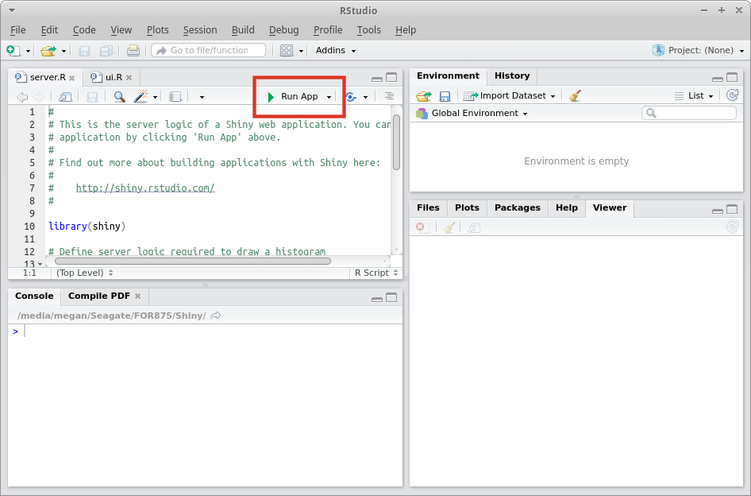
FIGURE 14: Running a Shiny app locally
If everything compiles correctly, you should get a window that looks like Figure 15. There are a few things to notice. First, we read in the CSV file at the beginning of the app.R script so that these data can be accessed in subsquent development steps (although we donât use it yet in this initial application). Second, our Shiny app is not interactive yet because there is no way for a user to input any dataâthe page is view-only. Third, the function function(input,output) {} in app.R does not include any code, reflecting that we are not yet using any user inputs or creating any outputs.
FIGURE 15: Your first Shiny app
1.59 Adding User Input
Shiny package widgets are used to collect user provided inputs (visit the Shiny Widget Gallery to get a sense of the different kinds of input dialogues). In the subsequent development weâll use slider bars, dropdown menus, and check boxes. All widget functions, at minimum, include an inputId and label argument. The character string assigned to the inputId argument will be the variable name used to access the value(s) selected or provided by the user. This variable name is used in the application development and not seen by the user. The character string assigned to the label argument appears in the UI above the given input widget and serves to provide a user-friendly description of the desired input.
Building on the âversion 1â code, we add a dropdown menu to the scriptâs UI portion using the selectInput function to the âversion 2â code below. Update app.R and rerun the application. What is our inputId for the dropdown menu? What is our label? Can you see where the label is displayed in the app when you rerun it?
Look at the structure of the choices argument in selectInput. Itâs a vector of options in the form "name" = "value" where the name is what the user sees, and the value is what is returned to the server logic function of the app.R file.
# app.R version 2library(shiny)names.df <-read.csv("https://www.finley-lab.com/files/data/name_list.csv")# Define UIui <-fluidPage(titlePanel("Random Names Age Analysis"),sidebarLayout(sidebarPanel(# Dropdown selection for Male/FemaleselectInput(inputId ="sexInput", label ="Sex:",choices =c("Female" = "F", "Male" = "M", "Both" = "B")) ),mainPanel("our output will appear here") ))# Define server logicserver <-function(input, output) {}# Create Shiny appshinyApp(ui = ui, server = server)
1.60 Adding Output
Now that weâve included the user input dialog, letâs make the application truly interactive by changing the output depending on user input. This is accomplished by modifying the server logic portion of the script. Our goal is to plot an age distribution histogram in the main panel given the sex selected by the user.
1.60.1 Interactive Server Logic
Server logic is defined by two arguments: input and output. These objects are both list-like, so they can contain multiple other objects. We already know from the user input part of the app.R script that we have an input component called sexInput, which can be accessed in the reactive portion of the server logic by calling input$sexInput (notice the use of the $ to access the input value associated with sexInput). In âversion 3â of the application, we use the information held in input$sexInput to subset names.df then create a histogram of names.df$Age. This histogram graphic is included as an element in the output object and ultimately made available in the UI portion of the script by referencing its name histogram.
Reactive portions of our app.R scriptâs server logic are inside the server function. We create reactive outputs using Shinyâs functions like renderPlot.50 Obviously, renderPlot renders the contents of the function into a plot object; this is then stored in the output list wherever we assign it (in this case, output$histogram). Notice the contents of the renderPlot function are contained not only by regular parentheses, but also by curly brackets (just one more piece of syntax to keep track of).
# app.R version 3library(shiny)names.df <-read.csv("https://www.finley-lab.com/files/data/name_list.csv")# Define UIui <-fluidPage(titlePanel("Random Names Age Analysis"),sidebarLayout(sidebarPanel(# Dropdown selection for Male/FemaleselectInput(inputId ="sexInput", label ="Sex:",choices =c("Female" = "F", "Male" = "M", "Both" = "B")) ),mainPanel("our output will appear here") ))# Define server logicserver <-function(input, output) { output$histogram <-renderPlot({if(input$sexInput != "B"){ subset.names.df <-subset(names.df, Sex ==input$sexInput) } else { subset.names.df <-names.df } ages <-subset.names.df$Age# draw the histogram with the specified 20 binshist(ages, col ='darkgray', border ='white') })}# Create Shiny appshinyApp(ui = ui, server = server)
Update your app.R server logic function to match the code above. Rerun the application. Note the appearance of the app doesnât change because we have not updated the UI portion with the resulting histogram.
1.60.2 Interactive User Interface
Now we update the UI part of app.R to make the app interactive. In the âversion 4â code below, the plotOutput("histogram") function in ui accesses the histogram component of the output list and plots it in the main panel. Copy the code below and rerun the application. You have now created your first Shiny app!
# app.R version 4library(shiny)names.df <-read.csv("https://www.finley-lab.com/files/data/name_list.csv")# Define UIui <-fluidPage(titlePanel("Random Names Age Analysis"),sidebarLayout(sidebarPanel(# Dropdown selection for Male/FemaleselectInput(inputId ="sexInput", label ="Sex:",choices =c("Female" = "F", "Male" = "M", "Both" = "B")) ),mainPanel(plotOutput("histogram")) ))# Define server logicserver <-function(input, output) { output$histogram <-renderPlot({if(input$sexInput != "B"){ subset.names.df <-subset(names.df, Sex ==input$sexInput) } else { subset.names.df <-names.df } ages <-subset.names.df$Age# draw the histogram with the specified 20 binshist(ages, col ='darkgray', border ='white') })}# Create Shiny appshinyApp(ui = ui, server = server)
1.61 More Advanced Shiny App: Michigan Campgrounds
The Michigan Department of Natural Resources (DNR) has made substantial investments in open-sourcing its data via the Michigan DNRâs open data initiative. Weâll use some of these data to motivate our next Shiny application. Specifically weâll work with the DNR State Park Campgrounds data available here as a CSV file.
'data.frame': 151 obs. of 19 variables:
$ X : num -84.4 -84.4 -83.8 -83.8 -83.8 ...
$ Y : num 42.9 42.9 42.5 42.5 42.5 ...
$ OBJECTID : int 10330 10331 5986 5987 5988 5989 5990 5991 5992 5993 ...
$ Type : chr "Campground" "Campground" "Campground" "Campground" ...
$ Detail_Type: chr "State Park" "State Park" "State Park" "State Park" ...
$ DISTRICT : chr "Rose Lake" "Rose Lake" "Rose Lake" "Rose Lake" ...
$ COUNTY : chr "Clinton" "Clinton" "Livingston" "Livingston" ...
$ FACILITY : chr "Sleepy Hollow State Park" "Sleepy Hollow State Park" "Brighton Recreation Area" "Brighton Recreation Area" ...
$ Camp_type : chr "Modern" "Organizational" "Modern" "Organizational" ...
$ TOTAL_SITE : int 203 1 144 10 25 25 219 75 2 297 ...
$ ADA_SITES : int 0 0 0 0 0 0 0 3 0 13 ...
$ name : chr "Sleepy Hollow State Park " "Sleepy Hollow State Park " "Brighton Recreation Area Bishop Lake" "Brighton Recreation Area " ...
$ Ownership : chr "State" "State" "State" "State" ...
$ Management : chr "DNR" "DNR" "DNR" "DNR" ...
$ Surface : chr "Dirt" "Dirt" "Dirt" "Dirt" ...
$ Use_ : chr "Recreation" "Recreation" "Recreation" "Recreation" ...
$ Condition : chr "Unknown" "Unknown" "Unknown" "Unknown" ...
$ Lat : num 42.9 42.9 42.5 42.5 42.5 ...
$ Long : num -84.4 -84.4 -83.8 -83.8 -83.8 ...
We see that Michigan has 151 state park campgrounds, and our data frame contains 19 variables. Letâs create a Shiny app UI in which the user selects desired campground specifications, and the app displays the list of resulting campgrounds and their location on a map. The complete Shiny app.R is provided in the âCampsitesMIâ directory in âshiny_chapter_code.zip.â Start out by running the application to see how it works. Examine the example code and how it relates to the application that you are running. The following sections detail each of the appâs components.
1.61.1 Michigan Campgrounds UI
First, letâs look at the structure of the page. Similar to our first application, we again use a fluidPage layout with title panel and sidebar. The sidebar contains a sidebar panel and a main panel. Our sidebar panel has three user input widgets:
sliderInput: Allows user to specify a range of campsites desired in their campground. Since the maximum number of campsites in any Michigan state park campground is 411, 420 was chosen as the maximum.
selectInput: Allows user to select what type of campsites they want. To get the entire list of camp types, we used the data frame, sites, loaded at the beginning of the script.
checkboxInput: Allows the user to see only campgrounds with ADA sites available.
TABLE 5: Interactive elements
Element ID
Description
Function to Create
input$rangeNum
desired range of campsite quantity
sliderInput
input$type
desired campsite type
selectInput
input$ada
desired ADA site availability
checkboxInput
output$plot1
map with campground markers
renderPlot
output$text1
HTML-formatted list of campgrounds
renderText
Table 5 provides a list of the various input and output elements. Take your time and track how the app defines then uses each input and output.
1.61.2 Michigan Campgrounds Server Logic
In creating our server variable, we have two functions that fill in our output elements:
renderText: Creates a character string of HTML code to print the bulleted list of available sites.
renderPlot: Creates a ggplot2 map of Michigan with campground markers.
Note that both of these functions contain identical subsetting of the sites data frame into the smaller sites1 data frame (see below). As you can see from the code, we use the three inputs from the application to subset the data: rangeNum from the slider widget, type from the dropdown menu, and ada from the checkbox.
This repeated code can be avoided using Shinyâs reactive expressions. These expressions will update in value whenever the widget input values change. See here for more information. The use of reactive expressions is beyond the scope of this chapter, but it is an important concept to be familiar with if you plan to regularly create Shiny applications.
Leaflet can be easily incorporated in Shiny apps (See Chapter ?? of this text to learn more about spatial data). In the Michigan Campgrounds example code, we used plotOutput and renderPlot to put a plot widget in our Shiny app. Similarly, in this code, we will use leafletOutput and renderLeaflet to add Leaflet widgets to our app. Run the Shiny app in the CampsitesMI_Leaflet directory. What are the differences between the plot widget in this app and the plot widget in the previous app (using ggplot2)?
Our code inside renderLeaflet is displayed below. As a reminder from our previous use of Leaflet, we can use the magrittr packageâs pipe operator, %>%, to add properties to our Leaflet plot.
In the addCircleMarkers function, you can see that we used the mapply function to apply HTML code to each of the markers. The HTML code simply prints the site name and number of sites within each marker label. The else statement serves the purpsose that if our subset, sites1, is empty, we render a map centered on Lansing, MI.
}
# renderLeaflet function from app.Routput$plot1 <-renderLeaflet({# create a subset of campsites based on inputs sites1 <-subset(sites, TOTAL_SITE >=input$rangeNum[1] &TOTAL_SITE <=input$rangeNum[2] &Camp_type ==input$type &if(input$ada){ ADA_SITES >0 } else {ADA_SITES >=0})if(nrow(sites1) >0){leaflet(sites1) %>%addTiles() %>%addCircleMarkers(lng =~Long, lat =~Lat, radius =5,color ="red",label =mapply(function(x,y) {HTML(sprintf('<em>%s</em><br>%s site(s)', htmlEscape(x), htmlEscape(y)))}, sites1$FACILITY, sites1$TOTAL_SITE ) ) } else {leaflet() %>%addTiles() %>%setView( -84.5555, 42.7325, zoom =7) } })
1.63 Why use Shiny?
In this chapter, we learned what a Shiny app is, what itâs components are, how to run the app, and how to incorporate Leaflet plots. We can also host these apps online on our own server or the shinyapps.io server, which can be accessed directly from RStudio. Hosting our apps on a server allows anyone with internet access to interact with our widgets.
The shinyapps.io server allows free hosting of apps within the monthly limits of 5 applications and 25 active hours. Paid plans are also available. A user guide to deploying your application on shinyapps.io is available here. Set up a free account and impress your friends by sending them links to your Shiny apps! In addition to hosting your applications, here are a few more things to discover with Shiny:
Dive deeper into development by working through the RStudio Shiny tutorial series.
Incorporate CSS stylesheets to make your apps fancier.
Exercise Shiny Learning objectives: practice updating ggplot2 plot aesthetics; modify Shiny HTML output; add an interactive Shiny element.
_# Classification
Classification problems are quite common. For example a spam filter is asked to classify incoming messages into spam or non-spam, based on factors such as the senderâs address, the subject of the message, the contents of the message, and so on. As another example, a doctor diagnosing a patient into one of four possible diagnoses based on symptoms, blood tests, and medical history is another form of classification. Or a bank may want to determine (prior to giving a loan) whether an applicant for a loan will default on the loan, again based on several variables such as income, financial history, etc.
Classification methods are both extremely useful and an active area of research in statistics. In this chapter we will learn about two common, and somewhat different, classification methods, logistic regression and \(k\) nearest neighbors. A very good introduction to classification and many other âStatistical Learningâ methods is James et al. (2014). The abbreviated treatment in this chapter draws from James et al. (2014).
1.65 Logistic Regression
Logistic regression is widely used to relate a categorical response variable to one or more (continuous or categorical) predictors. Initially we will consider the simplest case where the response \(Y\) has only two possible values (weâll assume the values are \(0\) and \(1\)) and where there is only one continuous predictor \(X\). We would like to predict the value of \(Y\) based on the value of the predictor \(X\). Let \(p(X) = P(Y = 1 | X)\).51. We will model \(p(X)\) with the logistic function, which takes values between \(0\) and \(1\), which is of course appropriate for modeling a probability:
To make this more concrete, we will consider a data set on a population of women who were over 21 years of age, lived near Phoenix, Arizona, and were of Pima Indian heritage. The data included diabetes status (yes or no) and seven possible predictor variables such as age, number of pregnancies, body mass index, etc. The original data are from the National Institute of Diabetes and Digestive and Kidney Diseases. These data were cleaned and are available in the MASS package in R. In the package the data frame Pima.tr contains 200 randomly selected cases from the full data set, which we will use to find a classifier. The data frame Pima.te contains the remaining 332 cases, which we will use to test the classifier on new data.52
>library(MASS)>head(Pima.tr)
npreg glu bp skin bmi ped age type
1 5 86 68 28 30.2 0.364 24 No
2 7 195 70 33 25.1 0.163 55 Yes
3 5 77 82 41 35.8 0.156 35 No
4 0 165 76 43 47.9 0.259 26 No
5 0 107 60 25 26.4 0.133 23 No
6 5 97 76 27 35.6 0.378 52 Yes
It will be more convenient to code the presence or absence of diabetes by 1 and 0, so we first create another column in the data frame with this coding:
npreg glu bp skin bmi ped age type diabetes
1 5 86 68 28 30.2 0.364 24 No 0
2 7 195 70 33 25.1 0.163 55 Yes 1
3 5 77 82 41 35.8 0.156 35 No 0
4 0 165 76 43 47.9 0.259 26 No 0
5 0 107 60 25 26.4 0.133 23 No 0
6 5 97 76 27 35.6 0.378 52 Yes 1
We will begin with glu as a predictor, and of course type as the response. So we want to find the values \(\beta_0\) and \(\beta_1\) which provide the best fit for the model
Usually maximum likelihood methods are used to fit the model.
In R we will use the function glm to fit logistic regression models. The glm function fits a wide variety of models. To specify the logistic regression model we specify family = binomial as an argument to glm. We also must specify the predictor and response variables via the model formula, which in our case will be diabetes ~ glu to indicate that diabetes (i.e., type recoded) is the response and glu is the predictor; also we specify the data frame, which in our case is Pima.tr.
>diabetes.lr1 <-glm(diabetes ~glu, data = Pima.tr, family = binomial)>diabetes.lr1
Call: glm(formula = diabetes ~ glu, family = binomial, data = Pima.tr)
Coefficients:
(Intercept) glu
-5.5036 0.0378
Degrees of Freedom: 199 Total (i.e. Null); 198 Residual
Null Deviance: 256
Residual Deviance: 207 AIC: 211
>summary(diabetes.lr1)
Call:
glm(formula = diabetes ~ glu, family = binomial, data = Pima.tr)
Deviance Residuals:
Min 1Q Median 3Q Max
-1.971 -0.779 -0.529 0.849 2.263
Coefficients:
Estimate Std. Error z value Pr(>|z|)
(Intercept) -5.50364 0.83608 -6.58 0.000000000046
glu 0.03778 0.00628 6.02 0.000000001756
(Intercept) ***
glu ***
---
Signif. codes:
0 '***' 0.001 '**' 0.01 '*' 0.05 '.' 0.1 ' ' 1
(Dispersion parameter for binomial family taken to be 1)
Null deviance: 256.41 on 199 degrees of freedom
Residual deviance: 207.37 on 198 degrees of freedom
AIC: 211.4
Number of Fisher Scoring iterations: 4
The coefficients \(\beta_0\) and \(\beta_1\) are approximately -5.504 and
0.038, respectively. So for example we can estimate the probability that a woman in this population whose glucose level is 150 would be diabetic as
>exp(-5.504+0.038*150)/(1+exp(-5.504+0.038*150))
[1] 0.5488
We can plot the fitted probabilities along with the data âby handâ.
The ggplot2 package also provides a way to do this more directly, using stat_smooth.
>ggplot(Pima.tr, aes(x = glu, y = diabetes)) ++geom_point() ++stat_smooth(method ="glm", +method.args =list(family ="binomial"), se =FALSE)
From these graphics we can see that although glucose level and diabetes are related, there are many women with high glucose levels who are not diabetic, and many with low glucose levels who are diabetic, so likely adding other predictors to the model will help.
Next letâs see how the model does in predicting diabetes status in the data we did not use for fitting the model. We will predict diabetes for anyone whose glucose level leads to a model-based probability greater than \(1/2\). First we use the predict function to compute the probabilities, and then use these to make predictions.
The predict function (with type = "response" specified) provides \(p(x) = P(Y = 1 | X = x)\) for all the \(x\) values in a data frame. In this case we specified the data frame Pima.te since we want to know how the model does in predicting diabetes in a new population, i.e., in a population that wasnât used to âtrainâ the model.
The table (sometimes called a confusion matrix) has the predictions of the model in the rows, so for example we see that the model predicts that \(206 + 58 = 264\) of the women will not be diabetic, and that \(17+51 = 68\) of the women will be diabetic. More interesting of course are the cells themselves. For example, of the \(206 + 17 = 223\) women who are not diabetic in Pima.te, the model correctly classifies 206, and misclassifies 17. A classifier that predicted perfectly for the test data would have zeros off the diagonal.
1.65.1 Adding Predictors
If we have \(p\) predictors \(X = (X_1, \dots, X_p)\), the logistic model becomes
Although there is a lot more notation to keep track of, the basic ideas are the same as they were for the one predictor model. We will next see how adding bmi, the body mass index, affects predictions of diabetes.
>diabetes.lr2 <-glm(diabetes ~glu +bmi, +data = Pima.tr, family = binomial)>diabetes.lr2
Call: glm(formula = diabetes ~ glu + bmi, family = binomial, data = Pima.tr)
Coefficients:
(Intercept) glu bmi
-8.2161 0.0357 0.0900
Degrees of Freedom: 199 Total (i.e. Null); 197 Residual
Null Deviance: 256
Residual Deviance: 198 AIC: 204
>summary(diabetes.lr2)
Call:
glm(formula = diabetes ~ glu + bmi, family = binomial, data = Pima.tr)
Deviance Residuals:
Min 1Q Median 3Q Max
-2.058 -0.757 -0.431 0.801 2.249
Coefficients:
Estimate Std. Error z value Pr(>|z|)
(Intercept) -8.21611 1.34697 -6.10 0.0000000011
glu 0.03572 0.00631 5.66 0.0000000152
bmi 0.09002 0.03127 2.88 0.004
(Intercept) ***
glu ***
bmi **
---
Signif. codes:
0 '***' 0.001 '**' 0.01 '*' 0.05 '.' 0.1 ' ' 1
(Dispersion parameter for binomial family taken to be 1)
Null deviance: 256.41 on 199 degrees of freedom
Residual deviance: 198.47 on 197 degrees of freedom
AIC: 204.5
Number of Fisher Scoring iterations: 4
Now we look at predictions from this model.
>diabetes.probs.2 <-predict(diabetes.lr2, Pima.te, type ="response")>head(diabetes.probs.2)
Adding bmi as a predictor did not improve the predictions by very much!
Let \(x_1\) and \(x_2\) represent glucose and bmi levels. We classify a subject as âdiabeticâ if the fitted \(p(X)\) is greater than \(0.5\), i.e., if the fitted probability of diabetes is greater than the fitted probability of not diabetes. The boundary for our decision is where these two fitted probabilities are equal, i.e., where
Writing these out in terms of the logistic regression model, taking logarithms, and performing some algebra leads to the following (linear!) decision boundary:
Logistic regression methods also are applicable to classification contexts where there are more than two classes. Consider for example Fisherâs iris data.
Here the potential predictors are sepal width, sepal length, petal width, and petal length. The goal is to find a classifier that will yield the correct species. From the scatter plots it should be pretty clear that a model with petal length and petal width as predictors would classify the data well. Although in a sense this is too easy, these data do a good job of illustrating logistic regression with more than two classes.
Before doing that we randomly choose 75 of the 150 rows of the data frame to be the training sample, with the other 75 being the test sample.
There are several packages which implement logistic regression for data with more than two classes. We will use the VGAM package. The function vglm within VGAM implements logistic regression (and much more).
>library(VGAM)>iris.lr <-vglm(Species ~Petal.Width +Petal.Length, +data = iris.train, family = multinomial)>summary(iris.lr)
Call:
vglm(formula = Species ~ Petal.Width + Petal.Length, family = multinomial,
data = iris.train)
Pearson residuals:
Min 1Q
log(mu[,1]/mu[,3]) -0.00000181 -0.000000246
log(mu[,2]/mu[,3]) -1.26528143 -0.000122333
Median 3Q Max
log(mu[,1]/mu[,3]) 0.0000000436 0.000000063 0.0000164
log(mu[,2]/mu[,3]) 0.0000006634 0.002992883 2.4706594
Coefficients:
Estimate Std. Error z value Pr(>|z|)
(Intercept):1 118.95 9260.55 NA NA
(Intercept):2 63.51 34.00 NA NA
Petal.Width:1 -27.34 14731.81 0 1
Petal.Width:2 -14.55 7.47 NA NA
Petal.Length:1 -26.61 6453.20 0 1
Petal.Length:2 -8.24 5.59 NA NA
Names of linear predictors: log(mu[,1]/mu[,3]),
log(mu[,2]/mu[,3])
Residual deviance: 8.682 on 144 degrees of freedom
Log-likelihood: -4.341 on 144 degrees of freedom
Number of Fisher scoring iterations: 21
Warning: Hauck-Donner effect detected in the following estimate(s):
'(Intercept):1', '(Intercept):2', 'Petal.Width:2', 'Petal.Length:2'
Reference group is level 3 of the response
Notice that the family is specified as multinomial rather than binomial since we have more than two classes. When run with these data, the vglm function returns several (about 20) warnings. These occur mainly because the classes are so easily separated, and are suppressed above.
Next we compute the probabilities for the test data.
At least for the first six cases, one probability is close to one and the other two are close to zero, reflecting the fact that this is an easy classification problem. Next we extract the actual predictions. For these, we want to choose the highest probability in each row. The which.max function makes this easy. Before applying this to the fitted probabilities, we illustrate its use. Take notice that which.max() returns the position of the highest probability, and not the actualy highest probability itself.
Nearest neighbor methods provide a rather different way to construct classifiers, and have strengths (minimal assumptions, flexible decision boundaries) and weaknesses (computational burden, lack of interpretability) compared to logistic regression models.
In principle the idea is simple. Recall that the training set will have both \(x\) and \(y\) values known, while the test set will have only \(x\) values known. Begin by choosing a positive integer \(k\) which will specify the number of neighbors to use in classification. To classify a point \(x\) in the training set, find the \(k\) closest \(x\) values in the training set, and choose the class which has the highest representation among the \(k\) points. The algorithm is called kNN for âk Nearest Neighborsâ.
For example, suppose that \(k=10\) and the 10 nearest neighbors to a training \(x\) have classes \(1, 1, 3, 2, 3, 3, 3, 2, 3, 2\). Since there are five 3s, three 2s, and two 1s, the training point is assigned to class 3. Suppose that for another \(x\) the 10 nearest neighbors have classes \(1,1,1,2,3,1,3,3,3,2\). In this case there are four 1s and four 3s, so there is a tie for the lead. The nearest neighbor algorithm then will choose between 1 and 3 at random.
Although in principle kNN is simple, some issues arise. First, how should \(k\) be chosen? There is not an easy answer, but it can help to think of the extreme values for \(k\).
The largest possible \(k\) is the number of observations in the training set. For example suppose that the training set has \(10\) observations, with classes \(1, 1, 1, 2, 2, 2, 3, 3, 3, 3\). Then for any point in the test set, the \(k=10\) nearest neighbors will include ALL of the points in the training set, and hence every point in the test set will be classified in class 3. This classifier has low (zero) variance, but probably has high bias.
The smallest possible \(k\) is 1. In this case, each point in the test set is put in the same class as its nearest neighbor in the training set. This may lead to a very non-smooth and high variance classifier, but the bias will tend to be small.
A second issue that is relatively easy to deal with concerns the scales on which the \(x\) values are measured. If for example one \(x\) variable has a range from 2 to 4, while another has a range from 2000 to 4000, the distance between the test and training data will be dominated by the second variable. The solution that is typically used is to standardize all the variables (rescale them so that their mean is 0 and their standard deviation is 1).
These and other issues are discussed in the literature on kNN, but we wonât pursue them further.
There are at least three R packages which implement kNN, including class, kknn, and RWeka. We will use class below.
An example from Hastie, Tibshirani, and Friedman (2009) will be used to give a better sense of the role of \(k\) in the kNN algorithm. The example uses simulated data and shows the decision boundaries for kNN with \(k=15\) and \(k=1\).53. Although the R code used to draw the displays is given below, focus mainly on the graphics produced, and what they tell us about kNN.
First the data are read into R and graphed. The predictors x1 and x2, while not standardized, have very similar standard deviations, so we will not standardize these data before applying kNN.
Next a large set of test data is created using the expand.grid function, which creates a data frame with all possible combinations of the arguments. First a simple example to illustrate the function, then the actual creation of the training set. The test set covers the range of the x1 and x2 values in the training set.
>expand.grid(x =c(1,2), y =c(5,3.4,2))
x y
1 1 5.0
2 2 5.0
3 1 3.4
4 2 3.4
5 1 2.0
6 2 2.0
Next the kNN with \(k=15\) is fit. Notice that the first argument gives the \(x\) values in the training set, the next argument gives the \(x\) values in the test set, the third argument gives the \(y\) values (labels) from the training set. The fourth argument gives \(k\), and the fifth argument asks for the function to return the probabilities of membership (that is, the proportion of the nearest neighbors which were in the majority class) as well as the class assignments.
>library(class)>Example_knn <-knn(knnExample[,c(1,2)], x.test, knnExample[,3], k =15, prob =TRUE)>prob <-attr(Example_knn, "prob")>head(prob)
[1] 0.6667 0.6667 0.6667 0.7333 0.7333 0.7333
Next the graphs are created. This is somewhat complex, since we want to plot the test data colored by the class they were assigned to by the kNN classifier as background, the training data (using a different symbol), and the decision boundary.
>ggplot(bigdf) ++geom_point(aes(x=x1, y =x2, col=class), data =mutate(x.test, class = Example_knn), size =0.5) ++geom_point(aes(x = x1, y = x2, col =as.factor(class)), size =4, shape =1, data = knnExample) ++geom_contour(aes(x = x1, y = x2, z = prob_cls, group =as.factor(class), color =as.factor(class)), size =1, bins =1, data = bigdf) +theme_bw()
Next we graph the decision boundary of kNN with \(k=1\).
>Example_knn <-knn(knnExample[,c(1,2)], x.test, knnExample[,3], k =1, prob =TRUE)>prob <-attr(Example_knn, "prob")>head(prob)
>df2 <-mutate(x.test, prob = prob, class =1, prob_cls =ifelse(Example_knn ==class, 1, 0))>bigdf <-bind_rows(df1, df2)>>ggplot(bigdf) +geom_point(aes(x = x1, y = x2, col = class), data =mutate(x.test, class = Example_knn), size =0.5) +geom_point(aes(x = x1, y = x2, col =as.factor(class)), size =4, shape =1, data = knnExample) +geom_contour(aes(x = x1, y = x2, z = prob_cls, group =as.factor(class), color =as.factor(class)), size =1, bins =1, data = bigdf) +theme_bw()
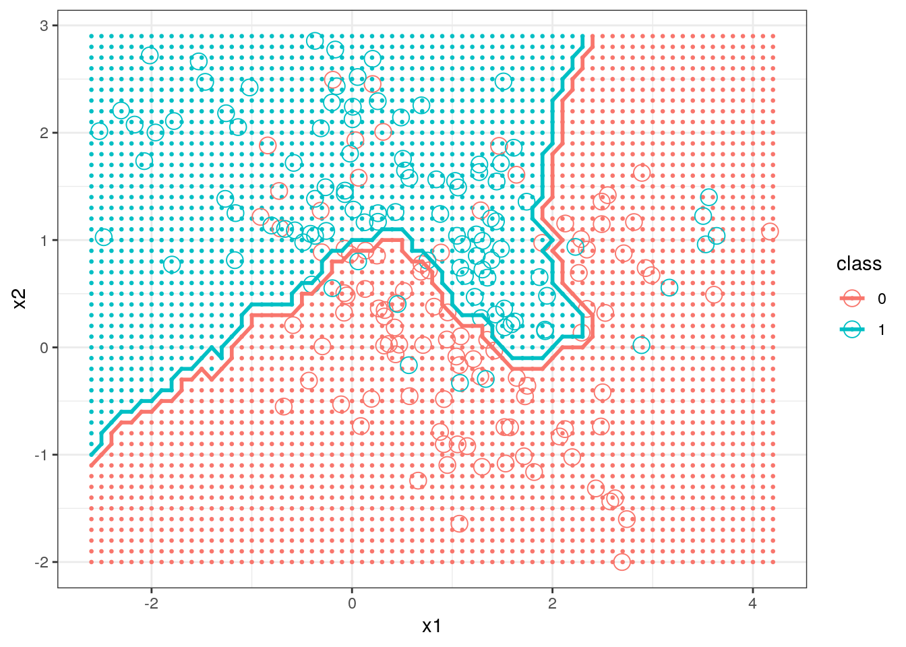
1.66.1 kNN and the Diabetes Data
Next kNN is applied to the diabetes data. We will use the same predictors, glu and bmi that were used in the logistic regression example. Since the scales of the predictor variables are substantially different, they are standardized first. The value \(k=15\) is chosen for kNN.
>Pima.tr[,1:7] <-scale(Pima.tr[,1:7], center =TRUE, scale =TRUE)>Pima.te[,1:7] <-scale(Pima.te[,1:7], center =TRUE, scale =TRUE)>knn_Pima <-knn(Pima.tr[,c(2,5)], Pima.te[,c(2,5)], Pima.tr[,8], k =15, prob=TRUE)>table(knn_Pima, Pima.te[,8])
knn_Pima No Yes
No 206 55
Yes 17 54
At least in terms of the confusion matrix, kNN with \(k=15\) performed about as well as logistic regression for these data.
1.66.2 Practice Problem
Produce a figure that displays how the number of false positives produced from the kNN classifier for the diabetes data set changes for all integer values of \(k\) from 1 to 40. Use this graph to justify whether or not \(k = 15\) was a valid choice for the number of neighbors.
1.66.3 kNN and the iris Data
Now kNN is used to classify the iris data. As before we use petal length and width as predictors. The scales of the two predictors are not particularly different, so we wonât standardize the predictors. Unsurprisingly kNN does well in classifying the test set for a wide variety of \(k\) values.
Exercise Classification Learning objectives: explore the logistic regression classification method; apply the kNN classification method; create confusion matrices to compare classification methods; plot classified data.
_# Text Data {#xml}
Many applications require the ability to manipulate and process text data. For example, an email spam filter takes as its input various features of email such as the sender, words in the subject, words in the body, the number and types of attachments, and so on. The filter then tries to build a classifier which can correctly classify a message as spam or not spam (aka ham). As another example, some works of literature, such as some of Shakespeareâs plays or some of the Federalist papers, have disputed authorship. By analyzing word use across many documents, researchers try to determine the author of the disputed work.
Working with text data requires functions that will, for example, concatenate and split text strings, modify strings (e.g., converting to lower-case or removing vowels), count the number of characters in a string, and so on. In addition to being useful in such contexts, string manipulation is helpful more generally in Râfor example, to effectively construct titles for graphics.
As with most tasks, there are a variety of ways to accomplish these text processing tasks in R. The base R package has functions which work with and modify text strings. Another useful package which approaches these tasks in a slightly different way is stringr. As with graphics, we will focus mainly on one package to avoid confusion. In this case we will focus on the base R string processing functions, but will emphasize that stringr is also worth knowing.
The application to analyzing Moby Dick below comes from the book {Text Analysis with R for Students of Literature by Matthew L. Jockers.
1.68 Reading Text Data into R
Often text data will not be in a rectangular format that is suitable for reading into a data frame. For example, an email used to help train a spam filter, or literary texts used to help determine authorship of a novel are certainly not of this form. Often when working with text data we want to read the whole text object into a single R vector. In this case either the scan function or the readLines function are useful. The readLines function is typically more efficient, but scan is much more flexible.
As an example, consider the following email message and a plain text version of the novel Moby Dick by Herman Melville, the beginning of which is displayed subsequently.
From safety33o@l11.newnamedns.com Fri Aug 23 11:03:37 2002
Return-Path: <safety33o@l11.newnamedns.com>
Delivered-To: zzzz@localhost.example.com
Received: from localhost (localhost [127.0.0.1])
by phobos.labs.example.com (Postfix) with ESMTP id 5AC994415F
for <zzzz@localhost>; Fri, 23 Aug 2002 06:02:59 -0400 (EDT)
Received: from mail.webnote.net [193.120.211.219]
by localhost with POP3 (fetchmail-5.9.0)
for zzzz@localhost (single-drop); Fri, 23 Aug 2002 11:02:59 +0100 (IST)
Received: from l11.newnamedns.com ([64.25.38.81])
by webnote.net (8.9.3/8.9.3) with ESMTP id KAA09379
for <zzzz@example.com>; Fri, 23 Aug 2002 10:18:03 +0100
From: safety33o@l11.newnamedns.com
Date: Fri, 23 Aug 2002 02:16:25 -0400
Message-Id: <200208230616.g7N6GOR28438@l11.newnamedns.com>
To: kxzzzzgxlrah@l11.newnamedns.com
Reply-To: safety33o@l11.newnamedns.com
Subject: ADV: Lowest life insurance rates available!
moode
Lowest rates available for term life insurance! Take a moment
and fill out our online form
to see the low rate you qualify for.
Save up to 70% from regular rates! Smokers accepted!
http://www.newnamedns.com/termlife/
Representing quality nationwide carriers. Act now!
The Project Gutenberg EBook of Moby Dick; or The Whale, by Herman Melville
This eBook is for the use of anyone anywhere at no cost and with
almost no restrictions whatsoever. You may copy it, give it away or
re-use it under the terms of the Project Gutenberg License included
with this eBook or online at www.gutenberg.org
Title: Moby Dick; or The Whale
Author: Herman Melville
Last Updated: January 3, 2009
Posting Date: December 25, 2008 [EBook #2701]
Release Date: June, 2001
Language: English
*** START OF THIS PROJECT GUTENBERG EBOOK MOBY DICK; OR THE WHALE ***
Produced by Daniel Lazarus and Jonesey
MOBY DICK; OR THE WHALE
By Herman Melville
First, we read in the email message. The scan function has several possible arguments. For now the important arguments are the file to be read (the argument is named file), the type of data in the file (the argument is named what), and how the fields in the file are separated (the argument is named sep). To illustrate the sep argument, the file will be read into R once with sep = "" indicating that the separator is whitespace, and once with sep = "\n" indicating that the separator is the newline character, i.e., each field in the file is a line.
>u.email <- "https://www.finley-lab.com/files/data/email1.txt">email1 <-scan(u.email, what ="character", sep ="")>length(email1)
>email1 <-scan(u.email, what ="character", sep ="\n")>length(email1)
[1] 26
>email1[1:10]
[1] "From safety33o@l11.newnamedns.com Fri Aug 23 11:03:37 2002"
[2] "Return-Path: <safety33o@l11.newnamedns.com>"
[3] "Delivered-To: zzzz@localhost.example.com"
[4] "Received: from localhost (localhost [127.0.0.1])"
[5] "\tby phobos.labs.example.com (Postfix) with ESMTP id 5AC994415F"
[6] "\tfor <zzzz@localhost>; Fri, 23 Aug 2002 06:02:59 -0400 (EDT)"
[7] "Received: from mail.webnote.net [193.120.211.219]"
[8] "\tby localhost with POP3 (fetchmail-5.9.0)"
[9] "\tfor zzzz@localhost (single-drop); Fri, 23 Aug 2002 11:02:59 +0100 (IST)"
[10] "Received: from l11.newnamedns.com ([64.25.38.81])"
Note that when sep = "" was specified, every time whitespace was encountered R moved to a new element of the vector email1, and this vector ultimately contained 133 elements. When sep = "\n" was specified, all the text before a newline was put into one element of the vector, which ended up with 26 elements.
The scan function is quite flexible. In fact, read.table uses scan to actually read in the data. Read the help file for scan if more information is desired.
Next Moby Dick is read in line by line.
>u.moby <- "https://www.finley-lab.com/files/data/mobydick.txt">moby_dick <-scan(u.moby, what ="character", sep ="\n")>moby_dick[1:25]
[1] "The Project Gutenberg EBook of Moby Dick; or The Whale, by Herman Melville"
[2] "This eBook is for the use of anyone anywhere at no cost and with"
[3] "almost no restrictions whatsoever. You may copy it, give it away or"
[4] "re-use it under the terms of the Project Gutenberg License included"
[5] "with this eBook or online at www.gutenberg.org"
[6] "Title: Moby Dick; or The Whale"
[7] "Author: Herman Melville"
[8] "Last Updated: January 3, 2009"
[9] "Posting Date: December 25, 2008 [EBook #2701]"
[10] "Release Date: June, 2001"
[11] "Language: English"
[12] "*** START OF THIS PROJECT GUTENBERG EBOOK MOBY DICK; OR THE WHALE ***"
[13] "Produced by Daniel Lazarus and Jonesey"
[14] "MOBY DICK; OR THE WHALE"
[15] "By Herman Melville"
[16] "Original Transcriber's Notes:"
[17] "This text is a combination of etexts, one from the now-defunct ERIS"
[18] "project at Virginia Tech and one from Project Gutenberg's archives. The"
[19] "proofreaders of this version are indebted to The University of Adelaide"
[20] "Library for preserving the Virginia Tech version. The resulting etext"
[21] "was compared with a public domain hard copy version of the text."
[22] "In chapters 24, 89, and 90, we substituted a capital L for the symbol"
[23] "for the British pound, a unit of currency."
[24] "ETYMOLOGY."
[25] "(Supplied by a Late Consumptive Usher to a Grammar School)"
You will notice that the scan function ignored blank lines in the file. If it is important to preserve blank lines, the argument blank.lines.skip = FALSE can be supplied to scan.
The file containing the novel contains some introductory and closing text that is not part of the original novel. If we are interested in Melvilleâs writing, we should remove this text. By inspection we can discover that the novelâs text begins at position 408 and ends at position 18576.
[1] "CHAPTER 1. Loomings."
[2] "Call me Ishmael. Some years ago--never mind how long precisely--having"
[3] "little or no money in my purse, and nothing particular to interest me on"
[4] "shore, I thought I would sail about a little and see the watery part of"
>moby_dick[18165:18169]
[1] "they glided by as if with padlocks on their mouths; the savage sea-hawks"
[2] "sailed with sheathed beaks. On the second day, a sail drew near, nearer,"
[3] "and picked me up at last. It was the devious-cruising Rachel, that in"
[4] "her retracing search after her missing children, only found another"
[5] "orphan."
1.69 The paste Function
The paste function concatenates vectors after (if necessary) converting the vectors to character.
Sometimes we want to take a character vector with \(n\) elements and create a character vector with only one element, which contains all \(n\) character strings. Setting the collapse argument to something other than the default NULL tells R we want to do this, and allows specification of the separator in the collapsed vector.
[1] "one six two seven three eight four nine five ten"
In the example above by default paste created a vector with five elements, each containing one input string from the first input vector and one from the second vector, pasted together. When a non NULL argument was specified for collapse, the vector created had one element, with the pasted strings separated by that argument.54
Also donât forget that R ârecyclesâ values from vectors if two or more different length vectors are provided as input.
Next, consider writing a function which simulates repeatedly tossing a coin \(n\) times, counting the number of HEADS out of the \(n\) tosses. For the first five repetitions of \(n\) tosses, the function will print out the number of HEADS (for example if there are 7 HEADS in the \(n=10\) tosses the function prints âThe number of HEADS out of 10 tosses is 7.â The function returns a histogram of the number of HEADS, with a title stating âNumber of HEADS in ?? tossesâ where ?? is replaced by the number of tosses. The paste function will help greatly.
>coin_toss <-function(n=10, iter =500){+require(ggplot2)+df <-data.frame(numheads =numeric(iter))+for(i in1:iter) {+df$numheads[i] <-rbinom(1, n, 0.5)+if(i <=5) {+print(paste("The number of HEADS out of", n, "tosses is", df$numheads[i]))}+}+ggplot(data = df, aes(x = numheads)) ++geom_histogram(binwidth =1) ++ggtitle(paste("Number of HEADS in", n, "tosses"))+}>coin_toss()
[1] "The number of HEADS out of 10 tosses is 5"
[1] "The number of HEADS out of 10 tosses is 3"
[1] "The number of HEADS out of 10 tosses is 6"
[1] "The number of HEADS out of 10 tosses is 5"
[1] "The number of HEADS out of 10 tosses is 8"
>coin_toss(n =25, iter=1000)
[1] "The number of HEADS out of 25 tosses is 11"
[1] "The number of HEADS out of 25 tosses is 13"
[1] "The number of HEADS out of 25 tosses is 11"
[1] "The number of HEADS out of 25 tosses is 16"
[1] "The number of HEADS out of 25 tosses is 17"
Letâs now return to the object moby_dick that contains the text of the novel. If we want to analyze word choice, word frequency, etc., it would be helpful to form a vector in which each element is a word from the novel. One way to do this is to first paste the current version of the moby_dick variable into a new version which is one long vector with the lines pasted together. To illustrate, we will first do this with a much smaller object that shares the structure of moby_dick.
At this point moby_dick contains a single very long character string. Next we will separate this string into separate words and clean up the resulting vector a bit.
1.70 More String Processing Functions
Common string processing tasks include changing case between upper and lower, extracting and/or replacing substrings of a string, trimming a string to a specified width, counting the number of characters in a string, etc.
1.70.1tolower and toupper
R contains functions tolower and toupper which very simply change the case of all characters in a string.
>x <- "aBCdefG12#">y <-x>tolower(x)
[1] "abcdefg12#"
>toupper(y)
[1] "ABCDEFG12#"
If we are interested in frequencies of words in Moby Dick, converting all the text to the same case makes sense, so for example the word âtheâ at the beginning of a sentence is not counted differently than the same word in the middle of a sentence.
>moby_dick <-tolower(moby_dick)
1.70.2nchar and strsplit
The function nchar counts the number of characters in a string or strings.
By default nchar returns NA for a missing value. If you want nchar to return 2 for a NA value, you can set keepNA = TRUE.55
The function strsplit splits the elements of a character vector. The function returns a list, and often the unlist function is useful to convert the list into an atomic vector.
Setting the argument fixed to TRUE tells R to match the value of split exactly when performing the split. The function can be much more powerful if the value of split is a regular expression, which can for example ask for splits at any vowels, etc. We will not go in depth on Regular Expressions here, but we will make some use of regular expressions on a case-by-case basis prior to that. Regular expressions are very powerful, so if this chapter interests you, we suggest researching regular expressions on your own (as always there are plenty of free resources online).
The regular expression [aeiou] represents any of the letters a, e, i, o, u. In general a string of characters enclosed in square brackets indicates any one character in the string.
The regular expression [a-z] represents any lower case letter. The caret ^ in front of a-z indicates âmatch any character except those in the following stringâ which in this case indicates âmatch any character that is NOT a lower case letterâ.
Recall that the moby_dick vector now contains one long character string which includes the entire text of the novel, and that we would like to split it into separate words. We now know how to do this using strsplit and a regular expression. First a smaller example.
>unlist(strsplit(c("the rain", "in Spain stays mainly", "in", "the plain"), +split ="[^0-9A-Za-z]"))
Look at the regular expression. The caret says âmatch anything butâ and then 0=9A-Za-z says âany digit, any lower-case letter, and any upper-case letter.â So the whole expression (including the fact that it is the value of the argument split) says âmatch anything but any digit, any lower-case letter, or any upper-case letterâ.
Then the second step of selecting the non-blank words would not have been necessary. But regular expressions will be essential going forward, so it was worthwhile using regular expressions even if they do not provide the most efficient method.)
1.70.3 Practice Problem
Use strsplit() and regular expressions to split the following strings into their respective words (i.e. write a regular expression that will match the - and . character). Your output should be a vector (not a list).
Now that the vector moby_dick contains each word in the novel as a separate element, it is relatively easy to do some basic analyses. For example the nchar function can give us a count of the number of characters in each element of the vector, i.e., can give us the number of letters in each word in the novel.
>ggplot(data =data.frame(nwords = moby_dick_nchar), aes(x = nwords)) ++geom_histogram(binwidth =1, color ="black", fill ="white") ++ggtitle("Number of letters in words in Moby Dick") ++theme_bw()
moby_dick
the of and a to in that it his
14175 6469 6325 4636 4539 4077 3045 2497 2495
i he but s as with is was for
2114 1876 1805 1737 1720 1692 1690 1627 1593
all this at by whale not from him so
1515 1382 1304 1175 1150 1142 1072 1058 1053
on be one you there now had have or
1040 1032 907 884 854 779 767 754 689
were they like me then which what some their
677 649 639 630 628 625 611 608 604
when an are my no
601 590 587 587 581
1.70.5 Practice Problem
The goal of this exercise is to generate a wordcloud image of the 50 most frqeuent words in Moby Dick that we identifid above. To do this, we need the wordcloud package (you may also need to install the package tm). Look at the R documentation for the wordcloud function included in the wordcloud package and create a wordcloud image of the most popular 500 words in the novel. Here is what mine looks like
1.70.6substr and strtrim
The substr function can be used to extract or replace substrings. The first argument is the string to be manipulated, and the second and third arguments specify the first and last elements of the string to be extracted or to be replaced.
The grep function searches for a specified pattern and returns either the locations where this pattern is found or the selected elements. The grepl function returns a logical vector rather than locations of elements.
Here are some examples. All use fixed = TRUE since at this point we are using fixed character strings rather than regular expressions.
>grep("a", c("the rain", "in Spain stays mainly", "in", "the plain"), +fixed =TRUE)
[1] 1 2 4
>grep("a", c("the rain", "in Spain stays mainly", "in", "the plain"), +fixed =TRUE, value =TRUE)
[1] "the rain"
[2] "in Spain stays mainly"
[3] "the plain"
>grepl("a", c("the rain", "in Spain stays mainly", "in", "the plain"), +fixed =TRUE)
[1] TRUE TRUE FALSE TRUE
The sub and gsub functions replace a specified character string. The sub function only replaces the first occurrence, while gsub replaces all occurrences.
>gsub("a", "?", c("the rain", "in Spain stays mainly", "in", + "the plain"), fixed =TRUE)
[1] "the r?in"
[2] "in Sp?in st?ys m?inly"
[3] "in"
[4] "the pl?in"
>sub("a", "?", c("the rain", "in Spain stays mainly", "in", + "the plain"), fixed =TRUE)
[1] "the r?in"
[2] "in Sp?in stays mainly"
[3] "in"
[4] "the pl?in"
>gsub("a", "???", c("the rain", "in Spain stays mainly", "in", + "the plain"), fixed =TRUE)
[1] "the r???in"
[2] "in Sp???in st???ys m???inly"
[3] "in"
[4] "the pl???in"
>sub("a", "???", c("the rain", "in Spain stays mainly", "in", + "the plain"), fixed =TRUE)
[1] "the r???in"
[2] "in Sp???in stays mainly"
[3] "in"
[4] "the pl???in"
1.71 Exercises
Exercise Text Data Learning objectives: read and write text data; concatenate text with the paste function, analyze text with nchar; practice with functions; manipulate strings with substr and strtrim.
_# Rcpp
R is an interpreted language. The code interpretor runs each line of a script individually instead of compiling the entire file at once as in a compiled language like C++. This means R can be slower than compiled languages when completing some tasks. In this chapter, we show how to improve the performance of our R scripts by rewriting functions in C++56. Although R has an API for developers to move between R data structures and data structures in lower-level languages (C++, C, FORTRAN, etc.), an alternative is to use Rcpp. According to the official Rcpp website, âRcpp provides a powerful API on top of R, permitting direct interchange of rich R objects between R and C++.â It is a higher-level approach than using the aforementioned API directly. C++ functions can address gaps in Râs abilities including
Vectorizing loops whose subsequent iterations depend on previous iterations.
Writing recursive functions with lower overhead. (Recursive functions are functions that call themselves, leading to millions of function calls.)
Using data structures and algorithms that R does not provide but that are in the C++ standard template library (STL) such as ordered maps and double-ended queues.
Linux: in the terminal (for Debian-based systems or similar) enter
sudo apt-get install r-base dev.
Now we can install Rcpp. (Note that the microbenchmark package is needed for the examples in this chapter, so weâll install that, too.)
1.72.2 The Simplest C++ Example
It is common for textbooks to introduce a new programming language through the âHello Worldâ program.57 If we wanted to write this simple program in C++, the code would look like this:
Think about the C++ code above. How would you accomplish the same task in R? How are the programs similar in syntax and structure? How are they different? In the following section, we will rewrite this program in a format that can interface with R through Rcpp. Note that C++ is a compiled language, which means we cannot run the program line-by-line like we can with an R script.
1.73 Using Rcpp
1.73.1 Exporting C++ Functions
Letâs start out with that simple, obligatory âHello World!â program in C++ that we will export to R. C++ files use the extension *.cpp. Through the RStudio menu, create a new C++ File (File \(>\) New File \(>\) C++ File). Note that the default C++ file contains the line #include <Rcpp.h>. In C++, these include files are header files that provide us with objects and functions that we can use within our C++ file. Although the program building process is different, there are some parallels between these header files and the packages we use in our R code. Note that unlike R, every line of code in a C++ file must end with a semicolon.
To verify that Rcpp is working correctly, letâs run the following code. Save the document as hello.cpp, and enter the following code:
#include <Rcpp.h>: contains the definitions used by the Rcpp package.
using namespace Rcpp;: allows us to call functions from the Rcpp header file by writing functionname instead of Rcpp::functionname.
// [[Rcpp::export]]: an Rcpp attribute. Attributes are annotations that are added to C++ source files to indicate that C++ functions should be made available as R functions.
void hello(){: the declaration of the hello function, which has a return type void and no arguments, hence the empty parentheses. Note that the function content (definition) is all contained within the squiggly brackets.
Rprintf("Hello World!\n");: prints to the R console.
Now, we can go to the RStudio Console and test our code with the following three lines and the expected output.
>library(Rcpp)>sourceCpp("hello.cpp")>hello()
[1] "Hello"
The sourceCpp function parsed our C++ file (âhello.cppâ) and looked for functions marked with the Rcpp::export attribute. A shared library was then built and the exported function (hello()) was made available as an R function in the current environment. The function simply printed âHello World!â to our RStudio Console. Great! You have now written a C++ function using built-in C++ types and Rcpp wrapper types and then sourced them like an R script.
1.73.2 Inline C++ Code
Maintaining C++ code in itâs own source file provides several benefits including the ability to use C++ aware text-editing tools and straightforward mapping of compilation errors to lines in the source file. However, itâs also possible to do inline declaration and execution of C++ code.
There are several ways to accomplish this, including passing a code string to sourceCpp() or using the shorter-form cppFunction() or evalCpp() functions. Run the following code:
library(Rcpp)cppFunction(" int add(int x, int y, int z) { int sum = x + y + z; return sum; }")add(1, 2, 4)
[1] 7
a <-add(3, 2, 1)a
[1] 6
When you run this code, Rcpp will compile the C++ code and construct an R function that connects to the compiled C++ function. Weâre going to use this simple interface to learn how to write C++. C++ is a large language, and thereâs no way to cover it all in the limited time we have. Instead, youâll get the basics so that you can start writing useful functions to address bottlenecks in your R code.
1.74 The Rcpp Interface
The following subsections will teach you the basics by translating simple R functions to their C++ equivalents. Weâll start simple with a function that has no inputs and a scalar output, and then get progressively more complicated:
No input and scalar output
Scalar input and scalar output
Vector input and scalar output
Vector input and vector output
Matrix input and vector output
Matrix input and matrix output
1.75 No input and scalar output
Letâs start with a very simple function. It has no arguments and always returns the integer 1:
one <-function() 1L
The equivalent C++ function is:
> int one() {+ return1;+ }
We can compile and use this from R with cppFunction:
cppFunction(" int one() { return 1; }")
This small function illustrates a number of important differences between R and C++:
The syntax to create a function looks like the syntax to call a function; you donât use assignment to create functions as you do in R.
You must declare the type of output the function returns. This function returns an int (a scalar integer). The classes for the most common types of R vectors are: NumericVector, IntegerVector, CharacterVector, and LogicalVector.
Scalars and vectors are different. The scalar equivalents of numeric, integer, character, and logical vectors are: double, int, String, and bool.
You must use an explicit return statement to return a value from a function.
Every statement is terminated by a semicolon.
1.75.1 Scalar input and scalar output
The next example function implements a scalar version of the sign() function which returns 1 if the input is positive, and -1 if itâs negative:
We declare the type of each input in the same way we declare the type of the output. While this makes the code a little more verbose, it also makes it very obvious what type of input the function needs.
The if syntax is identical. While there are some big differences between R and C++, there are also lots of similarities! C++ also has a while statement that works the same way as Râs, e.g., as in R you can use break to exit the loop.
1.75.2 Vector input and scalar output
One big difference between R and C++ is that the cost of loops is much lower in C++. For example, we could implement the sum() function in R using a loop. If youâve been programming in R a while, youâll probably have a visceral reaction to this function!
sumR <-function(x) { total <-0for (i in1:length(x)) { total <-total +x[i] } total}
In C++, loops have very little overhead, so itâs fine to use them.
cppFunction(" double sumC(NumericVector x) { int n = x.size(); double total = 0; for(int i = 0; i < n; i++) { total += x[i]; } return total; }")
The C++ version is similar, but
To find the length of the vector, we use the .size() method, which returns an integer. C++ methods are called with . (i.e., a period).
The for statement has a different syntax: for(init; check; increment). This loop is initialized by creating a new variable called i with value 0. Before each iteration, we check that i < n, and terminate the loop if itâs not. After each iteration, we increment the value of i by one, using the special prefix operator ++ which increases the value of i by 1.
In C++, vector indices start at 0. Iâll say this again because itâs so important: IN C++, VECTOR INDICES START AT 0! This is a very common source of bugs when converting R functions to C++.
Use = for assignment, not <-.
C++ provides operators that modify in-place: total += x[i] is equivalent to total = total + x[i]. Similar in-place operators are -=, *=;, and /=.
This is a good example of where C++ is much more efficient than R. As shown by the following microbenchmark, sumC() is competitive with the built-in (and highly optimized) sum(), while sumR() is several orders of magnitude slower. Note, youâll need to install the microbenchmark package.
Unit: microseconds
expr min lq mean median uq max
sum(x) 1.028 1.056 1.12 1.082 1.110 2.244
sumC(x) 2.351 2.425 13.50 2.473 2.545 1087.077
sumR(x) 37.341 37.454 70.38 37.549 37.766 2955.821
neval cld
100 a
100 ab
100 b
The microbenchmark() function runs each function itâs passed 100 times and provides summary statistics for the multiple execution times. This is a very handy tool for testing various function implementations (as illustrated above).
1.75.3 Vector input and vector output
Next weâll create a function that computes the Euclidean distance between a value and a vector of values:
pdistR <-function(x, ys) {sqrt((x -ys)^2)}
Itâs not obvious that we want x to be a scalar from the function definition. Weâd need to make that clear in the documentation. Thatâs not a problem in the C++ version because we have to be explicit about types:
cppFunction(" NumericVector pdistC(double x, NumericVector ys) { int n = ys.size(); NumericVector out(n); for(int i = 0; i < n; i++) { out[i] = sqrt(pow(ys[i] - x, 2.0)); } return out; }")
This function introduces only a few new concepts:
We create a new numeric vector of length n with a constructor: NumericVector out(n). This and similar vector and matrix constrictors initialize the elements with zeros. Another useful way of making a vector is to copy an existing one: NumericVector zs = clone(ys).
C++ uses pow(), not ^, for exponentiation.
Note that because the R version is fully vectorized, itâs already going to be fast. On my computer, it takes around 8 ms with a 1 million element y vector. The C++ function is twice as fast, \(\sim\) 4 ms, but assuming it took you 10 minutes to write the C++ function, youâd need to run it \(\sim\) 150,000 times to make rewriting worthwhile :-) The reason why the C++ function is faster is subtle, and relates to memory management. The R version needs to create an intermediate vector the same length as y(x - ys), and allocating memory is an expensive operation. The C++ function avoids this overhead because it uses an intermediate scalar.
1.75.4 Matrix input and vector output
Each vector type has a matrix equivalent: NumericMatrix, IntegerMatrix, CharacterMatrix, and LogicalMatrix. Using them is straightforward. For example, we could create a function that reproduces rowSums():
cppFunction(" NumericVector rowSumsC(NumericMatrix x) { int nrow = x.nrow(), ncol = x.ncol(); NumericVector out(nrow); for (int i = 0; i < nrow; i++) { double total = 0; for (int j = 0; j < ncol; j++) { total += x(i, j); } out[i] = total; } return out; }")x <-matrix(sample(100), 10)rowSums(x)
[1] 385 520 311 484 419 648 513 743 600 427
rowSumsC(x)
[1] 385 520 311 484 419 648 513 743 600 427
Letâs look at the main differences:
In C++, you subset a matrix with (), not [].
In C++, use .nrow() and .ncol() methods to get the dimensions of a matrix.
1.75.5 Matrix input and matrix output
See the Rcpp exercise.
1.76 Exercises
Exercise Rcpp Learning objectives: practice using Rcpp to run a C++ function through R; use microbenchmark() to compare function performance.
_# Databases and R
As we previously saw in Chapter ??, dplyr is a fantastic tool for manipulating data inside the R environment. Up to this point, we have worked with data sets that easily fit within your computerâs memory. Is R capable of working with data sets that are too large to store on your computer? Fortunately R is more than capable of dealing with large data sets (or not so large data sets that are stored remotely in a database). Recently, developers at RStudio have been working on building tools for data scientists to use inside of R to work with databases. Currently there are numerous different ways to work with data from databases in R. In this chapter we will explore some of the many different packages used to query external databases from within R, and we will focus on using dplyr to perform our queries solely in R.
1.77 SQL and Database Structure
In todayâs world, there is an extremely large amount of electronic data. The actual amount of existing data is not quite known, as it is pretty much impossible to determine an exact amount. One estimate by IBM stated that 2.5 exabytes (2.5 billion gigabytes) of data were generated every day in 2012. Clearly, we need to have efficient ways to store such incredibly large amounts of data inside computers. In many cases, these data are stored in relational databases.
In simple terms, a database is a collection of similar files. In a relational database, there are numerous data-containing tables that are related to each other by some common field, known as a key. Each table consists of numerous rows and columns, very similar to the way a tibble or any other type of data frame is stored inside of R. One can imagine a database consisting of student records with two tables, one containing the address information of students (called address), and one containing email information of the students (called email). These two tables could perhaps be linked (or joined) together by a common field such as a student identification number. Thus one could join together the two tables to obtain email information and address information for any given student at the same time.
Data analysts and data scientists require a method to do tasks like that described above in databases. Fortunately, almost every relational database is manipulated and stored using SQL, which makes such queries possible.
1.77.1 SQL
SQL58, or Structured Query Language, is an incredibly useful tool for querying and managing relational databases. SQL is common to all major database management systems, such as Oracle, MariaDB, PostgreSQL, MySQL, SQLite, and SQL Server. Each system has slight differences in syntax for certain commands, but the overall basic structure is the same across all database management systems. In order to work with databases, at least a basic understanding of the SQL language is desirable. Here we will give a brief overview of the main structure of a SQL query. If you have minimal SQL background and desire to learn more about databases, we encourage you to use numerous free online resources to help gain experience in using SQL. Some of my favorites include tutorials from W3Schools, tutorialspoint, and SQL Tutorial. There are also numerous free online courses available (i.e. this Stanford course) that you can enroll in and gain experience in querying on sample databases.
1.77.1.1 A Basic Query
Letâs first explore a little bit of SQL syntax. A basic SQL query consists of three different parts:
SELECT: used to select data from a database
FROM: tells SQL what table to look at to get the data
WHERE: used to filter out different records
Using these three statements you are able to perform queries on the database to extract data from different tables. For example, consider the database mentioned previously consisting of student records. To obtain all the email addresses from the email table, our query would look like this
SELECT email_address
FROM email
If we only desired the email addresses of the student with id = 001, then we would add a condition using the WHERE clause:
SELECT email_address
FROM email
WHERE student_id = '001'
Queries of this basic form are used by database programmers numerous times a day in order to obtain needed information from large databases. There are many more features that can be added to this basic query form, including:
AND: added to the WHERE clause, allows for multiple conditions at once
JOIN: connect two tables based on a common feature
GROUP BY: group data together according to a certain field to obtain statistics, counts, etc.
Does this remind you of anything we previously studied? Maybe something in Chapter ??? If so, you are correct! The manipulation of data sets in R using dplyr provides many of the same sort of manipulation tools used by SQL, and we will soon see how we can use dplyr directly to query external databases.
SQL also has the ability to update the database, insert new records, and delete records from the database. This is done using the UPDATE, INSERT, and DELETE statements. Here are some simple examples for each of these statements:
UPDATE email
SET email_address = 'doserjef@msu.edu'
WHERE student_id = '001'
DELETE FROM email
WHERE email_address = 'doserjef@msu.edu'
INSERT INTO email
VALUES ('001', 'doserjef@msu.edu')
Again, this is nowhere near a full introduction to the SQL language, but it will provide you with enough understanding to work with databases within the R framework. If you are interested in databases, we encourage you to seek out some of the additional resources mentioned at the beginning of this section.
1.78 Difficulties of Working with Large Datasets
The first step in using R with databases is to connect R to the database. This leads to many difficulties. As described by Edgar Ruiz, a solutions engineer at RStudio, when connecting to a database in R there is only a âsmall conduitâ between R and the database that often prevents us from being able to work with the data as fast as we can work with local data frames. In order to work around this there have historically been two different options. The first option is to take data from the database in small chunks, save it in R memory, and then analyze it later. This is not desirable because you arenât dealing with the data directly, so if the data in the database changes this will not be reflected in the data previously loaded into your R memory. A different option is to load all of the data into R. This allows you to see all of the data, but it takes forever to download and it essentially takes over the R session (and it has the same problems as option one regarding changes in the database).
The main problem with these methods is that they are trying to perform the computations locally in R as opposed to performing computations directly on the data in the database using the SQL Engine. Ideally, we want to be able to analyze the data in place. In other words, we want R to somehow send a SQL query over to the database, perform the query using the powerful SQL engine, and then have the database send back an R data frame that we can manipulate in R. This would allow us to avoid performing computations directly in R, which would improve program speed and reduce the amount of storage needed. In addition, we do not want to go back and forth between using R and SQL, as this can cause a lot of unnecessary confusion. As R programmers, we of course want to write solely R code. Fortunately, researchers at RStudio have increased the capabilities of the dplyr package to allow just that.
1.79 Using dplyr to Query the Database
The dplyr package has recently been updated to allow for better communications with external databases. Specifically, you, as the R programmer, can write code in dplyr acting on a database in the same manner in which you use dplyr to work with a data frame in the R environment. dplyr will then behind the scenes convert this R code into a SQL query, will send this query to the database, use the SQL engine to run the query on the data, and will return these data as a data frame in R.
This is the most efficient method for querying databases in R for three reasons:
We are pushing the computation to the database, allowing us to avoid bringing large amounts of data in the database into the R environment unless we specifically ask R to do it.
We can use piped code, which greatly enhances the readability of the code.
All the code is in R. This reduces the cognitive costs that are often associated when using two or more programming languages at the same time.
Next we will go through an example using SQLite to detail exactly how queries on a sample database are performed.
1.79.1 Example with RSQLite
SQLite is arguably the most widely used relational database management system throughout the world. We will first provide a demonstration using a SQLite database as it is relatively easy to install on your system compared to other database management systems. SQLite is different from most database management systems because you donât have to set up a separate database server. This makes SQLite great for a demo, and surprisingly it can also be very powerful when working with many gigabytes of data. We will use a sample database provided by SQLite called chinook that contains data on store employees, customers, and the music they purchased.
Upon successful download, the first step we need to do is install/load the necessary packages for connecting to the external database. To help dplyr communicate with the SQL engine, install the dbplyr package using install.packages("dbplyr"). Next we need the RSQLite package for interfacing with the SQLite database. Install this by running install.packages("RSQLite") in the R console. Then load the packages, along with dplyr:
>library(dplyr)>library(dbplyr)>library(RSQLite)
We next use the DBI package to connect directly to the database. DBI is a backend package that provides a common interface for R to work with many different database management systems using the same code. This package does much of the communication from R to the database that occurs behind the scenes, and is an essential part of using dplyr to work with databases.
This command creates a reference to the database, and tells R to connect to this database in a specific location (your location could change depending on where you save the chinook.db file). A similar approach could be used to connect to databases of other database management systems like Oracle, MySQL, PostgreSQL, and others. Most databases do not live in a file, but instead live on another server. This causes the above connection to be much more complex, but for now we will focus on this simple case.
The above function displays the location of the database, as well as the tables contained in the database. You can see in the chinook database there are numerous tables regarding customers, employees, and the music that customers purchased. In total, there are 13 tables contained in this database.
Now that we know the structure of the database, we can perform some simple queries on the data using dplyr syntax. For now, letâs focus on the employees table.
>employees <-tbl(chinook, "employees")>employees
# Source: table<employees> [?? x 15]
# Database: sqlite 3.22.0
# [/home/jeffdoser/Dropbox/teaching/for875/for875-20/textbook/chinook.db]
EmployeeId LastName FirstName Title ReportsTo
<int> <chr> <chr> <chr> <int>
1 1 Adams Andrew Gene⦠NA
2 2 Edwards Nancy Sale⦠1
3 3 Peacock Jane Sale⦠2
4 4 Park Margaret Sale⦠2
5 5 Johnson Steve Sale⦠2
6 6 Mitchell Michael IT M⦠1
7 7 King Robert IT S⦠6
8 8 Callahan Laura IT S⦠6
# ⦠with 10 more variables: BirthDate <chr>,
# HireDate <chr>, Address <chr>, City <chr>,
# State <chr>, Country <chr>, PostalCode <chr>,
# Phone <chr>, Fax <chr>, Email <chr>
Notice how the employees table looks mostly like a regular tibble, but has a couple added lines detailing its location as a remote table in a SQLite database.
Now lets use familiar dplyr commands to perform queries on the database
Warning: `overscope_eval_next()` is deprecated as of rlang 0.2.0.
Please use `eval_tidy()` with a data mask instead.
This warning is displayed once per session.
Warning: `overscope_clean()` is deprecated as of rlang 0.2.0.
This warning is displayed once per session.
# Source: lazy query [?? x 4]
# Database: sqlite 3.22.0
# [/home/jeffdoser/Dropbox/teaching/for875/for875-20/textbook/chinook.db]
# Ordered by: LastName
LastName FirstName Phone Email
<chr> <chr> <chr> <chr>
1 Adams Andrew +1 (780) 428-⦠andrew@chinookcorpâ¦
2 Callahan Laura +1 (403) 467-⦠laura@chinookcorp.â¦
3 Edwards Nancy +1 (403) 262-⦠nancy@chinookcorp.â¦
4 Johnson Steve 1 (780) 836-9⦠steve@chinookcorp.â¦
5 King Robert +1 (403) 456-⦠robert@chinookcorpâ¦
6 Mitchell Michael +1 (403) 246-⦠michael@chinookcorâ¦
7 Park Margaret +1 (403) 263-⦠margaret@chinookcoâ¦
8 Peacock Jane +1 (403) 262-⦠jane@chinookcorp.câ¦
>employees %>%+filter(Title == "Sales Support Agent") %>%+select(LastName, FirstName, Address) %>%+arrange(LastName)
# Source: lazy query [?? x 3]
# Database: sqlite 3.22.0
# [/home/jeffdoser/Dropbox/teaching/for875/for875-20/textbook/chinook.db]
# Ordered by: LastName
LastName FirstName Address
<chr> <chr> <chr>
1 Johnson Steve 7727B 41 Ave
2 Park Margaret 683 10 Street SW
3 Peacock Jane 1111 6 Ave SW
You can see by using dplyr you are able to use the same syntax to query the database as you used to analyze data frames in Chapter ??. The most important difference to again note is that when working with remote databases the R code is translated into SQL and executed in the database using the SQL engine, not in R. When doing this, dplyr is as âlazyâ as possible as it never pulls data in R unless explicity asked. It collects everything you ask it to do and then sends it to the database all in one step. This is often a very useful feature when desiring to look at a certain group of records in a database. To understand this further, take a look at the following code, which at first you might think will output a tibble or data frame:
# Source: lazy query [?? x 3]
# Database: sqlite 3.22.0
# [/home/jeffdoser/Dropbox/teaching/for875/for875-20/textbook/chinook.db]
# Ordered by: LastName
LastName FirstName Address
<chr> <chr> <chr>
1 Johnson Steve 7727B 41 Ave
2 Park Margaret 683 10 Street SW
3 Peacock Jane 1111 6 Ave SW
Notice the first two lines in the output. The source is described as a lazy query and the salesSupportAgents is still a database connection and not a local data frame. Because you did not specifically tell R that you wanted to bring the data directly into R, it did not do so. In order to bring the data directly into R in a local tibble you need to use the collect() function. Note that if you are asking the database to send back a lot of data, this could take a while.
# A tibble: 3 x 3
LastName FirstName Address
<chr> <chr> <chr>
1 Johnson Steve 7727B 41 Ave
2 Park Margaret 683 10 Street SW
3 Peacock Jane 1111 6 Ave SW
As weâve seen, for simple tasks, and even many complex tasks, dplyr syntax can be used to query external databases.
1.79.2dbplot
If we can use dplyr to analyze the data in a database, you may be wondering whether or not we can use ggplot2 to graph the data in the database. Of course we can! In fact, the package dbplot is designed to process the calculations of a plot inside a database and output a ggplot2 object. If not already installed on your system, make sure to install the dbplot package before continuing.
We can use the same chinook database from SQLite we were using above. Suppose we desire to see how many types of each employee there are in the database. We can produce a barplot to show this.
>library(dbplot)>employees %>%+dbplot_bar(Title)
Warning: Unquoting language objects with `!!!` is deprecated as of rlang 0.4.0.
Please use `!!` instead.
# Bad:
dplyr::select(data, !!!enquo(x))
# Good:
dplyr::select(data, !!enquo(x)) # Unquote single quosure
dplyr::select(data, !!!enquos(x)) # Splice list of quosures
This warning is displayed once per session.
We first load the dbplot package. Next we produce the bar plot. Notice that we can continue to use the convenient %>% character while producing graphs using dbplot, making the code easy to read. Since dbplot outputs a ggplot2 object, we can further customize the graph using familiar functions from ggplot2 (so long as the package is loaded).
For a second example, we will utilize a database from Google BigQuery, Googleâs fully managed low cost analytics data warehouse. The package bigrquery provides an R interface to Google BigQuery. If not already installed, install the package with our usual method.
We will use data from a great set of sample tables that BigQuery provides to its users. First we will look at the shakespeare table that contains a word index of the different works of Shakespeare. Thus, given the data in the table, letâs use bigrquery, DBI, and dplyr to determine the ten words that appear most often in Shakespeareâs works.
# Source: lazy query [?? x 2]
# Database: BigQueryConnection
# Ordered by: desc(n)
word n
<chr> <int>
1 the 25568
2 I 21028
3 and 19649
4 to 17361
5 of 16438
6 a 13409
7 you 12527
8 my 11291
9 in 10589
10 is 8735
First we load the neceessary packages. We then provide the name of our project to the billing variable. In this case, I created a project called for875-databases for this course. The con variable establishes the connection to the database and the data that we want to look at. Notice the difference in connecting to the Google BigQuery database, which is stored remotely on Googleâs servers, as compared to the previous example when connecting to a SQLite database stored on your computerâs hard drive. This example is much more realistic of the connections you would make when accessing external databases. The bigquery() statement tells DBI we will be working with a database from Google BigQuery. The project and dataset options tell DBI what database to look for inside of the Google BigQuery framework. We then supply the name of our project to the billing option to tell BigQuery what account to âbillâ (this only costs money if you surpass the monthly limit given by Google).
If you run this code by yourself, youâll notice that R will ask you to sign in to a google account (your MSU account), and then after you allow the bigrquery package to connect to your account, you will be able to run all the code without a problem.
From here we can establish a connection to a specific table by using the tbl() function as shown above. We can then use dplyr like we did previously to group the data by words, determine the count of each word, and then order it in decreasing order to obtain the top ten words in Shakespeareâs works. Notice that when you run this code you may obtain a message in red describing the total amount of bytes billed. This is how Google manages how much its users are querying and using its data. Weâre just tinkering around here, so we wonât surpass the monthly limit on free queries.
This code again displays the benefits of the âlazy evaluationâ that R employs. The con variable and shakespeare variable do not store the database or the specific table in R itself, instead they serve as references to the database where the specific data they are referencing is contained. Only when the dplyr query is written and called using the collect() function is any data from the database actually brought into R. R waits till the last possible second (i.e. is lazy) to perform any computations.
A second table in the publicdata project on Google BigQuery contains weather data from NOAA ranging from the years 1929 to 2010. Letâs first make a connection to this table and explore its structure.
First we establish a connection to the weather table. We then use the dbListFields() function from the DBI package to display the fields in the table. We then view the first 10 records in the table. We see that there are 31 different variables on information for the weather on a given day from 1929 to 2010. Letâs say we are interested in determining the total number of days where the mean_temp > 60 and mean_wind_speed > 10.
Upon first glance at this plot, a naive student might think ``Wow! Wind speeds have decreased dramatically since the 1930sââ, and just accept this as true since that is what the graph shows. But since we are all data analysts at heart (otherwise you wouldnât be taking this course!), we want to explore this further. We might ask why the wind was so high in the late 1920s and early 1930s? An average wind speed of above 12 miles per hour seems pretty high. Letâs explore the entries for all years in the 1930s and 1920s by looking at how many records there are with a mean wind speed for each year before 1940.
Interesting! We see that there are only 2037 records from 1929, while there are 65623 records from 1939. This suggests we could be experiencing a phenomenon known as sampling bias in which the 2037 records from 1929 are not a valid random representation of all the wind speeds occurring in 1929. Or potentially the wind was just much higher during that time due to other factors we arenât exploring here. Determining the true cause of this pattern requires further investigation, which we leave to you if you so desire.
1.80 Changing Records in the Database
dplyr is fantastic for retrieving data from databases and analyzing it using familiar functions. As detailed in this video, using dplyr is considered a âbest practiceâ when using databases in R because you only have to use one language, you donât need to know any SQL, and you can use the lazy evaluation of R, among many other reasons. As a data analyst, a majority of work can be accomplished by using dplyr and other forms of queries against a database. But what if you need to do more than query the data in the database and you have to change some of the records? dplyr is not capable of inserting or deleting records in a database, and although updating recordings is possible with dplyr, Hadley Wickham strongly recommends against it, as dplyr is designed specifically for retrieving data. Thus, we need to use other options for updating/inserting/deleting records in a database. Unlike using dplyr this requires a more in depth knowledge of SQL. We will not discuss updating/inserting/deleting records in a database here, but you will briefly learn about methods to do this in this chapterâs exercise.
1.81 R Studio Connections Pane
If by this point in the book you havenât already been convinced that RStudio is a fantastic IDE for running R then perhaps this will convince you. R Studio has a Connections Pane by default in the top right corner of your screen that makes it easy to connect to a variety of data sources, and better yet, explore the objects and data inside the connection. You can use it with a variety of different packages for working with databases in R, and it will also work with a variety of databases and other datasources (i.e. Spark). This Connections Pane is a great way of exploring the data in a data source once you are connected. If interested, the page here which provides an overview of the connections pane and some other useful links of potential interest.
1.82 Further Resources
There are numerous other methods besides dplyr to work with databases in R that involve using more standard SQL queries. If you come from a SQL background and want to use these other methods, then explore the RStudio Databases using R page. This website will be an essential resource for you if you get more involved with using databases within the R environment.
1.83 Exercises
Exercise Databases Learning objectives: connect to an external database; perform simple queries using dplyr; use data from a database in a Shiny app; learn how to perform changes (update/delete/insert) on a database
_# Digital Signal Processing
Signals are everywhere. And no, that is not an exaggeration. In todayâs technology age, signals really are pervasive throughout most of the world. Humans and animals use audio signals to convey important information to conspecifics. Airplanes use signals in the air to obtain important information to ensure your safety on a flight. Cell phones are pretty much just one small digital signal processing device. They process our speech when we talk into the phone by removing background noise and echos that would distort the clearness of our sound. They obtain wifi signals to allow for us to search the web. They send text messages using signals. They use digital image processing to take really good pictures. They take a video of your dog when heâs doing something completely hilarious that you want to show your friend. The applications of digital signal processing (DSP) span numerous different fields, such as ecology, physics, communication, medicine, computer science, mathematics, and electrical engineering. Thus, having a basic understanding of DSP and itâs concepts can be very helpful, regardless of the field you decide to pursue.
In this chapter we will give a brief introduction to some central concepts in DSP and how we can explore these concepts using R. We will look at applications of DSP using some R packages designed for bioacoustic analysis. When doing digital signal processing, R is not typically the first computer language that comes to mind. Matlab, Octave, and C/C++ are often considered to be some of the best languages for DSP. But R provides numerous different packages (especially for working with audio data) that make it competitive with these languages for digital signal processing. We will use the signal package to do some simple digital signal processing, and then will use the tuneR, warbleR, and seewave packages to work with audio data to show you more specific examples of how R can be used in different fields of digital signal processing.
1.84 Introduction to Digital Signal Processing
First letâs go over some basics of DSP before we delve into working with signals in R. Digital Signal Processing is the use of digital tools to perform different signal processing operations, such as the analysis, synthesis, and modification of signals. But what exactly constitutes a signal? A signal is anything that carries information. In other words, it is a quantity that varies with time, temperature, pressure, or any other independent variable. As described above, signals pervade our everyday life, and thus the study of their behavior, how they work, how we can manipulate them, and how we can extract information from them is extremely important.
There are two main types of signals: continuous time signals and discrete time signals. Continuous Time Signals, as you might suspect, are continuous. They are defined at all instances of time over a given period. These types of signals are commonly referred to as analog signals. An example of an analog signal would be a simple sine curve plotted in 16. Notice that the sine curve is defined for every value on the interval from 0 to 2\(\pi\). This is an analog signal.
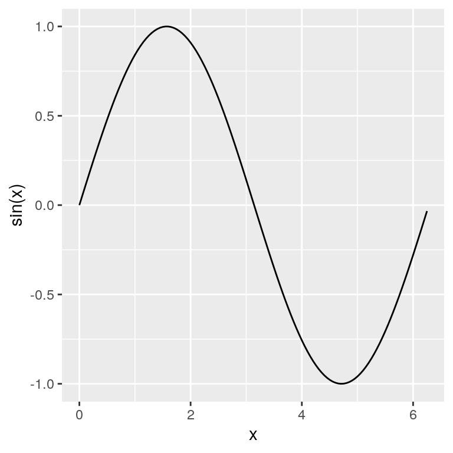
FIGURE 16: Example of an analog signal: a simple sine curve
Discrete Time Signals are not continuous. They are defined only at discrete times, and thus they are represented as a sequence of numbers (so by your experiences in R working with sequences of numbers you should already have an idea of how discrete signals are stored, how they can be manipulated, etcâ¦). Figure @ref(fig:digital} is an example of the exact same sine curve as in Figure @ref{fig:analogsignal}, but in a discrete form. Notice how there are only values at specific points, and anywhere besides those points the signal is not defined. In a real-world application, these points would correspond to measurements of the signal.
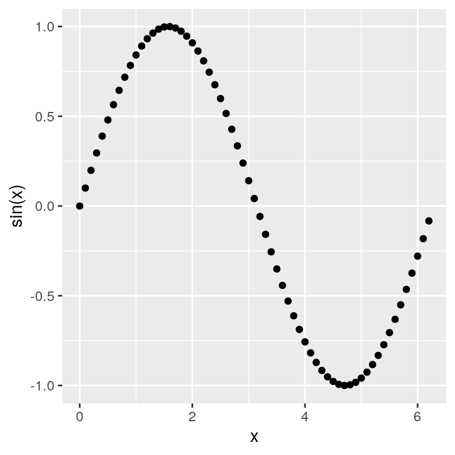
FIGURE 17: Example of a discrete signal: a sine curve with some missing values
Notice the differences between the two graphs. The second graph is not defined at every point and is only defined at the points where a data point exists. This type of sampling will become important later in the chapter and in the exercise when we begin to work with sound data (which by the way takes the form of these simple sine curves we are working with here). There are many other shapes and forms of signals, but since we will later be focusing on audio data, and the sine curve is fundamental to any sort of sound, we for now will focus on working with a sine curve.
Signals have a wide variety of properties and characteristics that give each signal distinct behavior. The sine curve has two important characteristics. First, a sine curve is said to be odd since it satisfies the condition sin\((-t)\) = -sin\((t)\). This is easy to recognize by looking at the graph of a sine curve as you see that it is symmetrical over the diagonal at the origin. In addition, a sine curve is a periodic signal. A periodic signal is a signal that repeats itself after a certain interval of time (called the Period). This is true of all real sine curves. Understanding the simple properties of signals like we have done with the sine curve is a useful tool in digital signal processing as it allows you to recognize simple patterns that may occur with the signal in which you are interested.
Now that we have a general understanding of what a signal is and how we can use itâs properties to learn about itâs behavior, letâs now focus on some of the most important concepts in digital signal processing, and how we can implement them in R. Here are three of the most central topics to DSP:
Fourier Transforms: signal processing involves looking at the frequency representation of signals for both insight and computations.
Noise: defined as any signal that is not desired. A huge part of signal processing is understanding how noise is affecting your data and how you can efficiently remove or manage it.
Filters: allow you to remove out specific portions of a signal at once, or allow you to remove noise from certain signals.
We will first briefly discuss working with noise and filters in R, and then we will work with Fourier Transforms in the context of audio data.
1.84.1 Sinusoidal Signals
As mentioned previously, sinusoidal signals are extremely important for signal processing. We saw an example of a continuous sinusoid and a discrete sinusoid. Here we will quickly discuss the mathematics behind coding a sinuosoid signal.
A sine wave typically takes the following form:
\[
f(\theta) = (\alpha) \text{sin}(b(\theta - c)) + d
\]
The translations that you see above from the standard sine wave (sin(\(\theta\))) have particular terms. Here we give a quick summary of the terms in the above equation and their definitions:
Period: the amount of time required to complete one full cycle of the sine wave. A standard sine wave has period \(2\pi\). The sine wave described above has period \(\frac{2\pi}{|b|}\)
Frequency: the number of times a sine wave repeats itself within a single unit of time (which depends upon how the variable \(\theta\) is defined). This is the reciprocal of the period so in our case this is \(\frac{|b|}{2\pi}\).
Amplitude: the âheightâ of the sine wave, or more properly, the distance from the x-axis to the most positive point of the sine wave. The standard sine wave has an amplitude of 1. The amplitude is controlled by the \(\alpha\) parameter, and thus our sine wave has amplitude \(\alpha\).
Phase Shift: determines whether or not the sine wave passes through the point (0, 0). Our sine wave mentioned above is shifted to the right by the amount \(c\) and shifted up by \(d\).
Next we draw a few plots to show graphically how all these parameters influence the signal. We will graph these as digital signals.
Now that we understand the fundamentals of sinusoids, letâs see how we can work with noise and filters on sinusoids using R.
1.85 Noise and Filters
Using filters to remove noise and obtain only the desired portions of signals is a huge part of signal processing. Here we will give a couple examples of the many different functions available in the signal package for DSP. The signal package is a set of signal processing functions that was originally written for more âstandardâ signal processing languages, Matlab and Octave, but was later translated into R. It provides an extensive set of functions including filtering functions, resampling routines, and interpolation functions. To follow along yourself, install the package with install.packages("signal").
For a first example, consider the sinusoid generated below.
>library(signal)>t <-seq(0, 1, len =100)>sig <-sin(2*pi *t)>ggplot(mapping =aes(t, sig)) ++geom_line()
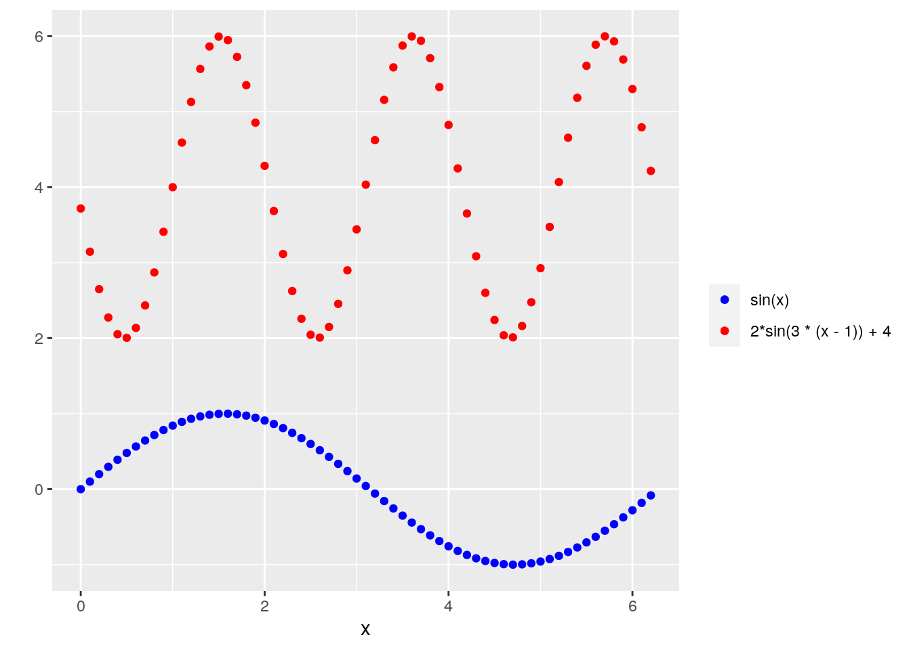
This is a simple sinusoid that has an amplitude of 1 and a frequency of 1. It is not likely that when obtaining a real-world signal you would get a perfect sinusoid without any noise. Letâs take this graph and add some noise to it.
>noisySig <-sin(2*pi *t) +0.25*rnorm(length(t))>ggplot() ++geom_line(aes(t, noisySig), color ="red")
We add noise to the function by adding a random value (0.25*rnorm(length(t)) to each value in the signal. This is more typical of a real-world signal, as you can somewhat see the general shape (the signal you are interested in), but it is somewhat distorted as a result of noise. The signal package provides a long list of functions for filtering out noise. Here we will utilize the butter function to remove the noise from this signal in an attempt to obtain our original signal. This function generates a variable containing the Butterworth filter polynomial coefficients. The Butterworth filter is a good all-around filter that is often used in radio frequency filter applications. We then use the filter function from the signal package to apply the Butterworth filter to the data. Finally we produce a plot using ggplot2 that shows the original signal without noise, the noisy signal, and the recovered signal.
Warning: `data_frame()` is deprecated, use `tibble()`.
This warning is displayed once per session.
>ggplot(allSignals, aes(t)) ++geom_line(aes(y = sig, color ="Original")) ++geom_line(aes(y = noisySig, color ="Noisy")) ++geom_line(aes(y = recoveredSig, color ="Recovered")) ++labs(x ="Time", y ="Signal")
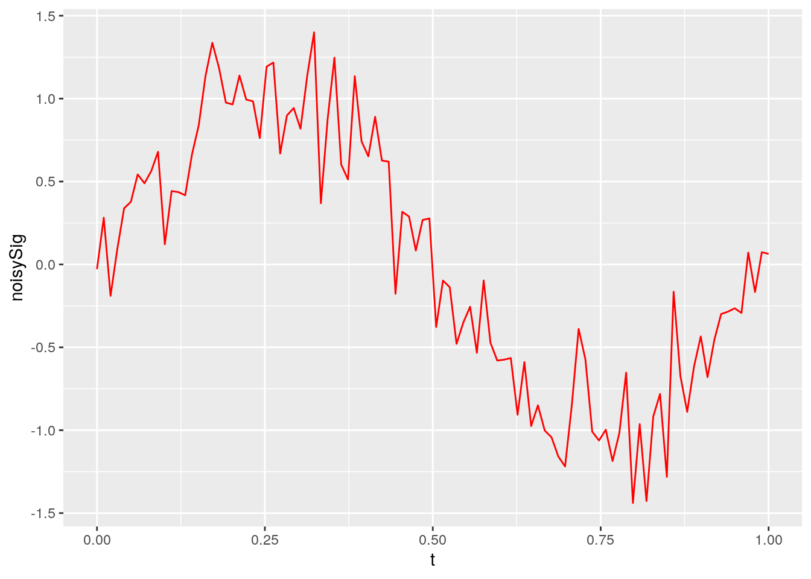
You can see that the recovered signal is not perfect, as there is still some noise in the signal, and the timing of the peaks in the signal is not exactly matched up with the original. But it is clear that we have nonetheless removed a large portion of the noise from the noisy signal. Mess around with the argument values in the butter() function in the above code. See what changing the parameters does to the recovered graph. You can also explore the wide variety of filter functions available in the signal package by exploring the package documentation here.
For a second example, suppose we are interested in not only the signal, but also the noise. We will extract the low and high frequencies from a sample signal. Letâs start with a noisy signal
Again, you can easily recognize the pattern is sinusoidal, but there is noise in the signal that you want to extract. Perhaps you are interested in where the noise is coming from and want to analyze the structure of the noise to figure this out. Thus, unlike the previous example, we want to extract the noise from the signal and not simply eliminate it. To do this we can again use the Butterworth filter.
>lowButter <-butter(2, 1/50, type ="low")>low <-signal::filter(lowButter, originalSignal)>>highButter <-butter(2, 1/25, type ="high")>high <-signal::filter(highButter, originalSignal)>>signals <-data.frame(originalSignal, low, high)>>ggplot(signals, aes(t)) ++geom_line(aes(y = originalSignal, color ="Original")) ++geom_line(aes(y = low, color ="Signal")) ++geom_line(aes(y = high, color ="Noise")) ++labs(x ="Time", y ="Signal")
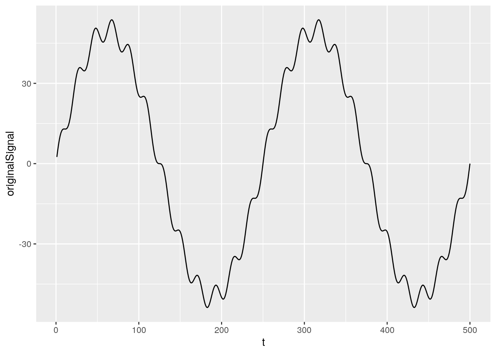
1.86 Fourier Transforms and Spectrograms
When working with signals you often have to consider whether or not you need to work in the time domain or the frequency domain. These two different domains can provide valuable information about a signal. The most popular way to explore signals in the frequency domain is to use Fourier Transforms. A Fourier Transform is a reversible mathematical transform developed by Joseph Fourier in the early 1800s. The transform breaks apart a time series into a sum of finite series of sine or cosine functions. This was a huge break through of itâs time, as Fourier argues that any signal can be broken down into a series of sine and cosine curves. This was a fantastic development and is still one of the most widely used tools in digital signal processing, which tells you how useful it truly is (and how brilliant Fourier was).
The Discrete Fourier Transform (DFT) is a specific form of the Fourier Transform applied to a time wave. The DFT allows you to switch from working in the time domain to the frequency domain by using the amplitude and the frequency of the signal to build the frequency spectrum of the original time wave.
To apply Fourier Transforms we use a window size. The length of the FT is controlled by the window length. Increasing the window size will increase frequency resolution, but this will also make the transform less accurate in terms of time as more signal will be selected for the transform. Thus there is a constant level of uncertainty between the time of the signal and the frequency of the signal59. Different windows can be used in a DFT depending on the application. There are numerous windows available within the seewave package (see Figure 18).
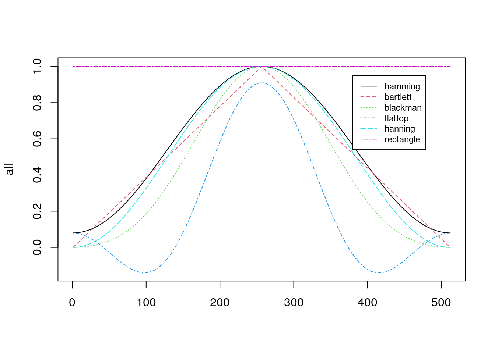
FIGURE 18: Different available filters within the seewave package
Computing a fourier transform on a whole sound or a single segment of the sound may not be enough information for what you desire. One great idea is to compute the DFT on successive sections along the entire sound signal. A window is âslidedâ along the signal and a DFT is computed at each of these slides. This process is called a Short-Time Fourier Transform. This method allows you to represent the signals in the frequency spectrum, while also maintaining most of the information from the time dimension (as Hannah Montana might say, itâs the best of both worlds).
We can plot the results of an STFT in what is called a spectrogram. The spectogram is so useful in bioacoustics, acoustics, and ecoacoustics (among others) because it allows you to represent three variables in a 2D plot, which avoids using a 3D representation that is genereally not appealing. The successive DFT are plotted against time with the relative amplitude of each sine function of each DFT represented by some color scale. In other words, the spectrogram has an x-axis of time, a y-axis of frequency, and the amplitude represented by the color scheme used inside the plot (which is usually included in a scale).
Letâs use a sample audio file provided by the seewave package and produce a spectrogram of it using the spectro function. R provides multiple functions like spectro that make the creation of spectrograms and Fourier Transforms extremely easy and logical, which is one of the many reasons to perform digital signal processing within the R environment.
>library(seewave)>data(tico)>spectro(tico)
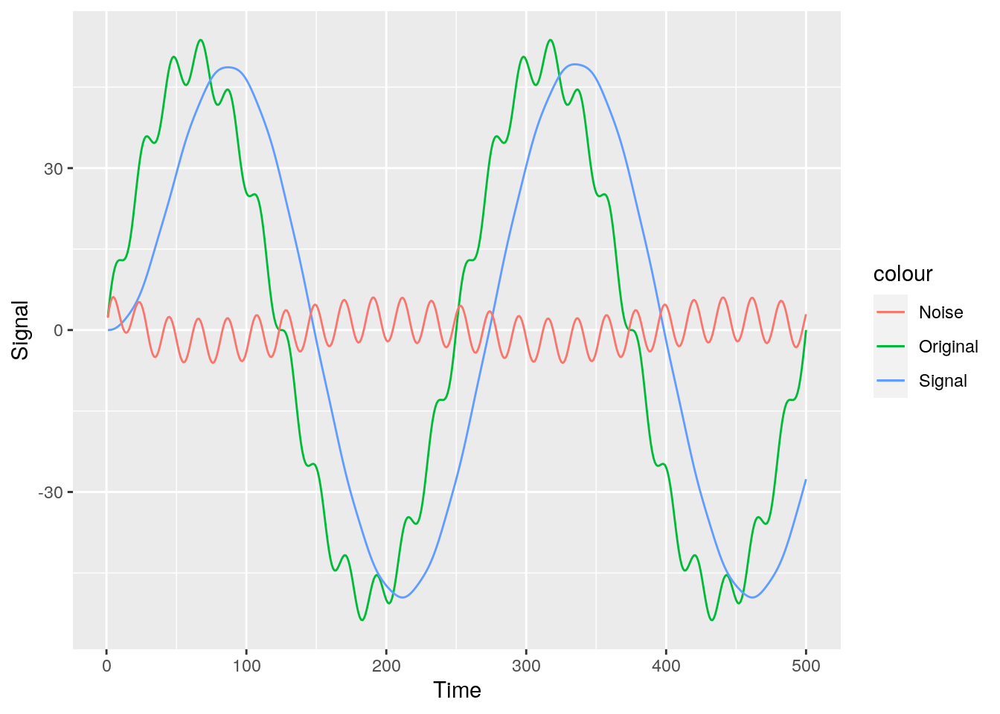
Letâs explore more of the parameters for this function to get a better understanding of how it is working. Type in ?spectro in the R console. The spectro() function contains a lot of different arguments that allow you to control how the spectrogram is created. The f argument allows you to specify the sampling rate of your sound object. The wl option allows you to control the window length that is used when the successive DFTs are produced (aka the STFT). You can choose which window you want to use with the wn option. You can also specify the amount of ovlp between two successive windows with the ovlp argument. Letâs use some of these arguments and compare it to the standard spectrogram we previously produced.
>spectro(tico, f =22050, wl =1024, wn ="bartlett", ovlp =5)
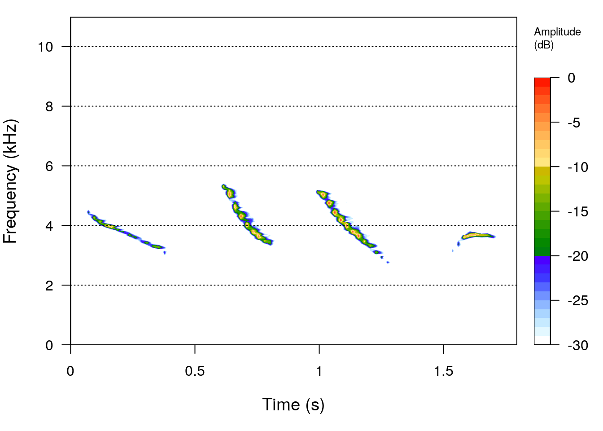
You can immediately see that there are some slight differences between the spectrograms. The first spectrogram appears to be more precise than the second spectrogram. Explore these parameters yourself to get a better understanding of how these different properties impact the short-time fourier transform and the spectrogram.
One cool thing about the spectro() function is that it produces a graph, but it also stores the values along the three scales. If you save the call to a spectro() function, that variable will be a list containing the values along the time axis, values along the frequency axis, and the amplitude values of the FFT decompositions. These values can be accessed in familiar ways ($time, $frequency, $amp).
Now that you have a visualization of the sound, we will use the tuneR package to play the sound so you can see exactly how it matches up with the spectrogram. First install the tuneR package, which is another package great for working with sound and signals in R. Then use the play function to play back the tico sound. Note that the second argument in the play function is the player argument, which may or may not need to be defined depending on your operating system and what audio players are installed on your system. In my case, I am playing the sound through the aplay player on a machine running Linux.
>library(tuneR)>play(tico, "aplay")
The audio matches up perfectly with the spectrogram. Pretty cool!
1.87 Exercises
Exercise DSP Learning objectives: download, manipulate, and play sound files using R, produce spectrograms of audio files, use filters, use acoustic indices to analyze western New York soundscape data}
_# Graphics in R Part 2: graphics {#graphics}
1.88 Scatter Plots
Begin by considering a simple and classic data set sometimes called Fisherâs Iris Data. These data are available in R.
The data contain measurements on petal and sepal length and width for dim(iris)[1] iris plants. The plants are from one of three species, and the species information is also included in the data frame. The data are commonly used to test classification methods, where the goal would be to correctly determine the species based on the four length and width measurements. To get a preliminary sense of how this might work, we can draw some scatter plots of length versus width. In graphics, making scatter plots is simple:
>plot(x = iris$Sepal.Length, y = iris$Sepal.Width)
We see the plot() function by default creates a basic scatterplot when we supply the function with values for the x and y arguments.
Looking at the scatter plot and thinking about the focus of finding a method to classify the species, two thoughts come to mind. First, the plot might be improved by shading in the points. And second, using different colors for the points corresponding to the three species would help.
>plot(x = iris$Sepal.Length, y = iris$Sepal.Width, pch =19, col = iris$Species)
The pch = argument is used to control the type of symbol used to represent the data points. pch = 19 specifies a filled in circle for each data point. You can mess around with different numbers and youâll see a wide variety of options. The col = iris$Species argument tells the plot() function to assign a different color to each unique value in the the iris$Species vector.60 Notice however that there is no legend produced by default, so we donât know which color represents each species. We can add a legend using the legend() function.
>plot(x = iris$Sepal.Length, y = iris$Sepal.Width, pch =19, col = iris$Species)>legend(x =6.4, y =4.4, legend =levels(iris$Species), +col =1:length(levels(iris$Species)), pch =19)
Letâs walk through the additional complexities one at a time:
x = 6.4, y = 4.4 specifies the location where the legend is drawn. Here I place it in a location where the box will not cover up any data points.
legend = levels(iris$Species) specifies the names of the different categories that will appear in the legend.
col = 1:length(levels(iris$Species)) specifies the number of colors that are represented in the function. In this case, we use length(levels(iris$Species)) to get the number of unique species in the data set, which turns out to be 3.
pch = 19 specifies the type of symbol to include in the legend.
It may seem like there are a lot of arguments to specify to produce a legend and a simple scatter plot, but this also means we have a lot of control over the graph, which is very useful when you are trying to develop a publication-quality figure for your own work.
Now perhaps we want to use different shapes as well for the different species. To do this we assign different values for the pch argument to each species, and subsequently change the pch argument in the legend as well.
>plot(x = iris$Sepal.Length, y = iris$Sepal.Width, pch =c(17, 18, 19)[iris$Species], col = iris$Species)>legend(x =6.4, y =4.4, legend =levels(iris$Species), +col =1:length(levels(iris$Species)), pch =c(17, 18, 19))
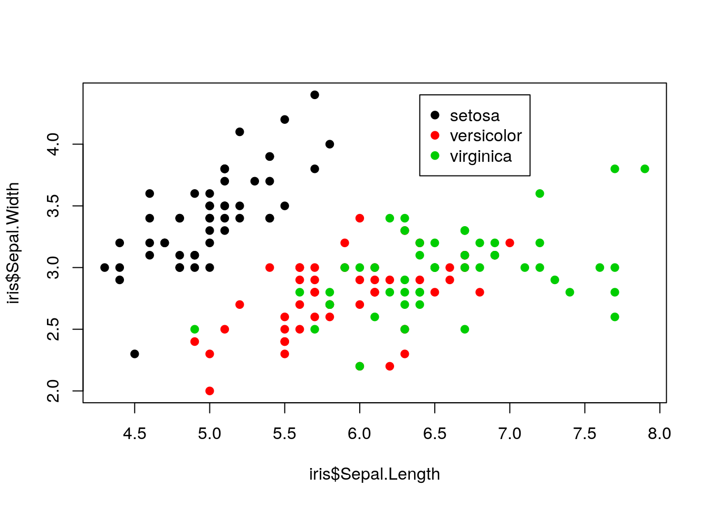
1.88.1 Adding lines to a scatter plot
Next letâs add a fitted least squares line to the scatter plot. This can be done pretty easily using the abline() function to add a straight ine to the curve, and the lm() function to actually compute the least squares line
>plot(x = iris$Sepal.Length, y = iris$Sepal.Width, pch =c(17, 18, 19)[iris$Species], col = iris$Species)>legend(x =6.4, y =4.4, legend =levels(iris$Species), +col =1:length(levels(iris$Species)), pch =c(17, 18, 19))>abline(lm(iris$Sepal.Width ~iris$Sepal.Length))
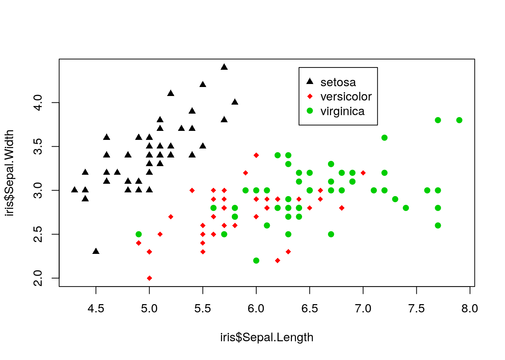
For the iris data, it probably makes more sense to fit separate lines by species. Below we compute the linear model separately for each species, then use the abline() function to add each line to the graph. Note our use of logical subsetting to obtain separate data frames for each species.
>iris.setosa <-iris[iris$Species == "setosa", ]>iris.versicolor <-iris[iris$Species == "versicolor", ]>iris.virginica <-iris[iris$Species == "virginica", ]>plot(x = iris$Sepal.Length, y = iris$Sepal.Width, pch =c(17, 18, 19)[iris$Species], col = iris$Species)>legend(x =6.4, y =4.4, legend =levels(iris$Species), +col =1:length(levels(iris$Species)), pch =c(17, 18, 19))>abline(lm(iris.setosa$Sepal.Width ~iris.setosa$Sepal.Length), col =1)>abline(lm(iris.versicolor$Sepal.Width ~iris.versicolor$Sepal.Length), col =2)>abline(lm(iris.virginica$Sepal.Width ~iris.virginica$Sepal.Length), col =3)
Note that we could also do this using a for loop, which you will learn about soon in Chapter ??.
>iris.setosa <-iris[iris$Species == "setosa", ]>iris.versicolor <-iris[iris$Species == "versicolor", ]>iris.virginica <-iris[iris$Species == "virginica", ]>plot(x = iris$Sepal.Length, y = iris$Sepal.Width, pch =c(17, 18, 19)[iris$Species], col = iris$Species)>legend(x =6.4, y =4.4, legend =levels(iris$Species), +col =1:length(levels(iris$Species)), pch =c(17, 18, 19))>for (i in1:length(levels(iris$Species))) {+curr.species <-iris[iris$Species ==levels(iris$Species)[i], ]+abline(lm(curr.species$Sepal.Width ~curr.species$Sepal.Length), col = i)+}
Another common use of line segments in a graphic is to connect the points in order. Although it is not clear why this helps in understanding the iris data, the technique is illustrated next. First we connect all lines regardless of species. This is done easily by specifying the argument type = 'b' in the plot() function61
>plot(x = iris$Sepal.Length, y = iris$Sepal.Width, pch =c(17, 18, 19)[iris$Species], col = iris$Species, type ='b')>legend(x =6.4, y =4.4, legend =levels(iris$Species), +col =1:length(levels(iris$Species)), pch =c(17, 18, 19))
Now we attempt to only connect the points within a given species. Doing this requires the use of the lines() function to draw three separate lines for each species62 First we create a plot for the first species, and then subsequently use the lines() function to add each of the remaining two species to the plot. Notice that there are some additional arguments in the original plot() function that we have yet to cover. Donât worry, weâll talk about all this fun stuff in the next section :)
>plot(x = iris$Sepal.Length[iris$Species == "setosa"], y = iris$Sepal.Width[iris$Species == "setosa"], pch =17, col =1, type ='b', xlim =range(iris$Sepal.Length), ylim =range(iris$Sepal.Width), xlab ="Sepal Length", ylab ="Sepal Width")>lines(x = iris$Sepal.Length[iris$Species == "versicolor"], y = iris$Sepal.Width[iris$Species == "versicolor"], pch =18, col =2, type ='b')>lines(x = iris$Sepal.Length[iris$Species == "virginica"], y = iris$Sepal.Width[iris$Species == "virginica"], pch =19, col =3, type ='b')>legend(x =6.4, y =4.4, legend =levels(iris$Species), +col =1:length(levels(iris$Species)), pch =c(17, 18, 19))
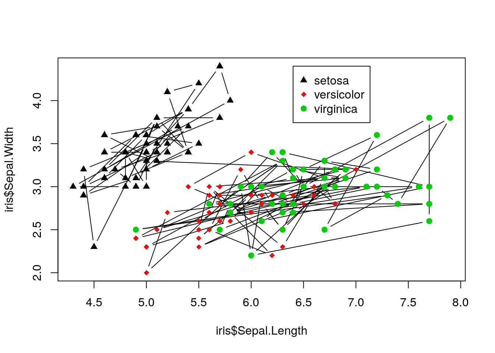
1.89 Labels, Axes, Text, etc.
The default settings of graphics often produce useful graphics, but once a graphic is chosen for dissemination, the user will likely want to customize things like the title, axes, etc. In this section some tools for customization are presented. Most will be illustrated in the context of a data set on crime rates in the 50 states in the United States. These data were made available by Nathan Yau at http://flowingdata.com/2010/11/23/how-to-make-bubble-charts/. The data include crime rates per 100,000 people for various crimes such as murder and robbery, and also include each stateâs population. The crime rates are from the year 2005, while the population numbers are from the year 2008, but the difference in population between the years is not great, and the exact population is not particularly important for what weâll do below.
First, read in the data, examine its structure, and produce a simple scatter plot of motor vehicle theft versus burglary.
By default, axis labels are the values of the x and y values you supply to the plot() function. For making a publication-quality figure, we often want to further customize these labels, as well as potentially add a title to the graph. We can do this using the xlab, ylab, and main arguments in the plot() function.
>plot(crime$burglary, crime$motor_vehicle_theft, pch =19, +xlab ="Burglaries per 100,000 population", +ylab ="Motor vehicle theft per 100,000 population", +main ="Burglaries vs motor vehicle theft for US states")
Perhaps it may be easier to read the values on the y-axis if they were oritented horizontally instead of vertically. We can do this using the las = 1 argument.
>plot(crime$burglary, crime$motor_vehicle_theft, pch =19, +xlab ="Burglaries per 100,000 population", +ylab ="Motor vehicle theft per 100,000 population", +main ="Burglaries vs motor vehicle theft for US states", +las =1)
1.90 Customizing Axes
The basic plot() function provides defaults for the axis limits, as well as for other axis features (i.e., the box around the plot). These, and other axis features such as tick marks, labels, and transformations, can all be customized. First, we use the xlim and ylim arguments to make the x and y axes start at zero and go to the maxium x and y values.
>plot(crime$burglary, crime$motor_vehicle_theft, pch =19, +xlab ="Burglaries per 100,000 population", +ylab ="Motor vehicle theft per 100,000 population", +main ="Burglaries vs motor vehicle theft for US states", +las =1, xlim =c(0, max(crime$burglary)), +ylim =c(0, max(crime$motor_vehicle_theft)))
Now we eliminate the axes and box automatically drawn by the plot() function, and subsequently add our own axes using the axis() function. We use most of the defaults provided by the axis() function, however, looking at the help page for axis() reveals a large amount of possibilities for customizing the axes in whatever way you desire.
>plot(crime$burglary, crime$motor_vehicle_theft, pch =19, +xlab ="Burglaries per 100,000 population", +ylab ="Motor vehicle theft per 100,000 population", +main ="Burglaries vs motor vehicle theft for US states", +las =1, axes =FALSE, +xlim =c(0, max(crime$burglary)), +ylim =c(0, max(crime$motor_vehicle_theft)))>axis(side =1)>axis(side =2, las =1)
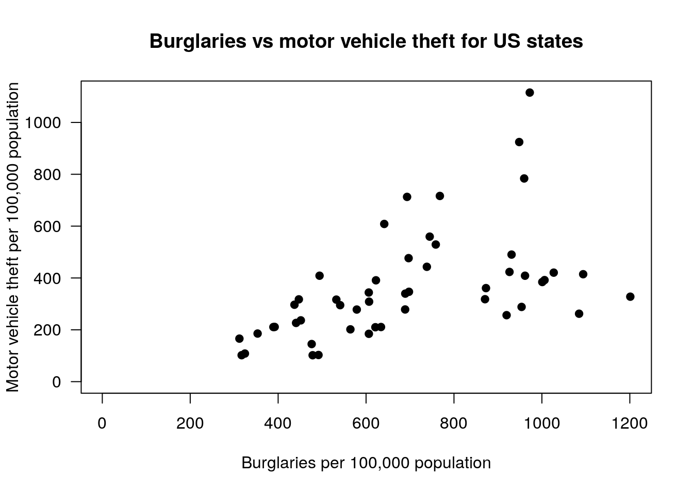
1.90.1 Text, Point Size, and Color
Next we make point size proportional to population, change the color, and add a state label. First we make point size proportional to population size using the symbols() function. We can control the color of the points using the bg argument in the symbols() function. We then use the text() function to add labels to each point.
>symbols(crime$burglary, crime$motor_vehicle_theft, pch =19, +xlab ="Burglaries per 100,000 population", +ylab ="Motor vehicle theft per 100,000 population", +main ="Burglaries vs motor vehicle theft for US states", +las =1, +xlim =c(0, max(crime$burglary)), +ylim =c(0, max(crime$motor_vehicle_theft)), +circles = crime$population, +inches =1/5, axes =FALSE, bg="steelblue2")>axis(side =1)>axis(side =2, las =1)>text(crime$burglary, crime$motor_vehicle_theft, labels=crime$state, cex=0.9, font=2)
This graph is mind-numbingly busy, and is missing some notable things (i.e. legend). For now, we leave it up to you to add in a legend, make the graph less cluttered, fix the cutoff labels, etc. if you so desire.
You run an experiment to see if the number of alcoholic beverages a person has on average every day is related to weight. You collect 15 data points. Enter these data in R by creating vectors, and then reproduce the following plot.
# of Drinks
Weight
1.0
150
3.0
350
2.0
200
0.5
140
2.0
200
1.0
160
0.0
175
0.0
140
0.0
167
1.0
200
4.0
300
5.0
321
2.0
250
0.5
187
1.0
190
1.91 Other Types of Graphics
Scatter and line plots, which have just been presented, are common but certainly not the only graphical displays in common use. Histograms, boxplots, and bar graphs, as well as more âmathematicalâ displays such as the graph of a function, are commonly used to represent data. Examples of each are presented below.
1.91.1 Histograms
Simon Newcomb conducted several experiments to estimate the speed of light by measuring the time it took for light to travel from his laboratory to a mirror at the base of the Washington Monument, and then back to his lab. This is a distance of \(7.44373\) km, and by dividing this distance by the measured time, an estimate for the speed of light is obtained.
The times are of course quite small, and to avoid working with very small numbers, the data are recoded to be the deviation from \(24800\) nanoseconds. For example an observation coded as \(28\) represents a time of \(24828\) nanoseconds, while an observation coded as \(-44\) represents a time of \(24756\) nanoseconds.
To produce a simple histogram of these data in the graphics package, we can use the simple hist() function.
>hist(Newcomb$Time)
The function automatically specifies the binwidths for the data, however we can easily change this ourselves to something more suitable using the breaks argument. We also change the axis labels, y-axis label orientation, title, and color of the bins.
>hist(Newcomb$Time, breaks =30, main ="Histogram", xlab ="Time", las =1, col ='blue')
1.91.2 Boxplots
Next we consider some data from the gap minder data set to construct some box plots. These data are available in the gapminder package, which might need to be installed via install.packages("gapminder").
>library(gapminder)
Attaching package: 'gapminder'
The following object is masked _by_ '.GlobalEnv':
gapminder
>boxplot(gdpPercap ~continent, data =subset(gapminder, year ==2002), pch =19, col ='lightblue', las =1, xlab ="Continent", ylab ="GDP Per-capita")
Hereâs the same set of boxplots, but with different colors and the boxes plotted horizontally rather than vertically
>boxplot(gdpPercap ~continent, data =subset(gapminder, year ==2002), pch =19, border ='red', col ='lightblue', las =1, xlab ="GDP Per-Capita", ylab ="Continent", horizontal =TRUE)
However, notice in the last two graphs the y-axis labels were running off the page. Using the graphics package, we have the ability to adjust all the dimensions and parameters of a plot by using the par function. Below we utilize the par function to extend the amount of space in the plot on the left side of the graph.
>par(mar=c(6,4,4,2))>boxplot(gdpPercap ~continent, data =subset(gapminder, year ==2002), pch =19, border ='red', col ='lightblue', las =1, xlab ="GDP Per-Capita", ylab ="Continent", horizontal =TRUE)
1.91.3 Bar Graphs
As part of a study, elementary school students were asked which was more important to them: good grades, popularity, or athletic ability. Here is a brief look at the data.
Gender Grade Age Race Type School Goals Grades
1 boy 5 11 White Rural Elm Sports 1
2 boy 5 10 White Rural Elm Popular 2
3 girl 5 11 White Rural Elm Popular 4
4 girl 5 11 White Rural Elm Popular 2
5 girl 5 10 White Rural Elm Popular 4
6 girl 5 11 White Rural Elm Popular 4
Sports Looks Money
1 2 4 3
2 1 4 3
3 3 1 2
4 3 4 1
5 2 1 3
6 2 1 3
First, a simple bar graph of the most important goal chosen is drawn, followed by a stacked bar graph which also includes the studentâs gender. We then add a side by side bar graph that includes the studentâs gender.
>counts <-table(StudentGoals$Goals)>counts
Grades Popular Sports
247 141 90
>barplot(counts)
Notice that to create a basic bar graph using the graphics package, we first take our variable of interest StudentGoals$Goals and put it in table format using the table() function. Next we produce a stacked bar graph that also includes the studentâs gender. Then we subsequently add a side by side bar graph that includes the studentâs gender.
>gender.counts <-table(StudentGoals$Gender, StudentGoals$Goals)>barplot(gender.counts, col =c("red", "lightblue"), las =1, ylab ="Count", xlab ="Goals")>legend(x ="topright", legend =row.names(gender.counts), col =c("red", "lightblue"), pch =15)
>gender.counts <-table(StudentGoals$Gender, StudentGoals$Goals)>barplot(gender.counts, col =c("red", "lightblue"), las =1, ylab ="Count", xlab ="Goals", beside =TRUE)>legend(x ="topright", legend =row.names(gender.counts), col =c("red", "lightblue"), pch =15)
In this example R counted the number of students who had each goal and used these counts as the height of the bars. Sometimes the data contain the bar heights as a variable. For example, we create a bar graph of Indiaâs per capita GDP with separate bars for each year in the data63.
>india <-subset(gapminder, country == "India")>gdp.india <-india$gdpPercap>names(gdp.india) <-india$year>barplot(gdp.india, xlab ="Year", ylab ="GDP Per Capita", main ="India's per-capita GDP", col ="steelblue2")
1.91.4 Graphs of Functions
One way to create a plot of a mathematical function \(f\) is to create a data frame with \(x\) values in one column and \(f(x)\) values in another column, and then draw a line plot.
>x <-seq(-pi, pi, len =1000)>sin.x <-sin(x)>plot(x, sin.x, type ='l')
1.92 Saving Graphics
We often want to export our graphics to use in an external document or share with colleagues. There are numerous functions available to export graphic files in different formats. Below we demonstrate the use of the png() function to export the image of the sin curve we created above.
>png("sinCurve.png")>plot(x, sin.x, type ='l')>dev.off()
Inside the png() function, we specify the name the image is given when it is saved. There are also arguments to specify the width and height of the saved image. This function opens a png file where the image will be saved. There are analagous functions for other types of files (i.e. pdf(), jpeg()). The second line plot(x, sin.x, type = 'l') simply creates the plot we desire to save. The dev.off() function closes the png file.
1.93 A Summary of Useful graphics Functions and Arguments
Upon initial learning, making plots with the graphics package may seem overwhelming due to the variety of different functions and arguments that control different features of the image that is produced. However, after some practice, you will find that the graphics method of graphing gives you great flexibility in making your images just the way you like them. This flexibility and control is one of the main reasons we produce most of our visualizations using graphics.
Below we provide a summary of the major functions and arguments you may find helpful when working with the graphics package. This is certainly not an exhaustive list, but it does include functions and arguments we often use on a daily basis, so we think youâll find it useful. One of the nice things about the graphics package is that many of these functions utilize the same arguments.
plot(x, y): the basic plotting function. Many of the graphs you produce will start with the plot() function. Here are some useful arguments (aside from x and y arguments to specify the data):
pch: specify the type of point in a scatter plot. We often use pch = 19.
xlab and ylab: specify the x and y axis labels
xlim and ylim: specify the range of the x and y axes
type: specify the type of the plot. By default it is p, can create a line plot with type = 'l' or a scatter plot with lines with type = 'b'.
main: add a title to the plot
cex, cex.lab, cex.main: change the sizes of the points, the size of the axis label text, and the size of the title text, respectively
col: specify the color of the points/lines
axes: if TRUE axes will be automatically drawn, if FALSE no axes will be drawn.
legend(x, y, legend): add a legend to the graph specified by the location (x, y) with the text specified by the legend argument.
points(x, y): add points to an already existing plot. Arguments same as those of plot().
lines(x, y): add lines to an already existing plot. Arguments same as those of plot().
axis(): specify the axes
text(x, y): add text to a plot at the location (x, y).
par(): function to change a wide variety of graphical parameters for finer control over the plotâs appearance.
The functions listed above certainly do not cover the realm of plots you can produce using the graphics package, but having a good understanding of how to use these functions will give you a firm grip on making publication-quality plots in R.
For additional help, we find that the help pages for most graphics functions are quite helpful. The online documentation for the package available here perhaps provides a more user friendly version of the help pages within R. There are also numerous books and online tutorials available for working with these functions, so a simple google search is often the best way to find additional help :)
1.93.1 Practice Problem
Go to the help page for the par() function (use help(par) or ?par()). Look at the plethora of different arguments that you can use to specialize your plot just the way you like it. List 5 arguments that we didnât use in this chapter, describe what they do, then use them in a graph using the iris data set (you can use any of the variables in the data set and produce any type of graph you like).
_# Basic Statistics in R {#stats}
R is at its core a statistical programming langauge. Much of the increase in popularity of R is a result of the need for statisticians, scientists, economists, and others to develop and implement advanced statistical techniques in a streamlined and straightforward manner. R provides just that, and since it is a full programming language, it offers great flexibility in implementing statistical procedures and fine-tuning them to meet the specific needs of different projects, something that is often hard to do using âpoint and clickâ statistical software packages. In this chapter we provide a brief overview of some basic statistical tools in R with a focus on linear modeling techniques commonly used in disciplines ranging from ecology to economics to engineering. We are not attempting to provide a complete overview of statistical modeling in R, or even linear modeling, but rather seek to provide an introduction to some basic statistical tools in R that should get you on your way to doing all of your statistical analyses in R. Here we also take a very applied approach and do not focus on the underlying theory of how R is implementing the different methods we review. Rather, we assume some basic familiarity with statistical analyeses and focus on how we can use R to implement basic statistical tools. We end the chapter by providing a list of some baic functions and R packages for further statistical analyeses.
1.94 Basics of Linear Models
Linear models can be considered the building block of statistics. Many advanced statistical tools are at their simplest forms extensions of linear models to account for additional complexities in data. For example, basic geostatistical models in spatial statitistics are simple extensions of linear models to account for non-independence across two-dimensional space. Generalized linear models are widely used extensions of the basic linear model to accommodate data that cannot reasonably be assumed to follow a normal distribution. Thus, a solid understanding of linear models and how to implement them in R is an essential building block to more complex statistical analyses.


![Raster/Vector Comparison [@imageRaster]](../figures/Raster_vector_tikz.png)